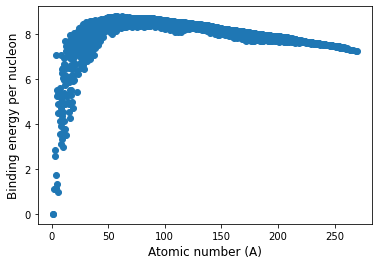

SDS 271 Lab 4: Data Science Libraries in Python
Note: parts of this lab were adapted from the DSECOP module “Introduction to Data Science Libraries: Using Pandas, Matplotlib, and Seaborn to Analyze Physics Data” by Julie Butler.
The goal of this notebook is to introduce you to three libraries that are commonly used in data science to analyze, format, and display data sets that are stored in files. The second half of this notebook is also framed around exploring data sets specific to physics.
Introduction to Data Science Libraries
This notebook will introduce you to three libraries commonly used in data science and help analyze physics data. Pandas (which you have already seen) provide ways to easily import data from a file and save it a Pandas Dataframe, which allows us to easily display the data as a table, access the different columns of data, and begin formatting the data for later analysis. The other two libraries used in this notebook, Seaborn and Matplotlib (which you’ve also seen already), are used to create graphs from the data set. We will learn about Seaborn and dig into more advanced plotting with Matplotlib in this lab. Each graphing library has its strengths and reasons to use, which will be discussed later in the notebook.
It maybe easier to think about these libraries by thinking about their relationships to each other. NumPy, one of the standard Python libraries, provides an implementation of a data structure called arrays, which allows us to easily manipulate one and two dimensional data sets. However, it can be hard to display a matrix of data and extract different column, especially since NumPy does not provide headers for its columns. Pandas is simply a wrapper for NumPy arrays which provides an easy way to display, access, and manipulate two dimensional data sets. However, underneath the hood it is simply using NumPy arrays.
Likewise, Matplotlib is the simplest graphing library avaliable in Python and its default graphs are quite plain. Seaborn is a wrapper of the Matplotlib class which adds more formatting to the default graphs and also provides the creation of some compound graphs, such as pairplot that we will look at below.
Introduction to the Data Set
The data set we will investigate in this notebook contains the following data for every measurable isotope: number of neutrons, number of protons, number of nucleons, binding energy, the uncertainty of binding energy measurement, atomic mass, and uncertainty on mass measurement. This notebook section will help you better understand this data set and why nuclear scientists may want to study it.
Isotopes and Nucleons
The nucleus of an atom contains two types of particles: positively charged particles called protons and neutral particles called neutrons. The total number of protons in the nucleus is Z, and the total number of neutrons is N. Protons and neutrons are both types of nucleons, so the total number of nucleons in the nucleus is A = Z + N.
The number of protons in the nucleus determines what element it is. For example, all nuclei with 12 protons are carbon nuclei, all nuclei with 1 proton are hydrogen, and all nuclei with 20 protons are calcium. However, the number of neutrons in a nucleus does not define an element. So there are carbon atoms with 11 neutrons, 12 neutrons, 13 neutrons, and so on. Nuclei that have the same number of protons but different numbers of neutrons are referred to as isotopes of each other.
Atomic Mass
An atom’s atomic mass is the atom’s total mass (i.e., the nucleus and the protons). Note that it is not the same as the sum of the masses of the particles that make up the atom. This will be explored in the next section.
Binding Energy
The mass of an atomic nucleus will be less than the total mass of its constituent particles. This difference in mass is called the binding energy, as it is the energy required to hold the atom together. Remember that mass and energy are related by the famous equation from Einstein: \(E = mc^2\).
To calculate the theoretical binding energies using Einstein’s equation, we can define the binding energy as:
\[BE = Mc^2 - mc^2,\]
where M is the total mass of all of the particles in the atom, m is the actual atomic mass of the atom, and c is the speed of light in a vacuum. We can define M as:
\[M = Z(m_p + m_e) + Nm_n,\]
where m\(_p\) is the mass of a proton, m\(_e\) is the mass of an electron, and m\(_n\) is the mass of a neutron. So, we can rewrite the binding energy as:
\[BE = ((m_p + m_e)Z + m_nN - m)c^2.\]
Next, we can define the atomic mass of hydrogen as one proton plus one electron: \[m_h = m_p + m_e,\]
which means we can rewrite the binding energy as:
\[BE = (m_hZ + m_nN - m)c^2,\]
where \(m_h\) = 1.007 MeV, \(m_n\) = 1.008 MeV and \(c^2\) = 931.49 MeV/u.
The binding energies in the data set are experimental binding energies. Later in this notebook, we will determine how well the experimental binding energies correspond to the theoretical ones we defined in this section.
Uncertainties
The atomic masses and binding energies in this data set were collected through experiments. Any data collected through experimentation has uncertainty in it. Though these are usually relatively small, they are also presented in this data set.
Imports
Exercise 1: Import the following packages that you’ve already seen to this notebook:
- numpy (as np)
- pyplot from matplotlib (as plt)
-
pandas (as pd)
Importing the Data as a Dataframe
The data set is saved in the file “NuclearData.tsv”, which you can find in Moodle. Upload that file to the same directory in JupyterHub where you have this notebook saved.
We’re going to read in this data using the read_csv() function that you used in the last lab. But note that the data is a “.tsv” file, which means the data is separated by tabs and not commas.
Exercise 2:
Read the documentation for the read_csv() function and figure out what you need to do to make this work for a tab-separated file. Then, import the data into a dataframe – call this dataframe “nuclear_data” as we will be working with a mix of examples and exercises and it will be easiest if we all use the same name.
Hint: remember the regex shorthands you learned in SDS 192.
First, lets confirm that nuclear_data is a Pandas Dataframe by printing its type.
type(nuclear_data)pandas.core.frame.DataFrameNow lets print nuclear_data to see what the DataFrame looks like.
Note, you can also print just the head() or tail(), and if you have a very large DataFrame, it will be easier to do that if you just want to see the basic structure. But let’s go ahead and print the whole thing.
nuclear_data31b8e172-b470-440e-83d8-e6b185028602:dAB5AHAAZQA6AE8AQQBCAGwAQQBHAFkAQQBOAFEAQgBoAEEARABjAEEATgB3AEEAeQBBAEMAMABBAFoAQQBCAGsAQQBEAFkAQQBNAHcAQQB0AEEARABRAEEATgBnAEEAeQBBAEQASQBBAEwAUQBBADQAQQBEAFEAQQBZAGcAQgBtAEEAQwAwAEEAWQBRAEIAbQBBAEQARQBBAE8AUQBBADUAQQBEAFUAQQBZAFEAQQB4AEEARwBJAEEATQBnAEIAaQBBAEQAawBBAAoAcABvAHMAaQB0AGkAbwBuADoATgB3AEEAegBBAEQAVQBBAE0AdwBBAD0ACgBwAHIAZQBmAGkAeAA6AAoAcwBvAHUAcgBjAGUAOgBQAEEAQgAwAEEARwBFAEEAWQBnAEIAcwBBAEcAVQBBAEkAQQBCAGkAQQBHADgAQQBjAGcAQgBrAEEARwBVAEEAYwBnAEEAOQBBAEMASQBBAE0AUQBBAGkAQQBDAEEAQQBZAHcAQgBzAEEARwBFAEEAYwB3AEIAegBBAEQAMABBAEkAZwBCAGsAQQBHAEUAQQBkAEEAQgBoAEEARwBZAEEAYwBnAEIAaABBAEcAMABBAFoAUQBBAGkAQQBEADQAQQBDAGcAQQBnAEEAQwBBAEEAUABBAEIAMABBAEcAZwBBAFoAUQBCAGgAQQBHAFEAQQBQAGcAQQBLAEEAQwBBAEEASQBBAEEAZwBBAEMAQQBBAFAAQQBCADAAQQBIAEkAQQBJAEEAQgB6AEEASABRAEEAZQBRAEIAcwBBAEcAVQBBAFAAUQBBAGkAQQBIAFEAQQBaAFEAQgA0AEEASABRAEEATABRAEIAaABBAEcAdwBBAGEAUQBCAG4AQQBHADQAQQBPAGcAQQBnAEEASABJAEEAYQBRAEIAbgBBAEcAZwBBAGQAQQBBADcAQQBDAEkAQQBQAGcAQQBLAEEAQwBBAEEASQBBAEEAZwBBAEMAQQBBAEkAQQBBAGcAQQBEAHcAQQBkAEEAQgBvAEEARAA0AEEAUABBAEEAdgBBAEgAUQBBAGEAQQBBACsAQQBBAG8AQQBJAEEAQQBnAEEAQwBBAEEASQBBAEEAZwBBAEMAQQBBAFAAQQBCADAAQQBHAGcAQQBQAGcAQgBPAEEARAB3AEEATAB3AEIAMABBAEcAZwBBAFAAZwBBAEsAQQBDAEEAQQBJAEEAQQBnAEEAQwBBAEEASQBBAEEAZwBBAEQAdwBBAGQAQQBCAG8AQQBEADQAQQBXAGcAQQA4AEEAQwA4AEEAZABBAEIAbwBBAEQANABBAEMAZwBBAGcAQQBDAEEAQQBJAEEAQQBnAEEAQwBBAEEASQBBAEEAOABBAEgAUQBBAGEAQQBBACsAQQBFAEUAQQBQAEEAQQB2AEEASABRAEEAYQBBAEEAKwBBAEEAbwBBAEkAQQBBAGcAQQBDAEEAQQBJAEEAQQBnAEEAQwBBAEEAUABBAEIAMABBAEcAZwBBAFAAZwBCAEYAQQBFAHcAQQBQAEEAQQB2AEEASABRAEEAYQBBAEEAKwBBAEEAbwBBAEkAQQBBAGcAQQBDAEEAQQBJAEEAQQBnAEEAQwBBAEEAUABBAEIAMABBAEcAZwBBAFAAZwBCAEMAQQBFAFUAQQBQAEEAQQB2AEEASABRAEEAYQBBAEEAKwBBAEEAbwBBAEkAQQBBAGcAQQBDAEEAQQBJAEEAQQBnAEEAQwBBAEEAUABBAEIAMABBAEcAZwBBAFAAZwBCAEMAQQBFAFUAQQBaAEEAQQA4AEEAQwA4AEEAZABBAEIAbwBBAEQANABBAEMAZwBBAGcAQQBDAEEAQQBJAEEAQQBnAEEAQwBBAEEASQBBAEEAOABBAEgAUQBBAGEAQQBBACsAQQBFADAAQQBRAFEAQgBUAEEARgBNAEEAUABBAEEAdgBBAEgAUQBBAGEAQQBBACsAQQBBAG8AQQBJAEEAQQBnAEEAQwBBAEEASQBBAEEAZwBBAEMAQQBBAFAAQQBCADAAQQBHAGcAQQBQAGcAQgBOAEEARQBFAEEAVQB3AEIAVABBAEcAUQBBAFAAQQBBAHYAQQBIAFEAQQBhAEEAQQArAEEAQQBvAEEASQBBAEEAZwBBAEMAQQBBAEkAQQBBADgAQQBDADgAQQBkAEEAQgB5AEEARAA0AEEAQwBnAEEAZwBBAEMAQQBBAFAAQQBBAHYAQQBIAFEAQQBhAEEAQgBsAEEARwBFAEEAWgBBAEEAKwBBAEEAbwBBAEkAQQBBAGcAQQBEAHcAQQBkAEEAQgBpAEEARwA4AEEAWgBBAEIANQBBAEQANABBAEMAZwBBAGcAQQBDAEEAQQBJAEEAQQBnAEEARAB3AEEAZABBAEIAeQBBAEQANABBAEMAZwBBAGcAQQBDAEEAQQBJAEEAQQBnAEEAQwBBAEEASQBBAEEAOABBAEgAUQBBAGEAQQBBACsAQQBEAEEAQQBQAEEAQQB2AEEASABRAEEAYQBBAEEAKwBBAEEAbwBBAEkAQQBBAGcAQQBDAEEAQQBJAEEAQQBnAEEAQwBBAEEAUABBAEIAMABBAEcAUQBBAFAAZwBBAHgAQQBEAHcAQQBMAHcAQgAwAEEARwBRAEEAUABnAEEASwBBAEMAQQBBAEkAQQBBAGcAQQBDAEEAQQBJAEEAQQBnAEEARAB3AEEAZABBAEIAawBBAEQANABBAE0AQQBBADgAQQBDADgAQQBkAEEAQgBrAEEARAA0AEEAQwBnAEEAZwBBAEMAQQBBAEkAQQBBAGcAQQBDAEEAQQBJAEEAQQA4AEEASABRAEEAWgBBAEEAKwBBAEQARQBBAFAAQQBBAHYAQQBIAFEAQQBaAEEAQQArAEEAQQBvAEEASQBBAEEAZwBBAEMAQQBBAEkAQQBBAGcAQQBDAEEAQQBQAEEAQgAwAEEARwBRAEEAUABnAEIAdQBBAEQAdwBBAEwAdwBCADAAQQBHAFEAQQBQAGcAQQBLAEEAQwBBAEEASQBBAEEAZwBBAEMAQQBBAEkAQQBBAGcAQQBEAHcAQQBkAEEAQgBrAEEARAA0AEEATQBBAEEAdQBBAEQAQQBBAFAAQQBBAHYAQQBIAFEAQQBaAEEAQQArAEEAQQBvAEEASQBBAEEAZwBBAEMAQQBBAEkAQQBBAGcAQQBDAEEAQQBQAEEAQgAwAEEARwBRAEEAUABnAEEAdwBBAEMANABBAE0AQQBBADgAQQBDADgAQQBkAEEAQgBrAEEARAA0AEEAQwBnAEEAZwBBAEMAQQBBAEkAQQBBAGcAQQBDAEEAQQBJAEEAQQA4AEEASABRAEEAWgBBAEEAKwBBAEQARQBBAE0AQQBBAHcAQQBEAGcAQQBOAGcAQQAyAEEARABRAEEATABnAEEANQBBAEQARQBBAE4AUQBBADQAQQBEAEkAQQBQAEEAQQB2AEEASABRAEEAWgBBAEEAKwBBAEEAbwBBAEkAQQBBAGcAQQBDAEEAQQBJAEEAQQBnAEEAQwBBAEEAUABBAEIAMABBAEcAUQBBAFAAZwBBAHcAQQBDADQAQQBNAEEAQQB3AEEARABBAEEATgBBAEEANQBBAEQAdwBBAEwAdwBCADAAQQBHAFEAQQBQAGcAQQBLAEEAQwBBAEEASQBBAEEAZwBBAEMAQQBBAFAAQQBBAHYAQQBIAFEAQQBjAGcAQQArAEEAQQBvAEEASQBBAEEAZwBBAEMAQQBBAEkAQQBBADgAQQBIAFEAQQBjAGcAQQArAEEAQQBvAEEASQBBAEEAZwBBAEMAQQBBAEkAQQBBAGcAQQBDAEEAQQBQAEEAQgAwAEEARwBnAEEAUABnAEEAeABBAEQAdwBBAEwAdwBCADAAQQBHAGcAQQBQAGcAQQBLAEEAQwBBAEEASQBBAEEAZwBBAEMAQQBBAEkAQQBBAGcAQQBEAHcAQQBkAEEAQgBrAEEARAA0AEEATQBBAEEAOABBAEMAOABBAGQAQQBCAGsAQQBEADQAQQBDAGcAQQBnAEEAQwBBAEEASQBBAEEAZwBBAEMAQQBBAEkAQQBBADgAQQBIAFEAQQBaAEEAQQArAEEARABFAEEAUABBAEEAdgBBAEgAUQBBAFoAQQBBACsAQQBBAG8AQQBJAEEAQQBnAEEAQwBBAEEASQBBAEEAZwBBAEMAQQBBAFAAQQBCADAAQQBHAFEAQQBQAGcAQQB4AEEARAB3AEEATAB3AEIAMABBAEcAUQBBAFAAZwBBAEsAQQBDAEEAQQBJAEEAQQBnAEEAQwBBAEEASQBBAEEAZwBBAEQAdwBBAGQAQQBCAGsAQQBEADQAQQBTAEEAQQA4AEEAQwA4AEEAZABBAEIAawBBAEQANABBAEMAZwBBAGcAQQBDAEEAQQBJAEEAQQBnAEEAQwBBAEEASQBBAEEAOABBAEgAUQBBAFoAQQBBACsAQQBEAEEAQQBMAGcAQQB3AEEARAB3AEEATAB3AEIAMABBAEcAUQBBAFAAZwBBAEsAQQBDAEEAQQBJAEEAQQBnAEEAQwBBAEEASQBBAEEAZwBBAEQAdwBBAGQAQQBCAGsAQQBEADQAQQBNAEEAQQB1AEEARABBAEEAUABBAEEAdgBBAEgAUQBBAFoAQQBBACsAQQBBAG8AQQBJAEEAQQBnAEEAQwBBAEEASQBBAEEAZwBBAEMAQQBBAFAAQQBCADAAQQBHAFEAQQBQAGcAQQB4AEEARABBAEEATQBBAEEAMwBBAEQAZwBBAE0AZwBBADEAQQBDADQAQQBNAEEAQQB6AEEARABJAEEATQBnAEEAMABBAEQAdwBBAEwAdwBCADAAQQBHAFEAQQBQAGcAQQBLAEEAQwBBAEEASQBBAEEAZwBBAEMAQQBBAEkAQQBBAGcAQQBEAHcAQQBkAEEAQgBrAEEARAA0AEEATQBBAEEAdQBBAEQAQQBBAE0AQQBBAHcAQQBEAEEAQQBPAFEAQQA4AEEAQwA4AEEAZABBAEIAawBBAEQANABBAEMAZwBBAGcAQQBDAEEAQQBJAEEAQQBnAEEARAB3AEEATAB3AEIAMABBAEgASQBBAFAAZwBBAEsAQQBDAEEAQQBJAEEAQQBnAEEAQwBBAEEAUABBAEIAMABBAEgASQBBAFAAZwBBAEsAQQBDAEEAQQBJAEEAQQBnAEEAQwBBAEEASQBBAEEAZwBBAEQAdwBBAGQAQQBCAG8AQQBEADQAQQBNAGcAQQA4AEEAQwA4AEEAZABBAEIAbwBBAEQANABBAEMAZwBBAGcAQQBDAEEAQQBJAEEAQQBnAEEAQwBBAEEASQBBAEEAOABBAEgAUQBBAFoAQQBBACsAQQBEAEUAQQBQAEEAQQB2AEEASABRAEEAWgBBAEEAKwBBAEEAbwBBAEkAQQBBAGcAQQBDAEEAQQBJAEEAQQBnAEEAQwBBAEEAUABBAEIAMABBAEcAUQBBAFAAZwBBAHgAQQBEAHcAQQBMAHcAQgAwAEEARwBRAEEAUABnAEEASwBBAEMAQQBBAEkAQQBBAGcAQQBDAEEAQQBJAEEAQQBnAEEARAB3AEEAZABBAEIAawBBAEQANABBAE0AZwBBADgAQQBDADgAQQBkAEEAQgBrAEEARAA0AEEAQwBnAEEAZwBBAEMAQQBBAEkAQQBBAGcAQQBDAEEAQQBJAEEAQQA4AEEASABRAEEAWgBBAEEAKwBBAEUAZwBBAFAAQQBBAHYAQQBIAFEAQQBaAEEAQQArAEEAQQBvAEEASQBBAEEAZwBBAEMAQQBBAEkAQQBBAGcAQQBDAEEAQQBQAEEAQgAwAEEARwBRAEEAUABnAEEAeABBAEQARQBBAE0AUQBBAHkAQQBDADQAQQBNAGcAQQA0AEEARABNAEEAUABBAEEAdgBBAEgAUQBBAFoAQQBBACsAQQBBAG8AQQBJAEEAQQBnAEEAQwBBAEEASQBBAEEAZwBBAEMAQQBBAFAAQQBCADAAQQBHAFEAQQBQAGcAQQB3AEEAQwA0AEEATQBBAEEAdwBBAEQAQQBBAFAAQQBBAHYAQQBIAFEAQQBaAEEAQQArAEEAQQBvAEEASQBBAEEAZwBBAEMAQQBBAEkAQQBBAGcAQQBDAEEAQQBQAEEAQgAwAEEARwBRAEEAUABnAEEAeQBBAEQAQQBBAE0AUQBBADAAQQBEAEUAQQBNAEEAQQB4AEEAQwA0AEEATgB3AEEAMwBBAEQAZwBBAE0AUQBBAHgAQQBEAHcAQQBMAHcAQgAwAEEARwBRAEEAUABnAEEASwBBAEMAQQBBAEkAQQBBAGcAQQBDAEEAQQBJAEEAQQBnAEEARAB3AEEAZABBAEIAawBBAEQANABBAE0AQQBBAHUAQQBEAEEAQQBNAEEAQQB3AEEARABFAEEATQBnAEEAOABBAEMAOABBAGQAQQBCAGsAQQBEADQAQQBDAGcAQQBnAEEAQwBBAEEASQBBAEEAZwBBAEQAdwBBAEwAdwBCADAAQQBIAEkAQQBQAGcAQQBLAEEAQwBBAEEASQBBAEEAZwBBAEMAQQBBAFAAQQBCADAAQQBIAEkAQQBQAGcAQQBLAEEAQwBBAEEASQBBAEEAZwBBAEMAQQBBAEkAQQBBAGcAQQBEAHcAQQBkAEEAQgBvAEEARAA0AEEATQB3AEEAOABBAEMAOABBAGQAQQBCAG8AQQBEADQAQQBDAGcAQQBnAEEAQwBBAEEASQBBAEEAZwBBAEMAQQBBAEkAQQBBADgAQQBIAFEAQQBaAEEAQQArAEEARABJAEEAUABBAEEAdgBBAEgAUQBBAFoAQQBBACsAQQBBAG8AQQBJAEEAQQBnAEEAQwBBAEEASQBBAEEAZwBBAEMAQQBBAFAAQQBCADAAQQBHAFEAQQBQAGcAQQB4AEEARAB3AEEATAB3AEIAMABBAEcAUQBBAFAAZwBBAEsAQQBDAEEAQQBJAEEAQQBnAEEAQwBBAEEASQBBAEEAZwBBAEQAdwBBAGQAQQBCAGsAQQBEADQAQQBNAHcAQQA4AEEAQwA4AEEAZABBAEIAawBBAEQANABBAEMAZwBBAGcAQQBDAEEAQQBJAEEAQQBnAEEAQwBBAEEASQBBAEEAOABBAEgAUQBBAFoAQQBBACsAQQBFAGcAQQBQAEEAQQB2AEEASABRAEEAWgBBAEEAKwBBAEEAbwBBAEkAQQBBAGcAQQBDAEEAQQBJAEEAQQBnAEEAQwBBAEEAUABBAEIAMABBAEcAUQBBAFAAZwBBAHkAQQBEAGcAQQBNAGcAQQAzAEEAQwA0AEEATQBnAEEAMgBBAEQAVQBBAFAAQQBBAHYAQQBIAFEAQQBaAEEAQQArAEEAQQBvAEEASQBBAEEAZwBBAEMAQQBBAEkAQQBBAGcAQQBDAEEAQQBQAEEAQgAwAEEARwBRAEEAUABnAEEAdwBBAEMANABBAE0AQQBBAHcAQQBEAEEAQQBQAEEAQQB2AEEASABRAEEAWgBBAEEAKwBBAEEAbwBBAEkAQQBBAGcAQQBDAEEAQQBJAEEAQQBnAEEAQwBBAEEAUABBAEIAMABBAEcAUQBBAFAAZwBBAHoAQQBEAEEAQQBNAFEAQQAyAEEARABBAEEATgBBAEEANQBBAEMANABBAE0AZwBBADQAQQBEAEUAQQBPAFEAQQA1AEEARAB3AEEATAB3AEIAMABBAEcAUQBBAFAAZwBBAEsAQQBDAEEAQQBJAEEAQQBnAEEAQwBBAEEASQBBAEEAZwBBAEQAdwBBAGQAQQBCAGsAQQBEADQAQQBNAEEAQQB1AEEARABBAEEATQBBAEEAdwBBAEQASQBBAE0AdwBBADgAQQBDADgAQQBkAEEAQgBrAEEARAA0AEEAQwBnAEEAZwBBAEMAQQBBAEkAQQBBAGcAQQBEAHcAQQBMAHcAQgAwAEEASABJAEEAUABnAEEASwBBAEMAQQBBAEkAQQBBAGcAQQBDAEEAQQBQAEEAQgAwAEEASABJAEEAUABnAEEASwBBAEMAQQBBAEkAQQBBAGcAQQBDAEEAQQBJAEEAQQBnAEEARAB3AEEAZABBAEIAbwBBAEQANABBAE4AQQBBADgAQQBDADgAQQBkAEEAQgBvAEEARAA0AEEAQwBnAEEAZwBBAEMAQQBBAEkAQQBBAGcAQQBDAEEAQQBJAEEAQQA4AEEASABRAEEAWgBBAEEAKwBBAEQARQBBAFAAQQBBAHYAQQBIAFEAQQBaAEEAQQArAEEAQQBvAEEASQBBAEEAZwBBAEMAQQBBAEkAQQBBAGcAQQBDAEEAQQBQAEEAQgAwAEEARwBRAEEAUABnAEEAeQBBAEQAdwBBAEwAdwBCADAAQQBHAFEAQQBQAGcAQQBLAEEAQwBBAEEASQBBAEEAZwBBAEMAQQBBAEkAQQBBAGcAQQBEAHcAQQBkAEEAQgBrAEEARAA0AEEATQB3AEEAOABBAEMAOABBAGQAQQBCAGsAQQBEADQAQQBDAGcAQQBnAEEAQwBBAEEASQBBAEEAZwBBAEMAQQBBAEkAQQBBADgAQQBIAFEAQQBaAEEAQQArAEEARQBnAEEAWgBRAEEAOABBAEMAOABBAGQAQQBCAGsAQQBEADQAQQBDAGcAQQBnAEEAQwBBAEEASQBBAEEAZwBBAEMAQQBBAEkAQQBBADgAQQBIAFEAQQBaAEEAQQArAEEARABJAEEATgBRAEEAMwBBAEQASQBBAEwAZwBBADIAQQBEAGcAQQBNAEEAQQA4AEEAQwA4AEEAZABBAEIAawBBAEQANABBAEMAZwBBAGcAQQBDAEEAQQBJAEEAQQBnAEEAQwBBAEEASQBBAEEAOABBAEgAUQBBAFoAQQBBACsAQQBEAEEAQQBMAGcAQQB3AEEARABBAEEATQBBAEEAOABBAEMAOABBAGQAQQBCAGsAQQBEADQAQQBDAGcAQQBnAEEAQwBBAEEASQBBAEEAZwBBAEMAQQBBAEkAQQBBADgAQQBIAFEAQQBaAEEAQQArAEEARABNAEEATQBBAEEAeABBAEQAWQBBAE0AQQBBAHkAQQBEAGsAQQBMAGcAQQB6AEEARABJAEEATQBnAEEAMgBBAEQAVQBBAFAAQQBBAHYAQQBIAFEAQQBaAEEAQQArAEEAQQBvAEEASQBBAEEAZwBBAEMAQQBBAEkAQQBBAGcAQQBDAEEAQQBQAEEAQgAwAEEARwBRAEEAUABnAEEAdwBBAEMANABBAE0AQQBBAHcAQQBEAEEAQQBNAGcAQQB5AEEARAB3AEEATAB3AEIAMABBAEcAUQBBAFAAZwBBAEsAQQBDAEEAQQBJAEEAQQBnAEEAQwBBAEEAUABBAEEAdgBBAEgAUQBBAGMAZwBBACsAQQBBAG8AQQBJAEEAQQBnAEEAQwBBAEEASQBBAEEAOABBAEgAUQBBAGMAZwBBACsAQQBBAG8AQQBJAEEAQQBnAEEAQwBBAEEASQBBAEEAZwBBAEMAQQBBAFAAQQBCADAAQQBHAGcAQQBQAGcAQQB1AEEAQwA0AEEATABnAEEAOABBAEMAOABBAGQAQQBCAG8AQQBEADQAQQBDAGcAQQBnAEEAQwBBAEEASQBBAEEAZwBBAEMAQQBBAEkAQQBBADgAQQBIAFEAQQBaAEEAQQArAEEAQwA0AEEATABnAEEAdQBBAEQAdwBBAEwAdwBCADAAQQBHAFEAQQBQAGcAQQBLAEEAQwBBAEEASQBBAEEAZwBBAEMAQQBBAEkAQQBBAGcAQQBEAHcAQQBkAEEAQgBrAEEARAA0AEEATABnAEEAdQBBAEMANABBAFAAQQBBAHYAQQBIAFEAQQBaAEEAQQArAEEAQQBvAEEASQBBAEEAZwBBAEMAQQBBAEkAQQBBAGcAQQBDAEEAQQBQAEEAQgAwAEEARwBRAEEAUABnAEEAdQBBAEMANABBAEwAZwBBADgAQQBDADgAQQBkAEEAQgBrAEEARAA0AEEAQwBnAEEAZwBBAEMAQQBBAEkAQQBBAGcAQQBDAEEAQQBJAEEAQQA4AEEASABRAEEAWgBBAEEAKwBBAEMANABBAEwAZwBBAHUAQQBEAHcAQQBMAHcAQgAwAEEARwBRAEEAUABnAEEASwBBAEMAQQBBAEkAQQBBAGcAQQBDAEEAQQBJAEEAQQBnAEEARAB3AEEAZABBAEIAawBBAEQANABBAEwAZwBBAHUAQQBDADQAQQBQAEEAQQB2AEEASABRAEEAWgBBAEEAKwBBAEEAbwBBAEkAQQBBAGcAQQBDAEEAQQBJAEEAQQBnAEEAQwBBAEEAUABBAEIAMABBAEcAUQBBAFAAZwBBAHUAQQBDADQAQQBMAGcAQQA4AEEAQwA4AEEAZABBAEIAawBBAEQANABBAEMAZwBBAGcAQQBDAEEAQQBJAEEAQQBnAEEAQwBBAEEASQBBAEEAOABBAEgAUQBBAFoAQQBBACsAQQBDADQAQQBMAGcAQQB1AEEARAB3AEEATAB3AEIAMABBAEcAUQBBAFAAZwBBAEsAQQBDAEEAQQBJAEEAQQBnAEEAQwBBAEEASQBBAEEAZwBBAEQAdwBBAGQAQQBCAGsAQQBEADQAQQBMAGcAQQB1AEEAQwA0AEEAUABBAEEAdgBBAEgAUQBBAFoAQQBBACsAQQBBAG8AQQBJAEEAQQBnAEEAQwBBAEEASQBBAEEAOABBAEMAOABBAGQAQQBCAHkAQQBEADQAQQBDAGcAQQBnAEEAQwBBAEEASQBBAEEAZwBBAEQAdwBBAGQAQQBCAHkAQQBEADQAQQBDAGcAQQBnAEEAQwBBAEEASQBBAEEAZwBBAEMAQQBBAEkAQQBBADgAQQBIAFEAQQBhAEEAQQArAEEARABNAEEATgBBAEEAegBBAEQARQBBAFAAQQBBAHYAQQBIAFEAQQBhAEEAQQArAEEAQQBvAEEASQBBAEEAZwBBAEMAQQBBAEkAQQBBAGcAQQBDAEEAQQBQAEEAQgAwAEEARwBRAEEAUABnAEEAeABBAEQAYwBBAE4AZwBBADgAQQBDADgAQQBkAEEAQgBrAEEARAA0AEEAQwBnAEEAZwBBAEMAQQBBAEkAQQBBAGcAQQBDAEEAQQBJAEEAQQA4AEEASABRAEEAWgBBAEEAKwBBAEQARQBBAE0AUQBBADMAQQBEAHcAQQBMAHcAQgAwAEEARwBRAEEAUABnAEEASwBBAEMAQQBBAEkAQQBBAGcAQQBDAEEAQQBJAEEAQQBnAEEARAB3AEEAZABBAEIAawBBAEQANABBAE0AZwBBADUAQQBEAE0AQQBQAEEAQQB2AEEASABRAEEAWgBBAEEAKwBBAEEAbwBBAEkAQQBBAGcAQQBDAEEAQQBJAEEAQQBnAEEAQwBBAEEAUABBAEIAMABBAEcAUQBBAFAAZwBCAEYAQQBHAGcAQQBQAEEAQQB2AEEASABRAEEAWgBBAEEAKwBBAEEAbwBBAEkAQQBBAGcAQQBDAEEAQQBJAEEAQQBnAEEAQwBBAEEAUABBAEIAMABBAEcAUQBBAFAAZwBBADMAQQBEAEEAQQBPAFEAQQAxAEEAQwBNAEEAUABBAEEAdgBBAEgAUQBBAFoAQQBBACsAQQBBAG8AQQBJAEEAQQBnAEEAQwBBAEEASQBBAEEAZwBBAEMAQQBBAFAAQQBCADAAQQBHAFEAQQBQAGcAQQB6AEEAQwBNAEEAUABBAEEAdgBBAEgAUQBBAFoAQQBBACsAQQBBAG8AQQBJAEEAQQBnAEEAQwBBAEEASQBBAEEAZwBBAEMAQQBBAFAAQQBCADAAQQBHAFEAQQBQAGcAQQB5AEEARABrAEEATQB3AEEAeQBBAEQAQQBBAE8AQQBBADIAQQBEAGcAQQBNAEEAQQBqAEEARAB3AEEATAB3AEIAMABBAEcAUQBBAFAAZwBBAEsAQQBDAEEAQQBJAEEAQQBnAEEAQwBBAEEASQBBAEEAZwBBAEQAdwBBAGQAQQBCAGsAQQBEADQAQQBPAEEAQQAzAEEARABBAEEASQB3AEEAOABBAEMAOABBAGQAQQBCAGsAQQBEADQAQQBDAGcAQQBnAEEAQwBBAEEASQBBAEEAZwBBAEQAdwBBAEwAdwBCADAAQQBIAEkAQQBQAGcAQQBLAEEAQwBBAEEASQBBAEEAZwBBAEMAQQBBAFAAQQBCADAAQQBIAEkAQQBQAGcAQQBLAEEAQwBBAEEASQBBAEEAZwBBAEMAQQBBAEkAQQBBAGcAQQBEAHcAQQBkAEEAQgBvAEEARAA0AEEATQB3AEEAMABBAEQATQBBAE0AZwBBADgAQQBDADgAQQBkAEEAQgBvAEEARAA0AEEAQwBnAEEAZwBBAEMAQQBBAEkAQQBBAGcAQQBDAEEAQQBJAEEAQQA4AEEASABRAEEAWgBBAEEAKwBBAEQARQBBAE4AdwBBADEAQQBEAHcAQQBMAHcAQgAwAEEARwBRAEEAUABnAEEASwBBAEMAQQBBAEkAQQBBAGcAQQBDAEEAQQBJAEEAQQBnAEEARAB3AEEAZABBAEIAawBBAEQANABBAE0AUQBBAHgAQQBEAGcAQQBQAEEAQQB2AEEASABRAEEAWgBBAEEAKwBBAEEAbwBBAEkAQQBBAGcAQQBDAEEAQQBJAEEAQQBnAEEAQwBBAEEAUABBAEIAMABBAEcAUQBBAFAAZwBBAHkAQQBEAGsAQQBNAHcAQQA4AEEAQwA4AEEAZABBAEIAawBBAEQANABBAEMAZwBBAGcAQQBDAEEAQQBJAEEAQQBnAEEAQwBBAEEASQBBAEEAOABBAEgAUQBBAFoAQQBBACsAQQBFAFUAQQBhAFEAQQA4AEEAQwA4AEEAZABBAEIAawBBAEQANABBAEMAZwBBAGcAQQBDAEEAQQBJAEEAQQBnAEEAQwBBAEEASQBBAEEAOABBAEgAUQBBAFoAQQBBACsAQQBEAGMAQQBNAEEAQQAzAEEARABjAEEASQB3AEEAOABBAEMAOABBAGQAQQBCAGsAQQBEADQAQQBDAGcAQQBnAEEAQwBBAEEASQBBAEEAZwBBAEMAQQBBAEkAQQBBADgAQQBIAFEAQQBaAEEAQQArAEEARABJAEEASQB3AEEAOABBAEMAOABBAGQAQQBCAGsAQQBEADQAQQBDAGcAQQBnAEEAQwBBAEEASQBBAEEAZwBBAEMAQQBBAEkAQQBBADgAQQBIAFEAQQBaAEEAQQArAEEARABJAEEATwBRAEEAegBBAEQASQBBAE0AUQBBAHoAQQBEAFEAQQBPAFEAQQA0AEEAQwBNAEEAUABBAEEAdgBBAEgAUQBBAFoAQQBBACsAQQBBAG8AQQBJAEEAQQBnAEEAQwBBAEEASQBBAEEAZwBBAEMAQQBBAFAAQQBCADAAQQBHAFEAQQBQAGcAQQAzAEEARABVAEEATQB3AEEAagBBAEQAdwBBAEwAdwBCADAAQQBHAFEAQQBQAGcAQQBLAEEAQwBBAEEASQBBAEEAZwBBAEMAQQBBAFAAQQBBAHYAQQBIAFEAQQBjAGcAQQArAEEAQQBvAEEASQBBAEEAZwBBAEMAQQBBAEkAQQBBADgAQQBIAFEAQQBjAGcAQQArAEEAQQBvAEEASQBBAEEAZwBBAEMAQQBBAEkAQQBBAGcAQQBDAEEAQQBQAEEAQgAwAEEARwBnAEEAUABnAEEAegBBAEQAUQBBAE0AdwBBAHoAQQBEAHcAQQBMAHcAQgAwAEEARwBnAEEAUABnAEEASwBBAEMAQQBBAEkAQQBBAGcAQQBDAEEAQQBJAEEAQQBnAEEARAB3AEEAZABBAEIAawBBAEQANABBAE0AUQBBADMAQQBEAGMAQQBQAEEAQQB2AEEASABRAEEAWgBBAEEAKwBBAEEAbwBBAEkAQQBBAGcAQQBDAEEAQQBJAEEAQQBnAEEAQwBBAEEAUABBAEIAMABBAEcAUQBBAFAAZwBBAHgAQQBEAEUAQQBOAHcAQQA4AEEAQwA4AEEAZABBAEIAawBBAEQANABBAEMAZwBBAGcAQQBDAEEAQQBJAEEAQQBnAEEAQwBBAEEASQBBAEEAOABBAEgAUQBBAFoAQQBBACsAQQBEAEkAQQBPAFEAQQAwAEEARAB3AEEATAB3AEIAMABBAEcAUQBBAFAAZwBBAEsAQQBDAEEAQQBJAEEAQQBnAEEAQwBBAEEASQBBAEEAZwBBAEQAdwBBAGQAQQBCAGsAQQBEADQAQQBSAFEAQgBvAEEARAB3AEEATAB3AEIAMABBAEcAUQBBAFAAZwBBAEsAQQBDAEEAQQBJAEEAQQBnAEEAQwBBAEEASQBBAEEAZwBBAEQAdwBBAGQAQQBCAGsAQQBEADQAQQBOAHcAQQB3AEEARABrAEEATQBnAEEAagBBAEQAdwBBAEwAdwBCADAAQQBHAFEAQQBQAGcAQQBLAEEAQwBBAEEASQBBAEEAZwBBAEMAQQBBAEkAQQBBAGcAQQBEAHcAQQBkAEEAQgBrAEEARAA0AEEATQBnAEEAagBBAEQAdwBBAEwAdwBCADAAQQBHAFEAQQBQAGcAQQBLAEEAQwBBAEEASQBBAEEAZwBBAEMAQQBBAEkAQQBBAGcAQQBEAHcAQQBkAEEAQgBrAEEARAA0AEEATQBnAEEANQBBAEQAUQBBAE0AZwBBAHgAQQBEAEEAQQBPAFEAQQAzAEEARABRAEEASQB3AEEAOABBAEMAOABBAGQAQQBCAGsAQQBEADQAQQBDAGcAQQBnAEEAQwBBAEEASQBBAEEAZwBBAEMAQQBBAEkAQQBBADgAQQBIAFEAQQBaAEEAQQArAEEARABjAEEATQBBAEEANABBAEMATQBBAFAAQQBBAHYAQQBIAFEAQQBaAEEAQQArAEEAQQBvAEEASQBBAEEAZwBBAEMAQQBBAEkAQQBBADgAQQBDADgAQQBkAEEAQgB5AEEARAA0AEEAQwBnAEEAZwBBAEMAQQBBAEkAQQBBAGcAQQBEAHcAQQBkAEEAQgB5AEEARAA0AEEAQwBnAEEAZwBBAEMAQQBBAEkAQQBBAGcAQQBDAEEAQQBJAEEAQQA4AEEASABRAEEAYQBBAEEAKwBBAEQATQBBAE4AQQBBAHoAQQBEAFEAQQBQAEEAQQB2AEEASABRAEEAYQBBAEEAKwBBAEEAbwBBAEkAQQBBAGcAQQBDAEEAQQBJAEEAQQBnAEEAQwBBAEEAUABBAEIAMABBAEcAUQBBAFAAZwBBAHgAQQBEAGMAQQBOAGcAQQA4AEEAQwA4AEEAZABBAEIAawBBAEQANABBAEMAZwBBAGcAQQBDAEEAQQBJAEEAQQBnAEEAQwBBAEEASQBBAEEAOABBAEgAUQBBAFoAQQBBACsAQQBEAEUAQQBNAFEAQQA0AEEARAB3AEEATAB3AEIAMABBAEcAUQBBAFAAZwBBAEsAQQBDAEEAQQBJAEEAQQBnAEEAQwBBAEEASQBBAEEAZwBBAEQAdwBBAGQAQQBCAGsAQQBEADQAQQBNAGcAQQA1AEEARABRAEEAUABBAEEAdgBBAEgAUQBBAFoAQQBBACsAQQBBAG8AQQBJAEEAQQBnAEEAQwBBAEEASQBBAEEAZwBBAEMAQQBBAFAAQQBCADAAQQBHAFEAQQBQAGcAQgBGAEEARwBrAEEAUABBAEEAdgBBAEgAUQBBAFoAQQBBACsAQQBBAG8AQQBJAEEAQQBnAEEAQwBBAEEASQBBAEEAZwBBAEMAQQBBAFAAQQBCADAAQQBHAFEAQQBQAGcAQQAzAEEARABBAEEATgB3AEEANQBBAEMATQBBAFAAQQBBAHYAQQBIAFEAQQBaAEEAQQArAEEAQQBvAEEASQBBAEEAZwBBAEMAQQBBAEkAQQBBAGcAQQBDAEEAQQBQAEEAQgAwAEEARwBRAEEAUABnAEEAeQBBAEMATQBBAFAAQQBBAHYAQQBIAFEAQQBaAEEAQQArAEEAQQBvAEEASQBBAEEAZwBBAEMAQQBBAEkAQQBBAGcAQQBDAEEAQQBQAEEAQgAwAEEARwBRAEEAUABnAEEAeQBBAEQAawBBAE4AQQBBAHkAQQBEAEUAQQBOAEEAQQB4AEEARABNAEEATQBnAEEAagBBAEQAdwBBAEwAdwBCADAAQQBHAFEAQQBQAGcAQQBLAEEAQwBBAEEASQBBAEEAZwBBAEMAQQBBAEkAQQBBAGcAQQBEAHcAQQBkAEEAQgBrAEEARAA0AEEATgB3AEEAeABBAEQASQBBAEkAdwBBADgAQQBDADgAQQBkAEEAQgBrAEEARAA0AEEAQwBnAEEAZwBBAEMAQQBBAEkAQQBBAGcAQQBEAHcAQQBMAHcAQgAwAEEASABJAEEAUABnAEEASwBBAEMAQQBBAEkAQQBBAGcAQQBDAEEAQQBQAEEAQgAwAEEASABJAEEAUABnAEEASwBBAEMAQQBBAEkAQQBBAGcAQQBDAEEAQQBJAEEAQQBnAEEARAB3AEEAZABBAEIAbwBBAEQANABBAE0AdwBBADAAQQBEAE0AQQBOAFEAQQA4AEEAQwA4AEEAZABBAEIAbwBBAEQANABBAEMAZwBBAGcAQQBDAEEAQQBJAEEAQQBnAEEAQwBBAEEASQBBAEEAOABBAEgAUQBBAFoAQQBBACsAQQBEAEUAQQBOAHcAQQAzAEEARAB3AEEATAB3AEIAMABBAEcAUQBBAFAAZwBBAEsAQQBDAEEAQQBJAEEAQQBnAEEAQwBBAEEASQBBAEEAZwBBAEQAdwBBAGQAQQBCAGsAQQBEADQAQQBNAFEAQQB4AEEARABnAEEAUABBAEEAdgBBAEgAUQBBAFoAQQBBACsAQQBBAG8AQQBJAEEAQQBnAEEAQwBBAEEASQBBAEEAZwBBAEMAQQBBAFAAQQBCADAAQQBHAFEAQQBQAGcAQQB5AEEARABrAEEATgBRAEEAOABBAEMAOABBAGQAQQBCAGsAQQBEADQAQQBDAGcAQQBnAEEAQwBBAEEASQBBAEEAZwBBAEMAQQBBAEkAQQBBADgAQQBIAFEAQQBaAEEAQQArAEEARQBVAEEAYQBRAEEAOABBAEMAOABBAGQAQQBCAGsAQQBEADQAQQBDAGcAQQBnAEEAQwBBAEEASQBBAEEAZwBBAEMAQQBBAEkAQQBBADgAQQBIAFEAQQBaAEEAQQArAEEARABjAEEATQBBAEEAMwBBAEQAVQBBAEkAdwBBADgAQQBDADgAQQBkAEEAQgBrAEEARAA0AEEAQwBnAEEAZwBBAEMAQQBBAEkAQQBBAGcAQQBDAEEAQQBJAEEAQQA4AEEASABRAEEAWgBBAEEAKwBBAEQASQBBAEkAdwBBADgAQQBDADgAQQBkAEEAQgBrAEEARAA0AEEAQwBnAEEAZwBBAEMAQQBBAEkAQQBBAGcAQQBDAEEAQQBJAEEAQQA4AEEASABRAEEAWgBBAEEAKwBBAEQASQBBAE8AUQBBADEAQQBEAEkAQQBNAFEAQQAyAEEARABNAEEATQB3AEEAeQBBAEMATQBBAFAAQQBBAHYAQQBIAFEAQQBaAEEAQQArAEEAQQBvAEEASQBBAEEAZwBBAEMAQQBBAEkAQQBBAGcAQQBDAEEAQQBQAEEAQgAwAEEARwBRAEEAUABnAEEAMgBBAEQAawBBAE0AZwBBAGoAQQBEAHcAQQBMAHcAQgAwAEEARwBRAEEAUABnAEEASwBBAEMAQQBBAEkAQQBBAGcAQQBDAEEAQQBQAEEAQQB2AEEASABRAEEAYwBnAEEAKwBBAEEAbwBBAEkAQQBBAGcAQQBEAHcAQQBMAHcAQgAwAEEARwBJAEEAYgB3AEIAawBBAEgAawBBAFAAZwBBAEsAQQBEAHcAQQBMAHcAQgAwAEEARwBFAEEAWQBnAEIAcwBBAEcAVQBBAFAAZwBBAD0ACgBzAHUAZgBmAGkAeAA6AA==:31b8e172-b470-440e-83d8-e6b185028602
3436 rows × 8 columns
A DataFrame allows us to easily display the different columns and rows of the data file in a table. It even used the column labels from the data file to name the other columns.
The columns from left to right are the number of neutrons, number of protons, number of nucleons (i.e., the total number of protons and neutrons or A = N+Z), the elemental symbol, the binding energy per nucleon, the uncertainty on the binding energy, the atomic mass, and the uncertainty on the atomic mass.
Access the Data Columns
A Pandas Dataframe can behave like a dictionary where the column headings are the keys, and the columns are the values.
Last lab, we used .columns to print the columns, but we can do this another way as well, using the .keys() function, just like with a dictionary.
Why bother with two actions that do the same thing? A Pandas dataframe is an object, which means it has attributes and built in functions. Things like .columns and .shape return attributes of the object, while things like .keys() and .head() perform some action defined by an internal function.
Exercise 3:
Print the list of the columns in this dataframe using both methods: .columns and .keys() and verify that they give you the same thing.
Exercise 4:
Explore accessing the various columns of data using the column headers. Make sure you can access all of the different columns.
Initial Formatting of the Data
After a data set is imported, we need to start formatting it so it’s ready for analysis. Most of the time, this will include ensuring the data is the correct type (i.e., numeric or words) and that every entry in the Dataframe is filled out. Every column of the Dataframe should be numeric except for the element symbol. However, when nuclear_data is printed, some of the rows contain “#”s next to the number. This indicates that the value results from an extrapolation instead of an experimental result, but adding the “#” does mean that that entry is no longer a number. We need the expected numeric data for later analysis, so the following code cell will force the last four columns to be numeric. This will convert the entries with “#” to “NaN,” which stands for “not a number.” This makes these entries easier to remove.
The process shown in this notebook section is quite common when working with physics data sets. But, first, Python must recognize the columns we wish to perform calculations with as numeric values. If you complete this step, it will make much of the later analysis in this notebook possible.
To learn more about the to_numeric() function, you can read the documentation here.
nuclear_data.loc[:,'BE'] = pd.to_numeric(nuclear_data.loc[:,'BE'], errors='coerce')
nuclear_data.loc[:,'BEd'] = pd.to_numeric(nuclear_data.loc[:,'BEd'], errors='coerce')
nuclear_data.loc[:,'MASS'] = pd.to_numeric(nuclear_data.loc[:,'MASS'], errors='coerce')
nuclear_data.loc[:,'MASSd'] = pd.to_numeric(nuclear_data.loc[:,'MASSd'], errors='coerce')If we now print nuclear_data we should see that most of the later data (which previously contained “#”s) should read “NaN”.
As we learned last lab, pandas can handle “NaN” when formatted correctly, which this function does.
nuclear_data31b8e172-b470-440e-83d8-e6b185028602:dAB5AHAAZQA6AE8AQQBCAGwAQQBHAFkAQQBOAFEAQgBoAEEARABjAEEATgB3AEEAeQBBAEMAMABBAFoAQQBCAGsAQQBEAFkAQQBNAHcAQQB0AEEARABRAEEATgBnAEEAeQBBAEQASQBBAEwAUQBBADQAQQBEAFEAQQBZAGcAQgBtAEEAQwAwAEEAWQBRAEIAbQBBAEQARQBBAE8AUQBBADUAQQBEAFUAQQBZAFEAQQB4AEEARwBJAEEATQBnAEIAaQBBAEQAawBBAAoAcABvAHMAaQB0AGkAbwBuADoATQBRAEEAegBBAEQAUQBBAE8AUQBBAHkAQQBBAD0APQAKAHAAcgBlAGYAaQB4ADoACgBzAG8AdQByAGMAZQA6AFAAQQBCADAAQQBHAEUAQQBZAGcAQgBzAEEARwBVAEEASQBBAEIAaQBBAEcAOABBAGMAZwBCAGsAQQBHAFUAQQBjAGcAQQA5AEEAQwBJAEEATQBRAEEAaQBBAEMAQQBBAFkAdwBCAHMAQQBHAEUAQQBjAHcAQgB6AEEARAAwAEEASQBnAEIAawBBAEcARQBBAGQAQQBCAGgAQQBHAFkAQQBjAGcAQgBoAEEARwAwAEEAWgBRAEEAaQBBAEQANABBAEMAZwBBAGcAQQBDAEEAQQBQAEEAQgAwAEEARwBnAEEAWgBRAEIAaABBAEcAUQBBAFAAZwBBAEsAQQBDAEEAQQBJAEEAQQBnAEEAQwBBAEEAUABBAEIAMABBAEgASQBBAEkAQQBCAHoAQQBIAFEAQQBlAFEAQgBzAEEARwBVAEEAUABRAEEAaQBBAEgAUQBBAFoAUQBCADQAQQBIAFEAQQBMAFEAQgBoAEEARwB3AEEAYQBRAEIAbgBBAEcANABBAE8AZwBBAGcAQQBIAEkAQQBhAFEAQgBuAEEARwBnAEEAZABBAEEANwBBAEMASQBBAFAAZwBBAEsAQQBDAEEAQQBJAEEAQQBnAEEAQwBBAEEASQBBAEEAZwBBAEQAdwBBAGQAQQBCAG8AQQBEADQAQQBQAEEAQQB2AEEASABRAEEAYQBBAEEAKwBBAEEAbwBBAEkAQQBBAGcAQQBDAEEAQQBJAEEAQQBnAEEAQwBBAEEAUABBAEIAMABBAEcAZwBBAFAAZwBCAE8AQQBEAHcAQQBMAHcAQgAwAEEARwBnAEEAUABnAEEASwBBAEMAQQBBAEkAQQBBAGcAQQBDAEEAQQBJAEEAQQBnAEEARAB3AEEAZABBAEIAbwBBAEQANABBAFcAZwBBADgAQQBDADgAQQBkAEEAQgBvAEEARAA0AEEAQwBnAEEAZwBBAEMAQQBBAEkAQQBBAGcAQQBDAEEAQQBJAEEAQQA4AEEASABRAEEAYQBBAEEAKwBBAEUARQBBAFAAQQBBAHYAQQBIAFEAQQBhAEEAQQArAEEAQQBvAEEASQBBAEEAZwBBAEMAQQBBAEkAQQBBAGcAQQBDAEEAQQBQAEEAQgAwAEEARwBnAEEAUABnAEIARgBBAEUAdwBBAFAAQQBBAHYAQQBIAFEAQQBhAEEAQQArAEEAQQBvAEEASQBBAEEAZwBBAEMAQQBBAEkAQQBBAGcAQQBDAEEAQQBQAEEAQgAwAEEARwBnAEEAUABnAEIAQwBBAEUAVQBBAFAAQQBBAHYAQQBIAFEAQQBhAEEAQQArAEEAQQBvAEEASQBBAEEAZwBBAEMAQQBBAEkAQQBBAGcAQQBDAEEAQQBQAEEAQgAwAEEARwBnAEEAUABnAEIAQwBBAEUAVQBBAFoAQQBBADgAQQBDADgAQQBkAEEAQgBvAEEARAA0AEEAQwBnAEEAZwBBAEMAQQBBAEkAQQBBAGcAQQBDAEEAQQBJAEEAQQA4AEEASABRAEEAYQBBAEEAKwBBAEUAMABBAFEAUQBCAFQAQQBGAE0AQQBQAEEAQQB2AEEASABRAEEAYQBBAEEAKwBBAEEAbwBBAEkAQQBBAGcAQQBDAEEAQQBJAEEAQQBnAEEAQwBBAEEAUABBAEIAMABBAEcAZwBBAFAAZwBCAE4AQQBFAEUAQQBVAHcAQgBUAEEARwBRAEEAUABBAEEAdgBBAEgAUQBBAGEAQQBBACsAQQBBAG8AQQBJAEEAQQBnAEEAQwBBAEEASQBBAEEAOABBAEMAOABBAGQAQQBCAHkAQQBEADQAQQBDAGcAQQBnAEEAQwBBAEEAUABBAEEAdgBBAEgAUQBBAGEAQQBCAGwAQQBHAEUAQQBaAEEAQQArAEEAQQBvAEEASQBBAEEAZwBBAEQAdwBBAGQAQQBCAGkAQQBHADgAQQBaAEEAQgA1AEEARAA0AEEAQwBnAEEAZwBBAEMAQQBBAEkAQQBBAGcAQQBEAHcAQQBkAEEAQgB5AEEARAA0AEEAQwBnAEEAZwBBAEMAQQBBAEkAQQBBAGcAQQBDAEEAQQBJAEEAQQA4AEEASABRAEEAYQBBAEEAKwBBAEQAQQBBAFAAQQBBAHYAQQBIAFEAQQBhAEEAQQArAEEAQQBvAEEASQBBAEEAZwBBAEMAQQBBAEkAQQBBAGcAQQBDAEEAQQBQAEEAQgAwAEEARwBRAEEAUABnAEEAeABBAEQAdwBBAEwAdwBCADAAQQBHAFEAQQBQAGcAQQBLAEEAQwBBAEEASQBBAEEAZwBBAEMAQQBBAEkAQQBBAGcAQQBEAHcAQQBkAEEAQgBrAEEARAA0AEEATQBBAEEAOABBAEMAOABBAGQAQQBCAGsAQQBEADQAQQBDAGcAQQBnAEEAQwBBAEEASQBBAEEAZwBBAEMAQQBBAEkAQQBBADgAQQBIAFEAQQBaAEEAQQArAEEARABFAEEAUABBAEEAdgBBAEgAUQBBAFoAQQBBACsAQQBBAG8AQQBJAEEAQQBnAEEAQwBBAEEASQBBAEEAZwBBAEMAQQBBAFAAQQBCADAAQQBHAFEAQQBQAGcAQgB1AEEARAB3AEEATAB3AEIAMABBAEcAUQBBAFAAZwBBAEsAQQBDAEEAQQBJAEEAQQBnAEEAQwBBAEEASQBBAEEAZwBBAEQAdwBBAGQAQQBCAGsAQQBEADQAQQBNAEEAQQB1AEEARABBAEEATQBBAEEAdwBBAEQAdwBBAEwAdwBCADAAQQBHAFEAQQBQAGcAQQBLAEEAQwBBAEEASQBBAEEAZwBBAEMAQQBBAEkAQQBBAGcAQQBEAHcAQQBkAEEAQgBrAEEARAA0AEEATQBBAEEAdQBBAEQAQQBBAFAAQQBBAHYAQQBIAFEAQQBaAEEAQQArAEEAQQBvAEEASQBBAEEAZwBBAEMAQQBBAEkAQQBBAGcAQQBDAEEAQQBQAEEAQgAwAEEARwBRAEEAUABnAEEAeABBAEMANABBAE0AQQBBAHcAQQBEAGcAQQBOAGcAQQAyAEEARABVAEEAWgBRAEEAcgBBAEQAQQBBAE4AZwBBADgAQQBDADgAQQBkAEEAQgBrAEEARAA0AEEAQwBnAEEAZwBBAEMAQQBBAEkAQQBBAGcAQQBDAEEAQQBJAEEAQQA4AEEASABRAEEAWgBBAEEAKwBBAEQAQQBBAEwAZwBBAHcAQQBEAEEAQQBNAEEAQQAwAEEARABrAEEAUABBAEEAdgBBAEgAUQBBAFoAQQBBACsAQQBBAG8AQQBJAEEAQQBnAEEAQwBBAEEASQBBAEEAOABBAEMAOABBAGQAQQBCAHkAQQBEADQAQQBDAGcAQQBnAEEAQwBBAEEASQBBAEEAZwBBAEQAdwBBAGQAQQBCAHkAQQBEADQAQQBDAGcAQQBnAEEAQwBBAEEASQBBAEEAZwBBAEMAQQBBAEkAQQBBADgAQQBIAFEAQQBhAEEAQQArAEEARABFAEEAUABBAEEAdgBBAEgAUQBBAGEAQQBBACsAQQBBAG8AQQBJAEEAQQBnAEEAQwBBAEEASQBBAEEAZwBBAEMAQQBBAFAAQQBCADAAQQBHAFEAQQBQAGcAQQB3AEEARAB3AEEATAB3AEIAMABBAEcAUQBBAFAAZwBBAEsAQQBDAEEAQQBJAEEAQQBnAEEAQwBBAEEASQBBAEEAZwBBAEQAdwBBAGQAQQBCAGsAQQBEADQAQQBNAFEAQQA4AEEAQwA4AEEAZABBAEIAawBBAEQANABBAEMAZwBBAGcAQQBDAEEAQQBJAEEAQQBnAEEAQwBBAEEASQBBAEEAOABBAEgAUQBBAFoAQQBBACsAQQBEAEUAQQBQAEEAQQB2AEEASABRAEEAWgBBAEEAKwBBAEEAbwBBAEkAQQBBAGcAQQBDAEEAQQBJAEEAQQBnAEEAQwBBAEEAUABBAEIAMABBAEcAUQBBAFAAZwBCAEkAQQBEAHcAQQBMAHcAQgAwAEEARwBRAEEAUABnAEEASwBBAEMAQQBBAEkAQQBBAGcAQQBDAEEAQQBJAEEAQQBnAEEARAB3AEEAZABBAEIAawBBAEQANABBAE0AQQBBAHUAQQBEAEEAQQBNAEEAQQB3AEEARAB3AEEATAB3AEIAMABBAEcAUQBBAFAAZwBBAEsAQQBDAEEAQQBJAEEAQQBnAEEAQwBBAEEASQBBAEEAZwBBAEQAdwBBAGQAQQBCAGsAQQBEADQAQQBNAEEAQQB1AEEARABBAEEAUABBAEEAdgBBAEgAUQBBAFoAQQBBACsAQQBBAG8AQQBJAEEAQQBnAEEAQwBBAEEASQBBAEEAZwBBAEMAQQBBAFAAQQBCADAAQQBHAFEAQQBQAGcAQQB4AEEAQwA0AEEATQBBAEEAdwBBAEQAYwBBAE8AQQBBAHkAQQBEAFUAQQBaAFEAQQByAEEARABBAEEATgBnAEEAOABBAEMAOABBAGQAQQBCAGsAQQBEADQAQQBDAGcAQQBnAEEAQwBBAEEASQBBAEEAZwBBAEMAQQBBAEkAQQBBADgAQQBIAFEAQQBaAEEAQQArAEEARABBAEEATABnAEEAdwBBAEQAQQBBAE0AQQBBAHcAQQBEAGsAQQBQAEEAQQB2AEEASABRAEEAWgBBAEEAKwBBAEEAbwBBAEkAQQBBAGcAQQBDAEEAQQBJAEEAQQA4AEEAQwA4AEEAZABBAEIAeQBBAEQANABBAEMAZwBBAGcAQQBDAEEAQQBJAEEAQQBnAEEARAB3AEEAZABBAEIAeQBBAEQANABBAEMAZwBBAGcAQQBDAEEAQQBJAEEAQQBnAEEAQwBBAEEASQBBAEEAOABBAEgAUQBBAGEAQQBBACsAQQBEAEkAQQBQAEEAQQB2AEEASABRAEEAYQBBAEEAKwBBAEEAbwBBAEkAQQBBAGcAQQBDAEEAQQBJAEEAQQBnAEEAQwBBAEEAUABBAEIAMABBAEcAUQBBAFAAZwBBAHgAQQBEAHcAQQBMAHcAQgAwAEEARwBRAEEAUABnAEEASwBBAEMAQQBBAEkAQQBBAGcAQQBDAEEAQQBJAEEAQQBnAEEARAB3AEEAZABBAEIAawBBAEQANABBAE0AUQBBADgAQQBDADgAQQBkAEEAQgBrAEEARAA0AEEAQwBnAEEAZwBBAEMAQQBBAEkAQQBBAGcAQQBDAEEAQQBJAEEAQQA4AEEASABRAEEAWgBBAEEAKwBBAEQASQBBAFAAQQBBAHYAQQBIAFEAQQBaAEEAQQArAEEAQQBvAEEASQBBAEEAZwBBAEMAQQBBAEkAQQBBAGcAQQBDAEEAQQBQAEEAQgAwAEEARwBRAEEAUABnAEIASQBBAEQAdwBBAEwAdwBCADAAQQBHAFEAQQBQAGcAQQBLAEEAQwBBAEEASQBBAEEAZwBBAEMAQQBBAEkAQQBBAGcAQQBEAHcAQQBkAEEAQgBrAEEARAA0AEEATQBRAEEAeABBAEQARQBBAE0AZwBBAHUAQQBEAEkAQQBPAEEAQQB6AEEARAB3AEEATAB3AEIAMABBAEcAUQBBAFAAZwBBAEsAQQBDAEEAQQBJAEEAQQBnAEEAQwBBAEEASQBBAEEAZwBBAEQAdwBBAGQAQQBCAGsAQQBEADQAQQBNAEEAQQB1AEEARABBAEEAUABBAEEAdgBBAEgAUQBBAFoAQQBBACsAQQBBAG8AQQBJAEEAQQBnAEEAQwBBAEEASQBBAEEAZwBBAEMAQQBBAFAAQQBCADAAQQBHAFEAQQBQAGcAQQB5AEEAQwA0AEEATQBBAEEAeABBAEQAUQBBAE0AUQBBAHcAQQBEAEkAQQBaAFEAQQByAEEARABBAEEATgBnAEEAOABBAEMAOABBAGQAQQBCAGsAQQBEADQAQQBDAGcAQQBnAEEAQwBBAEEASQBBAEEAZwBBAEMAQQBBAEkAQQBBADgAQQBIAFEAQQBaAEEAQQArAEEARABBAEEATABnAEEAdwBBAEQAQQBBAE0AQQBBAHgAQQBEAEkAQQBQAEEAQQB2AEEASABRAEEAWgBBAEEAKwBBAEEAbwBBAEkAQQBBAGcAQQBDAEEAQQBJAEEAQQA4AEEAQwA4AEEAZABBAEIAeQBBAEQANABBAEMAZwBBAGcAQQBDAEEAQQBJAEEAQQBnAEEARAB3AEEAZABBAEIAeQBBAEQANABBAEMAZwBBAGcAQQBDAEEAQQBJAEEAQQBnAEEAQwBBAEEASQBBAEEAOABBAEgAUQBBAGEAQQBBACsAQQBEAE0AQQBQAEEAQQB2AEEASABRAEEAYQBBAEEAKwBBAEEAbwBBAEkAQQBBAGcAQQBDAEEAQQBJAEEAQQBnAEEAQwBBAEEAUABBAEIAMABBAEcAUQBBAFAAZwBBAHkAQQBEAHcAQQBMAHcAQgAwAEEARwBRAEEAUABnAEEASwBBAEMAQQBBAEkAQQBBAGcAQQBDAEEAQQBJAEEAQQBnAEEARAB3AEEAZABBAEIAawBBAEQANABBAE0AUQBBADgAQQBDADgAQQBkAEEAQgBrAEEARAA0AEEAQwBnAEEAZwBBAEMAQQBBAEkAQQBBAGcAQQBDAEEAQQBJAEEAQQA4AEEASABRAEEAWgBBAEEAKwBBAEQATQBBAFAAQQBBAHYAQQBIAFEAQQBaAEEAQQArAEEAQQBvAEEASQBBAEEAZwBBAEMAQQBBAEkAQQBBAGcAQQBDAEEAQQBQAEEAQgAwAEEARwBRAEEAUABnAEIASQBBAEQAdwBBAEwAdwBCADAAQQBHAFEAQQBQAGcAQQBLAEEAQwBBAEEASQBBAEEAZwBBAEMAQQBBAEkAQQBBAGcAQQBEAHcAQQBkAEEAQgBrAEEARAA0AEEATQBnAEEANABBAEQASQBBAE4AdwBBAHUAQQBEAEkAQQBOAGcAQQAxAEEARAB3AEEATAB3AEIAMABBAEcAUQBBAFAAZwBBAEsAQQBDAEEAQQBJAEEAQQBnAEEAQwBBAEEASQBBAEEAZwBBAEQAdwBBAGQAQQBCAGsAQQBEADQAQQBNAEEAQQB1AEEARABBAEEAUABBAEEAdgBBAEgAUQBBAFoAQQBBACsAQQBBAG8AQQBJAEEAQQBnAEEAQwBBAEEASQBBAEEAZwBBAEMAQQBBAFAAQQBCADAAQQBHAFEAQQBQAGcAQQB6AEEAQwA0AEEATQBBAEEAeABBAEQAWQBBAE0AQQBBADAAQQBEAGsAQQBaAFEAQQByAEEARABBAEEATgBnAEEAOABBAEMAOABBAGQAQQBCAGsAQQBEADQAQQBDAGcAQQBnAEEAQwBBAEEASQBBAEEAZwBBAEMAQQBBAEkAQQBBADgAQQBIAFEAQQBaAEEAQQArAEEARABBAEEATABnAEEAdwBBAEQAQQBBAE0AQQBBAHkAQQBEAE0AQQBQAEEAQQB2AEEASABRAEEAWgBBAEEAKwBBAEEAbwBBAEkAQQBBAGcAQQBDAEEAQQBJAEEAQQA4AEEAQwA4AEEAZABBAEIAeQBBAEQANABBAEMAZwBBAGcAQQBDAEEAQQBJAEEAQQBnAEEARAB3AEEAZABBAEIAeQBBAEQANABBAEMAZwBBAGcAQQBDAEEAQQBJAEEAQQBnAEEAQwBBAEEASQBBAEEAOABBAEgAUQBBAGEAQQBBACsAQQBEAFEAQQBQAEEAQQB2AEEASABRAEEAYQBBAEEAKwBBAEEAbwBBAEkAQQBBAGcAQQBDAEEAQQBJAEEAQQBnAEEAQwBBAEEAUABBAEIAMABBAEcAUQBBAFAAZwBBAHgAQQBEAHcAQQBMAHcAQgAwAEEARwBRAEEAUABnAEEASwBBAEMAQQBBAEkAQQBBAGcAQQBDAEEAQQBJAEEAQQBnAEEARAB3AEEAZABBAEIAawBBAEQANABBAE0AZwBBADgAQQBDADgAQQBkAEEAQgBrAEEARAA0AEEAQwBnAEEAZwBBAEMAQQBBAEkAQQBBAGcAQQBDAEEAQQBJAEEAQQA4AEEASABRAEEAWgBBAEEAKwBBAEQATQBBAFAAQQBBAHYAQQBIAFEAQQBaAEEAQQArAEEAQQBvAEEASQBBAEEAZwBBAEMAQQBBAEkAQQBBAGcAQQBDAEEAQQBQAEEAQgAwAEEARwBRAEEAUABnAEIASQBBAEcAVQBBAFAAQQBBAHYAQQBIAFEAQQBaAEEAQQArAEEAQQBvAEEASQBBAEEAZwBBAEMAQQBBAEkAQQBBAGcAQQBDAEEAQQBQAEEAQgAwAEEARwBRAEEAUABnAEEAeQBBAEQAVQBBAE4AdwBBAHkAQQBDADQAQQBOAGcAQQA0AEEARABBAEEAUABBAEEAdgBBAEgAUQBBAFoAQQBBACsAQQBBAG8AQQBJAEEAQQBnAEEAQwBBAEEASQBBAEEAZwBBAEMAQQBBAFAAQQBCADAAQQBHAFEAQQBQAGcAQQB3AEEAQwA0AEEATQBBAEEAOABBAEMAOABBAGQAQQBCAGsAQQBEADQAQQBDAGcAQQBnAEEAQwBBAEEASQBBAEEAZwBBAEMAQQBBAEkAQQBBADgAQQBIAFEAQQBaAEEAQQArAEEARABNAEEATABnAEEAdwBBAEQARQBBAE4AZwBBAHcAQQBEAEkAQQBPAFEAQgBsAEEAQwBzAEEATQBBAEEAMgBBAEQAdwBBAEwAdwBCADAAQQBHAFEAQQBQAGcAQQBLAEEAQwBBAEEASQBBAEEAZwBBAEMAQQBBAEkAQQBBAGcAQQBEAHcAQQBkAEEAQgBrAEEARAA0AEEATQBBAEEAdQBBAEQAQQBBAE0AQQBBAHcAQQBEAEkAQQBNAGcAQQA4AEEAQwA4AEEAZABBAEIAawBBAEQANABBAEMAZwBBAGcAQQBDAEEAQQBJAEEAQQBnAEEARAB3AEEATAB3AEIAMABBAEgASQBBAFAAZwBBAEsAQQBDAEEAQQBJAEEAQQBnAEEAQwBBAEEAUABBAEIAMABBAEgASQBBAFAAZwBBAEsAQQBDAEEAQQBJAEEAQQBnAEEAQwBBAEEASQBBAEEAZwBBAEQAdwBBAGQAQQBCAG8AQQBEADQAQQBMAGcAQQB1AEEAQwA0AEEAUABBAEEAdgBBAEgAUQBBAGEAQQBBACsAQQBBAG8AQQBJAEEAQQBnAEEAQwBBAEEASQBBAEEAZwBBAEMAQQBBAFAAQQBCADAAQQBHAFEAQQBQAGcAQQB1AEEAQwA0AEEATABnAEEAOABBAEMAOABBAGQAQQBCAGsAQQBEADQAQQBDAGcAQQBnAEEAQwBBAEEASQBBAEEAZwBBAEMAQQBBAEkAQQBBADgAQQBIAFEAQQBaAEEAQQArAEEAQwA0AEEATABnAEEAdQBBAEQAdwBBAEwAdwBCADAAQQBHAFEAQQBQAGcAQQBLAEEAQwBBAEEASQBBAEEAZwBBAEMAQQBBAEkAQQBBAGcAQQBEAHcAQQBkAEEAQgBrAEEARAA0AEEATABnAEEAdQBBAEMANABBAFAAQQBBAHYAQQBIAFEAQQBaAEEAQQArAEEAQQBvAEEASQBBAEEAZwBBAEMAQQBBAEkAQQBBAGcAQQBDAEEAQQBQAEEAQgAwAEEARwBRAEEAUABnAEEAdQBBAEMANABBAEwAZwBBADgAQQBDADgAQQBkAEEAQgBrAEEARAA0AEEAQwBnAEEAZwBBAEMAQQBBAEkAQQBBAGcAQQBDAEEAQQBJAEEAQQA4AEEASABRAEEAWgBBAEEAKwBBAEMANABBAEwAZwBBAHUAQQBEAHcAQQBMAHcAQgAwAEEARwBRAEEAUABnAEEASwBBAEMAQQBBAEkAQQBBAGcAQQBDAEEAQQBJAEEAQQBnAEEARAB3AEEAZABBAEIAawBBAEQANABBAEwAZwBBAHUAQQBDADQAQQBQAEEAQQB2AEEASABRAEEAWgBBAEEAKwBBAEEAbwBBAEkAQQBBAGcAQQBDAEEAQQBJAEEAQQBnAEEAQwBBAEEAUABBAEIAMABBAEcAUQBBAFAAZwBBAHUAQQBDADQAQQBMAGcAQQA4AEEAQwA4AEEAZABBAEIAawBBAEQANABBAEMAZwBBAGcAQQBDAEEAQQBJAEEAQQBnAEEAQwBBAEEASQBBAEEAOABBAEgAUQBBAFoAQQBBACsAQQBDADQAQQBMAGcAQQB1AEEARAB3AEEATAB3AEIAMABBAEcAUQBBAFAAZwBBAEsAQQBDAEEAQQBJAEEAQQBnAEEAQwBBAEEAUABBAEEAdgBBAEgAUQBBAGMAZwBBACsAQQBBAG8AQQBJAEEAQQBnAEEAQwBBAEEASQBBAEEAOABBAEgAUQBBAGMAZwBBACsAQQBBAG8AQQBJAEEAQQBnAEEAQwBBAEEASQBBAEEAZwBBAEMAQQBBAFAAQQBCADAAQQBHAGcAQQBQAGcAQQB6AEEARABRAEEATQB3AEEAeABBAEQAdwBBAEwAdwBCADAAQQBHAGcAQQBQAGcAQQBLAEEAQwBBAEEASQBBAEEAZwBBAEMAQQBBAEkAQQBBAGcAQQBEAHcAQQBkAEEAQgBrAEEARAA0AEEATQBRAEEAMwBBAEQAWQBBAFAAQQBBAHYAQQBIAFEAQQBaAEEAQQArAEEAQQBvAEEASQBBAEEAZwBBAEMAQQBBAEkAQQBBAGcAQQBDAEEAQQBQAEEAQgAwAEEARwBRAEEAUABnAEEAeABBAEQARQBBAE4AdwBBADgAQQBDADgAQQBkAEEAQgBrAEEARAA0AEEAQwBnAEEAZwBBAEMAQQBBAEkAQQBBAGcAQQBDAEEAQQBJAEEAQQA4AEEASABRAEEAWgBBAEEAKwBBAEQASQBBAE8AUQBBAHoAQQBEAHcAQQBMAHcAQgAwAEEARwBRAEEAUABnAEEASwBBAEMAQQBBAEkAQQBBAGcAQQBDAEEAQQBJAEEAQQBnAEEARAB3AEEAZABBAEIAawBBAEQANABBAFIAUQBCAG8AQQBEAHcAQQBMAHcAQgAwAEEARwBRAEEAUABnAEEASwBBAEMAQQBBAEkAQQBBAGcAQQBDAEEAQQBJAEEAQQBnAEEARAB3AEEAZABBAEIAawBBAEQANABBAFQAZwBCAGgAQQBFADQAQQBQAEEAQQB2AEEASABRAEEAWgBBAEEAKwBBAEEAbwBBAEkAQQBBAGcAQQBDAEEAQQBJAEEAQQBnAEEAQwBBAEEAUABBAEIAMABBAEcAUQBBAFAAZwBCAE8AQQBHAEUAQQBUAGcAQQA4AEEAQwA4AEEAZABBAEIAawBBAEQANABBAEMAZwBBAGcAQQBDAEEAQQBJAEEAQQBnAEEAQwBBAEEASQBBAEEAOABBAEgAUQBBAFoAQQBBACsAQQBFADQAQQBZAFEAQgBPAEEARAB3AEEATAB3AEIAMABBAEcAUQBBAFAAZwBBAEsAQQBDAEEAQQBJAEEAQQBnAEEAQwBBAEEASQBBAEEAZwBBAEQAdwBBAGQAQQBCAGsAQQBEADQAQQBUAGcAQgBoAEEARQA0AEEAUABBAEEAdgBBAEgAUQBBAFoAQQBBACsAQQBBAG8AQQBJAEEAQQBnAEEAQwBBAEEASQBBAEEAOABBAEMAOABBAGQAQQBCAHkAQQBEADQAQQBDAGcAQQBnAEEAQwBBAEEASQBBAEEAZwBBAEQAdwBBAGQAQQBCAHkAQQBEADQAQQBDAGcAQQBnAEEAQwBBAEEASQBBAEEAZwBBAEMAQQBBAEkAQQBBADgAQQBIAFEAQQBhAEEAQQArAEEARABNAEEATgBBAEEAegBBAEQASQBBAFAAQQBBAHYAQQBIAFEAQQBhAEEAQQArAEEAQQBvAEEASQBBAEEAZwBBAEMAQQBBAEkAQQBBAGcAQQBDAEEAQQBQAEEAQgAwAEEARwBRAEEAUABnAEEAeABBAEQAYwBBAE4AUQBBADgAQQBDADgAQQBkAEEAQgBrAEEARAA0AEEAQwBnAEEAZwBBAEMAQQBBAEkAQQBBAGcAQQBDAEEAQQBJAEEAQQA4AEEASABRAEEAWgBBAEEAKwBBAEQARQBBAE0AUQBBADQAQQBEAHcAQQBMAHcAQgAwAEEARwBRAEEAUABnAEEASwBBAEMAQQBBAEkAQQBBAGcAQQBDAEEAQQBJAEEAQQBnAEEARAB3AEEAZABBAEIAawBBAEQANABBAE0AZwBBADUAQQBEAE0AQQBQAEEAQQB2AEEASABRAEEAWgBBAEEAKwBBAEEAbwBBAEkAQQBBAGcAQQBDAEEAQQBJAEEAQQBnAEEAQwBBAEEAUABBAEIAMABBAEcAUQBBAFAAZwBCAEYAQQBHAGsAQQBQAEEAQQB2AEEASABRAEEAWgBBAEEAKwBBAEEAbwBBAEkAQQBBAGcAQQBDAEEAQQBJAEEAQQBnAEEAQwBBAEEAUABBAEIAMABBAEcAUQBBAFAAZwBCAE8AQQBHAEUAQQBUAGcAQQA4AEEAQwA4AEEAZABBAEIAawBBAEQANABBAEMAZwBBAGcAQQBDAEEAQQBJAEEAQQBnAEEAQwBBAEEASQBBAEEAOABBAEgAUQBBAFoAQQBBACsAQQBFADQAQQBZAFEAQgBPAEEARAB3AEEATAB3AEIAMABBAEcAUQBBAFAAZwBBAEsAQQBDAEEAQQBJAEEAQQBnAEEAQwBBAEEASQBBAEEAZwBBAEQAdwBBAGQAQQBCAGsAQQBEADQAQQBUAGcAQgBoAEEARQA0AEEAUABBAEEAdgBBAEgAUQBBAFoAQQBBACsAQQBBAG8AQQBJAEEAQQBnAEEAQwBBAEEASQBBAEEAZwBBAEMAQQBBAFAAQQBCADAAQQBHAFEAQQBQAGcAQgBPAEEARwBFAEEAVABnAEEAOABBAEMAOABBAGQAQQBCAGsAQQBEADQAQQBDAGcAQQBnAEEAQwBBAEEASQBBAEEAZwBBAEQAdwBBAEwAdwBCADAAQQBIAEkAQQBQAGcAQQBLAEEAQwBBAEEASQBBAEEAZwBBAEMAQQBBAFAAQQBCADAAQQBIAEkAQQBQAGcAQQBLAEEAQwBBAEEASQBBAEEAZwBBAEMAQQBBAEkAQQBBAGcAQQBEAHcAQQBkAEEAQgBvAEEARAA0AEEATQB3AEEAMABBAEQATQBBAE0AdwBBADgAQQBDADgAQQBkAEEAQgBvAEEARAA0AEEAQwBnAEEAZwBBAEMAQQBBAEkAQQBBAGcAQQBDAEEAQQBJAEEAQQA4AEEASABRAEEAWgBBAEEAKwBBAEQARQBBAE4AdwBBADMAQQBEAHcAQQBMAHcAQgAwAEEARwBRAEEAUABnAEEASwBBAEMAQQBBAEkAQQBBAGcAQQBDAEEAQQBJAEEAQQBnAEEARAB3AEEAZABBAEIAawBBAEQANABBAE0AUQBBAHgAQQBEAGMAQQBQAEEAQQB2AEEASABRAEEAWgBBAEEAKwBBAEEAbwBBAEkAQQBBAGcAQQBDAEEAQQBJAEEAQQBnAEEAQwBBAEEAUABBAEIAMABBAEcAUQBBAFAAZwBBAHkAQQBEAGsAQQBOAEEAQQA4AEEAQwA4AEEAZABBAEIAawBBAEQANABBAEMAZwBBAGcAQQBDAEEAQQBJAEEAQQBnAEEAQwBBAEEASQBBAEEAOABBAEgAUQBBAFoAQQBBACsAQQBFAFUAQQBhAEEAQQA4AEEAQwA4AEEAZABBAEIAawBBAEQANABBAEMAZwBBAGcAQQBDAEEAQQBJAEEAQQBnAEEAQwBBAEEASQBBAEEAOABBAEgAUQBBAFoAQQBBACsAQQBFADQAQQBZAFEAQgBPAEEARAB3AEEATAB3AEIAMABBAEcAUQBBAFAAZwBBAEsAQQBDAEEAQQBJAEEAQQBnAEEAQwBBAEEASQBBAEEAZwBBAEQAdwBBAGQAQQBCAGsAQQBEADQAQQBUAGcAQgBoAEEARQA0AEEAUABBAEEAdgBBAEgAUQBBAFoAQQBBACsAQQBBAG8AQQBJAEEAQQBnAEEAQwBBAEEASQBBAEEAZwBBAEMAQQBBAFAAQQBCADAAQQBHAFEAQQBQAGcAQgBPAEEARwBFAEEAVABnAEEAOABBAEMAOABBAGQAQQBCAGsAQQBEADQAQQBDAGcAQQBnAEEAQwBBAEEASQBBAEEAZwBBAEMAQQBBAEkAQQBBADgAQQBIAFEAQQBaAEEAQQArAEEARQA0AEEAWQBRAEIATwBBAEQAdwBBAEwAdwBCADAAQQBHAFEAQQBQAGcAQQBLAEEAQwBBAEEASQBBAEEAZwBBAEMAQQBBAFAAQQBBAHYAQQBIAFEAQQBjAGcAQQArAEEAQQBvAEEASQBBAEEAZwBBAEMAQQBBAEkAQQBBADgAQQBIAFEAQQBjAGcAQQArAEEAQQBvAEEASQBBAEEAZwBBAEMAQQBBAEkAQQBBAGcAQQBDAEEAQQBQAEEAQgAwAEEARwBnAEEAUABnAEEAegBBAEQAUQBBAE0AdwBBADAAQQBEAHcAQQBMAHcAQgAwAEEARwBnAEEAUABnAEEASwBBAEMAQQBBAEkAQQBBAGcAQQBDAEEAQQBJAEEAQQBnAEEARAB3AEEAZABBAEIAawBBAEQANABBAE0AUQBBADMAQQBEAFkAQQBQAEEAQQB2AEEASABRAEEAWgBBAEEAKwBBAEEAbwBBAEkAQQBBAGcAQQBDAEEAQQBJAEEAQQBnAEEAQwBBAEEAUABBAEIAMABBAEcAUQBBAFAAZwBBAHgAQQBEAEUAQQBPAEEAQQA4AEEAQwA4AEEAZABBAEIAawBBAEQANABBAEMAZwBBAGcAQQBDAEEAQQBJAEEAQQBnAEEAQwBBAEEASQBBAEEAOABBAEgAUQBBAFoAQQBBACsAQQBEAEkAQQBPAFEAQQAwAEEARAB3AEEATAB3AEIAMABBAEcAUQBBAFAAZwBBAEsAQQBDAEEAQQBJAEEAQQBnAEEAQwBBAEEASQBBAEEAZwBBAEQAdwBBAGQAQQBCAGsAQQBEADQAQQBSAFEAQgBwAEEARAB3AEEATAB3AEIAMABBAEcAUQBBAFAAZwBBAEsAQQBDAEEAQQBJAEEAQQBnAEEAQwBBAEEASQBBAEEAZwBBAEQAdwBBAGQAQQBCAGsAQQBEADQAQQBUAGcAQgBoAEEARQA0AEEAUABBAEEAdgBBAEgAUQBBAFoAQQBBACsAQQBBAG8AQQBJAEEAQQBnAEEAQwBBAEEASQBBAEEAZwBBAEMAQQBBAFAAQQBCADAAQQBHAFEAQQBQAGcAQgBPAEEARwBFAEEAVABnAEEAOABBAEMAOABBAGQAQQBCAGsAQQBEADQAQQBDAGcAQQBnAEEAQwBBAEEASQBBAEEAZwBBAEMAQQBBAEkAQQBBADgAQQBIAFEAQQBaAEEAQQArAEEARQA0AEEAWQBRAEIATwBBAEQAdwBBAEwAdwBCADAAQQBHAFEAQQBQAGcAQQBLAEEAQwBBAEEASQBBAEEAZwBBAEMAQQBBAEkAQQBBAGcAQQBEAHcAQQBkAEEAQgBrAEEARAA0AEEAVABnAEIAaABBAEUANABBAFAAQQBBAHYAQQBIAFEAQQBaAEEAQQArAEEAQQBvAEEASQBBAEEAZwBBAEMAQQBBAEkAQQBBADgAQQBDADgAQQBkAEEAQgB5AEEARAA0AEEAQwBnAEEAZwBBAEMAQQBBAEkAQQBBAGcAQQBEAHcAQQBkAEEAQgB5AEEARAA0AEEAQwBnAEEAZwBBAEMAQQBBAEkAQQBBAGcAQQBDAEEAQQBJAEEAQQA4AEEASABRAEEAYQBBAEEAKwBBAEQATQBBAE4AQQBBAHoAQQBEAFUAQQBQAEEAQQB2AEEASABRAEEAYQBBAEEAKwBBAEEAbwBBAEkAQQBBAGcAQQBDAEEAQQBJAEEAQQBnAEEAQwBBAEEAUABBAEIAMABBAEcAUQBBAFAAZwBBAHgAQQBEAGMAQQBOAHcAQQA4AEEAQwA4AEEAZABBAEIAawBBAEQANABBAEMAZwBBAGcAQQBDAEEAQQBJAEEAQQBnAEEAQwBBAEEASQBBAEEAOABBAEgAUQBBAFoAQQBBACsAQQBEAEUAQQBNAFEAQQA0AEEARAB3AEEATAB3AEIAMABBAEcAUQBBAFAAZwBBAEsAQQBDAEEAQQBJAEEAQQBnAEEAQwBBAEEASQBBAEEAZwBBAEQAdwBBAGQAQQBCAGsAQQBEADQAQQBNAGcAQQA1AEEARABVAEEAUABBAEEAdgBBAEgAUQBBAFoAQQBBACsAQQBBAG8AQQBJAEEAQQBnAEEAQwBBAEEASQBBAEEAZwBBAEMAQQBBAFAAQQBCADAAQQBHAFEAQQBQAGcAQgBGAEEARwBrAEEAUABBAEEAdgBBAEgAUQBBAFoAQQBBACsAQQBBAG8AQQBJAEEAQQBnAEEAQwBBAEEASQBBAEEAZwBBAEMAQQBBAFAAQQBCADAAQQBHAFEAQQBQAGcAQgBPAEEARwBFAEEAVABnAEEAOABBAEMAOABBAGQAQQBCAGsAQQBEADQAQQBDAGcAQQBnAEEAQwBBAEEASQBBAEEAZwBBAEMAQQBBAEkAQQBBADgAQQBIAFEAQQBaAEEAQQArAEEARQA0AEEAWQBRAEIATwBBAEQAdwBBAEwAdwBCADAAQQBHAFEAQQBQAGcAQQBLAEEAQwBBAEEASQBBAEEAZwBBAEMAQQBBAEkAQQBBAGcAQQBEAHcAQQBkAEEAQgBrAEEARAA0AEEAVABnAEIAaABBAEUANABBAFAAQQBBAHYAQQBIAFEAQQBaAEEAQQArAEEAQQBvAEEASQBBAEEAZwBBAEMAQQBBAEkAQQBBAGcAQQBDAEEAQQBQAEEAQgAwAEEARwBRAEEAUABnAEIATwBBAEcARQBBAFQAZwBBADgAQQBDADgAQQBkAEEAQgBrAEEARAA0AEEAQwBnAEEAZwBBAEMAQQBBAEkAQQBBAGcAQQBEAHcAQQBMAHcAQgAwAEEASABJAEEAUABnAEEASwBBAEMAQQBBAEkAQQBBADgAQQBDADgAQQBkAEEAQgBpAEEARwA4AEEAWgBBAEIANQBBAEQANABBAEMAZwBBADgAQQBDADgAQQBkAEEAQgBoAEEARwBJAEEAYgBBAEIAbABBAEQANABBAAoAcwB1AGYAZgBpAHgAOgA=:31b8e172-b470-440e-83d8-e6b185028602
3436 rows × 8 columns
Pandas makes it very easy to remove “NaN” values from a Dataframe, so now the data will be easy to format. If you are unsure if there are “NaN” values in your Dataframe you can use the below line of code to check. It will return True if any entries in the Dataframe are “NaN”.
nuclear_data.isnull().values.any()TrueBefore we remove the “NaN”s, lets print the number of rows in the Dataframe, using the ‘len’ function, to see how many data points we started out with.
len(nuclear_data)3436dropna will remove a row from the Dataframe if any entry in that row is “NaN”. This will reduce the amount of data we have in our Dataframe but it ensures that the remaining data is numeric. You can read more about dropna here.
nuclear_data = nuclear_data.dropna()Finally, let’s print the number of remaining data points and the Dataframe to make sure the data still looks reasonable.
len(nuclear_data)2498nuclear_data31b8e172-b470-440e-83d8-e6b185028602:dAB5AHAAZQA6AE8AQQBCAGwAQQBHAFkAQQBOAFEAQgBoAEEARABjAEEATgB3AEEAeQBBAEMAMABBAFoAQQBCAGsAQQBEAFkAQQBNAHcAQQB0AEEARABRAEEATgBnAEEAeQBBAEQASQBBAEwAUQBBADQAQQBEAFEAQQBZAGcAQgBtAEEAQwAwAEEAWQBRAEIAbQBBAEQARQBBAE8AUQBBADUAQQBEAFUAQQBZAFEAQQB4AEEARwBJAEEATQBnAEIAaQBBAEQAawBBAAoAcABvAHMAaQB0AGkAbwBuADoATQBRAEEAMwBBAEQATQBBAE0AQQBBADEAQQBBAD0APQAKAHAAcgBlAGYAaQB4ADoACgBzAG8AdQByAGMAZQA6AFAAQQBCADAAQQBHAEUAQQBZAGcAQgBzAEEARwBVAEEASQBBAEIAaQBBAEcAOABBAGMAZwBCAGsAQQBHAFUAQQBjAGcAQQA5AEEAQwBJAEEATQBRAEEAaQBBAEMAQQBBAFkAdwBCAHMAQQBHAEUAQQBjAHcAQgB6AEEARAAwAEEASQBnAEIAawBBAEcARQBBAGQAQQBCAGgAQQBHAFkAQQBjAGcAQgBoAEEARwAwAEEAWgBRAEEAaQBBAEQANABBAEMAZwBBAGcAQQBDAEEAQQBQAEEAQgAwAEEARwBnAEEAWgBRAEIAaABBAEcAUQBBAFAAZwBBAEsAQQBDAEEAQQBJAEEAQQBnAEEAQwBBAEEAUABBAEIAMABBAEgASQBBAEkAQQBCAHoAQQBIAFEAQQBlAFEAQgBzAEEARwBVAEEAUABRAEEAaQBBAEgAUQBBAFoAUQBCADQAQQBIAFEAQQBMAFEAQgBoAEEARwB3AEEAYQBRAEIAbgBBAEcANABBAE8AZwBBAGcAQQBIAEkAQQBhAFEAQgBuAEEARwBnAEEAZABBAEEANwBBAEMASQBBAFAAZwBBAEsAQQBDAEEAQQBJAEEAQQBnAEEAQwBBAEEASQBBAEEAZwBBAEQAdwBBAGQAQQBCAG8AQQBEADQAQQBQAEEAQQB2AEEASABRAEEAYQBBAEEAKwBBAEEAbwBBAEkAQQBBAGcAQQBDAEEAQQBJAEEAQQBnAEEAQwBBAEEAUABBAEIAMABBAEcAZwBBAFAAZwBCAE8AQQBEAHcAQQBMAHcAQgAwAEEARwBnAEEAUABnAEEASwBBAEMAQQBBAEkAQQBBAGcAQQBDAEEAQQBJAEEAQQBnAEEARAB3AEEAZABBAEIAbwBBAEQANABBAFcAZwBBADgAQQBDADgAQQBkAEEAQgBvAEEARAA0AEEAQwBnAEEAZwBBAEMAQQBBAEkAQQBBAGcAQQBDAEEAQQBJAEEAQQA4AEEASABRAEEAYQBBAEEAKwBBAEUARQBBAFAAQQBBAHYAQQBIAFEAQQBhAEEAQQArAEEAQQBvAEEASQBBAEEAZwBBAEMAQQBBAEkAQQBBAGcAQQBDAEEAQQBQAEEAQgAwAEEARwBnAEEAUABnAEIARgBBAEUAdwBBAFAAQQBBAHYAQQBIAFEAQQBhAEEAQQArAEEAQQBvAEEASQBBAEEAZwBBAEMAQQBBAEkAQQBBAGcAQQBDAEEAQQBQAEEAQgAwAEEARwBnAEEAUABnAEIAQwBBAEUAVQBBAFAAQQBBAHYAQQBIAFEAQQBhAEEAQQArAEEAQQBvAEEASQBBAEEAZwBBAEMAQQBBAEkAQQBBAGcAQQBDAEEAQQBQAEEAQgAwAEEARwBnAEEAUABnAEIAQwBBAEUAVQBBAFoAQQBBADgAQQBDADgAQQBkAEEAQgBvAEEARAA0AEEAQwBnAEEAZwBBAEMAQQBBAEkAQQBBAGcAQQBDAEEAQQBJAEEAQQA4AEEASABRAEEAYQBBAEEAKwBBAEUAMABBAFEAUQBCAFQAQQBGAE0AQQBQAEEAQQB2AEEASABRAEEAYQBBAEEAKwBBAEEAbwBBAEkAQQBBAGcAQQBDAEEAQQBJAEEAQQBnAEEAQwBBAEEAUABBAEIAMABBAEcAZwBBAFAAZwBCAE4AQQBFAEUAQQBVAHcAQgBUAEEARwBRAEEAUABBAEEAdgBBAEgAUQBBAGEAQQBBACsAQQBBAG8AQQBJAEEAQQBnAEEAQwBBAEEASQBBAEEAOABBAEMAOABBAGQAQQBCAHkAQQBEADQAQQBDAGcAQQBnAEEAQwBBAEEAUABBAEEAdgBBAEgAUQBBAGEAQQBCAGwAQQBHAEUAQQBaAEEAQQArAEEAQQBvAEEASQBBAEEAZwBBAEQAdwBBAGQAQQBCAGkAQQBHADgAQQBaAEEAQgA1AEEARAA0AEEAQwBnAEEAZwBBAEMAQQBBAEkAQQBBAGcAQQBEAHcAQQBkAEEAQgB5AEEARAA0AEEAQwBnAEEAZwBBAEMAQQBBAEkAQQBBAGcAQQBDAEEAQQBJAEEAQQA4AEEASABRAEEAYQBBAEEAKwBBAEQAQQBBAFAAQQBBAHYAQQBIAFEAQQBhAEEAQQArAEEAQQBvAEEASQBBAEEAZwBBAEMAQQBBAEkAQQBBAGcAQQBDAEEAQQBQAEEAQgAwAEEARwBRAEEAUABnAEEAeABBAEQAdwBBAEwAdwBCADAAQQBHAFEAQQBQAGcAQQBLAEEAQwBBAEEASQBBAEEAZwBBAEMAQQBBAEkAQQBBAGcAQQBEAHcAQQBkAEEAQgBrAEEARAA0AEEATQBBAEEAOABBAEMAOABBAGQAQQBCAGsAQQBEADQAQQBDAGcAQQBnAEEAQwBBAEEASQBBAEEAZwBBAEMAQQBBAEkAQQBBADgAQQBIAFEAQQBaAEEAQQArAEEARABFAEEAUABBAEEAdgBBAEgAUQBBAFoAQQBBACsAQQBBAG8AQQBJAEEAQQBnAEEAQwBBAEEASQBBAEEAZwBBAEMAQQBBAFAAQQBCADAAQQBHAFEAQQBQAGcAQgB1AEEARAB3AEEATAB3AEIAMABBAEcAUQBBAFAAZwBBAEsAQQBDAEEAQQBJAEEAQQBnAEEAQwBBAEEASQBBAEEAZwBBAEQAdwBBAGQAQQBCAGsAQQBEADQAQQBNAEEAQQB1AEEARABBAEEATQBBAEEAdwBBAEQAdwBBAEwAdwBCADAAQQBHAFEAQQBQAGcAQQBLAEEAQwBBAEEASQBBAEEAZwBBAEMAQQBBAEkAQQBBAGcAQQBEAHcAQQBkAEEAQgBrAEEARAA0AEEATQBBAEEAdQBBAEQAQQBBAE0AQQBBAHcAQQBEAHcAQQBMAHcAQgAwAEEARwBRAEEAUABnAEEASwBBAEMAQQBBAEkAQQBBAGcAQQBDAEEAQQBJAEEAQQBnAEEARAB3AEEAZABBAEIAawBBAEQANABBAE0AUQBBAHUAQQBEAEEAQQBNAEEAQQA0AEEARABZAEEATgBnAEEAMQBBAEcAVQBBAEsAdwBBAHcAQQBEAFkAQQBQAEEAQQB2AEEASABRAEEAWgBBAEEAKwBBAEEAbwBBAEkAQQBBAGcAQQBDAEEAQQBJAEEAQQBnAEEAQwBBAEEAUABBAEIAMABBAEcAUQBBAFAAZwBBAHcAQQBDADQAQQBNAEEAQQB3AEEARABBAEEATgBBAEEANQBBAEQAdwBBAEwAdwBCADAAQQBHAFEAQQBQAGcAQQBLAEEAQwBBAEEASQBBAEEAZwBBAEMAQQBBAFAAQQBBAHYAQQBIAFEAQQBjAGcAQQArAEEAQQBvAEEASQBBAEEAZwBBAEMAQQBBAEkAQQBBADgAQQBIAFEAQQBjAGcAQQArAEEAQQBvAEEASQBBAEEAZwBBAEMAQQBBAEkAQQBBAGcAQQBDAEEAQQBQAEEAQgAwAEEARwBnAEEAUABnAEEAeABBAEQAdwBBAEwAdwBCADAAQQBHAGcAQQBQAGcAQQBLAEEAQwBBAEEASQBBAEEAZwBBAEMAQQBBAEkAQQBBAGcAQQBEAHcAQQBkAEEAQgBrAEEARAA0AEEATQBBAEEAOABBAEMAOABBAGQAQQBCAGsAQQBEADQAQQBDAGcAQQBnAEEAQwBBAEEASQBBAEEAZwBBAEMAQQBBAEkAQQBBADgAQQBIAFEAQQBaAEEAQQArAEEARABFAEEAUABBAEEAdgBBAEgAUQBBAFoAQQBBACsAQQBBAG8AQQBJAEEAQQBnAEEAQwBBAEEASQBBAEEAZwBBAEMAQQBBAFAAQQBCADAAQQBHAFEAQQBQAGcAQQB4AEEARAB3AEEATAB3AEIAMABBAEcAUQBBAFAAZwBBAEsAQQBDAEEAQQBJAEEAQQBnAEEAQwBBAEEASQBBAEEAZwBBAEQAdwBBAGQAQQBCAGsAQQBEADQAQQBTAEEAQQA4AEEAQwA4AEEAZABBAEIAawBBAEQANABBAEMAZwBBAGcAQQBDAEEAQQBJAEEAQQBnAEEAQwBBAEEASQBBAEEAOABBAEgAUQBBAFoAQQBBACsAQQBEAEEAQQBMAGcAQQB3AEEARABBAEEATQBBAEEAOABBAEMAOABBAGQAQQBCAGsAQQBEADQAQQBDAGcAQQBnAEEAQwBBAEEASQBBAEEAZwBBAEMAQQBBAEkAQQBBADgAQQBIAFEAQQBaAEEAQQArAEEARABBAEEATABnAEEAdwBBAEQAQQBBAE0AQQBBADgAQQBDADgAQQBkAEEAQgBrAEEARAA0AEEAQwBnAEEAZwBBAEMAQQBBAEkAQQBBAGcAQQBDAEEAQQBJAEEAQQA4AEEASABRAEEAWgBBAEEAKwBBAEQARQBBAEwAZwBBAHcAQQBEAEEAQQBOAHcAQQA0AEEARABJAEEATgBRAEIAbABBAEMAcwBBAE0AQQBBADIAQQBEAHcAQQBMAHcAQgAwAEEARwBRAEEAUABnAEEASwBBAEMAQQBBAEkAQQBBAGcAQQBDAEEAQQBJAEEAQQBnAEEARAB3AEEAZABBAEIAawBBAEQANABBAE0AQQBBAHUAQQBEAEEAQQBNAEEAQQB3AEEARABBAEEATwBRAEEAOABBAEMAOABBAGQAQQBCAGsAQQBEADQAQQBDAGcAQQBnAEEAQwBBAEEASQBBAEEAZwBBAEQAdwBBAEwAdwBCADAAQQBIAEkAQQBQAGcAQQBLAEEAQwBBAEEASQBBAEEAZwBBAEMAQQBBAFAAQQBCADAAQQBIAEkAQQBQAGcAQQBLAEEAQwBBAEEASQBBAEEAZwBBAEMAQQBBAEkAQQBBAGcAQQBEAHcAQQBkAEEAQgBvAEEARAA0AEEATQBnAEEAOABBAEMAOABBAGQAQQBCAG8AQQBEADQAQQBDAGcAQQBnAEEAQwBBAEEASQBBAEEAZwBBAEMAQQBBAEkAQQBBADgAQQBIAFEAQQBaAEEAQQArAEEARABFAEEAUABBAEEAdgBBAEgAUQBBAFoAQQBBACsAQQBBAG8AQQBJAEEAQQBnAEEAQwBBAEEASQBBAEEAZwBBAEMAQQBBAFAAQQBCADAAQQBHAFEAQQBQAGcAQQB4AEEARAB3AEEATAB3AEIAMABBAEcAUQBBAFAAZwBBAEsAQQBDAEEAQQBJAEEAQQBnAEEAQwBBAEEASQBBAEEAZwBBAEQAdwBBAGQAQQBCAGsAQQBEADQAQQBNAGcAQQA4AEEAQwA4AEEAZABBAEIAawBBAEQANABBAEMAZwBBAGcAQQBDAEEAQQBJAEEAQQBnAEEAQwBBAEEASQBBAEEAOABBAEgAUQBBAFoAQQBBACsAQQBFAGcAQQBQAEEAQQB2AEEASABRAEEAWgBBAEEAKwBBAEEAbwBBAEkAQQBBAGcAQQBDAEEAQQBJAEEAQQBnAEEAQwBBAEEAUABBAEIAMABBAEcAUQBBAFAAZwBBAHgAQQBEAEUAQQBNAFEAQQB5AEEAQwA0AEEATQBnAEEANABBAEQATQBBAFAAQQBBAHYAQQBIAFEAQQBaAEEAQQArAEEAQQBvAEEASQBBAEEAZwBBAEMAQQBBAEkAQQBBAGcAQQBDAEEAQQBQAEEAQgAwAEEARwBRAEEAUABnAEEAdwBBAEMANABBAE0AQQBBAHcAQQBEAEEAQQBQAEEAQQB2AEEASABRAEEAWgBBAEEAKwBBAEEAbwBBAEkAQQBBAGcAQQBDAEEAQQBJAEEAQQBnAEEAQwBBAEEAUABBAEIAMABBAEcAUQBBAFAAZwBBAHkAQQBDADQAQQBNAEEAQQB4AEEARABRAEEATQBRAEEAdwBBAEQASQBBAFoAUQBBAHIAQQBEAEEAQQBOAGcAQQA4AEEAQwA4AEEAZABBAEIAawBBAEQANABBAEMAZwBBAGcAQQBDAEEAQQBJAEEAQQBnAEEAQwBBAEEASQBBAEEAOABBAEgAUQBBAFoAQQBBACsAQQBEAEEAQQBMAGcAQQB3AEEARABBAEEATQBBAEEAeABBAEQASQBBAFAAQQBBAHYAQQBIAFEAQQBaAEEAQQArAEEAQQBvAEEASQBBAEEAZwBBAEMAQQBBAEkAQQBBADgAQQBDADgAQQBkAEEAQgB5AEEARAA0AEEAQwBnAEEAZwBBAEMAQQBBAEkAQQBBAGcAQQBEAHcAQQBkAEEAQgB5AEEARAA0AEEAQwBnAEEAZwBBAEMAQQBBAEkAQQBBAGcAQQBDAEEAQQBJAEEAQQA4AEEASABRAEEAYQBBAEEAKwBBAEQATQBBAFAAQQBBAHYAQQBIAFEAQQBhAEEAQQArAEEAQQBvAEEASQBBAEEAZwBBAEMAQQBBAEkAQQBBAGcAQQBDAEEAQQBQAEEAQgAwAEEARwBRAEEAUABnAEEAeQBBAEQAdwBBAEwAdwBCADAAQQBHAFEAQQBQAGcAQQBLAEEAQwBBAEEASQBBAEEAZwBBAEMAQQBBAEkAQQBBAGcAQQBEAHcAQQBkAEEAQgBrAEEARAA0AEEATQBRAEEAOABBAEMAOABBAGQAQQBCAGsAQQBEADQAQQBDAGcAQQBnAEEAQwBBAEEASQBBAEEAZwBBAEMAQQBBAEkAQQBBADgAQQBIAFEAQQBaAEEAQQArAEEARABNAEEAUABBAEEAdgBBAEgAUQBBAFoAQQBBACsAQQBBAG8AQQBJAEEAQQBnAEEAQwBBAEEASQBBAEEAZwBBAEMAQQBBAFAAQQBCADAAQQBHAFEAQQBQAGcAQgBJAEEARAB3AEEATAB3AEIAMABBAEcAUQBBAFAAZwBBAEsAQQBDAEEAQQBJAEEAQQBnAEEAQwBBAEEASQBBAEEAZwBBAEQAdwBBAGQAQQBCAGsAQQBEADQAQQBNAGcAQQA0AEEARABJAEEATgB3AEEAdQBBAEQASQBBAE4AZwBBADEAQQBEAHcAQQBMAHcAQgAwAEEARwBRAEEAUABnAEEASwBBAEMAQQBBAEkAQQBBAGcAQQBDAEEAQQBJAEEAQQBnAEEARAB3AEEAZABBAEIAawBBAEQANABBAE0AQQBBAHUAQQBEAEEAQQBNAEEAQQB3AEEARAB3AEEATAB3AEIAMABBAEcAUQBBAFAAZwBBAEsAQQBDAEEAQQBJAEEAQQBnAEEAQwBBAEEASQBBAEEAZwBBAEQAdwBBAGQAQQBCAGsAQQBEADQAQQBNAHcAQQB1AEEARABBAEEATQBRAEEAMgBBAEQAQQBBAE4AQQBBADUAQQBHAFUAQQBLAHcAQQB3AEEARABZAEEAUABBAEEAdgBBAEgAUQBBAFoAQQBBACsAQQBBAG8AQQBJAEEAQQBnAEEAQwBBAEEASQBBAEEAZwBBAEMAQQBBAFAAQQBCADAAQQBHAFEAQQBQAGcAQQB3AEEAQwA0AEEATQBBAEEAdwBBAEQAQQBBAE0AZwBBAHoAQQBEAHcAQQBMAHcAQgAwAEEARwBRAEEAUABnAEEASwBBAEMAQQBBAEkAQQBBAGcAQQBDAEEAQQBQAEEAQQB2AEEASABRAEEAYwBnAEEAKwBBAEEAbwBBAEkAQQBBAGcAQQBDAEEAQQBJAEEAQQA4AEEASABRAEEAYwBnAEEAKwBBAEEAbwBBAEkAQQBBAGcAQQBDAEEAQQBJAEEAQQBnAEEAQwBBAEEAUABBAEIAMABBAEcAZwBBAFAAZwBBADAAQQBEAHcAQQBMAHcAQgAwAEEARwBnAEEAUABnAEEASwBBAEMAQQBBAEkAQQBBAGcAQQBDAEEAQQBJAEEAQQBnAEEARAB3AEEAZABBAEIAawBBAEQANABBAE0AUQBBADgAQQBDADgAQQBkAEEAQgBrAEEARAA0AEEAQwBnAEEAZwBBAEMAQQBBAEkAQQBBAGcAQQBDAEEAQQBJAEEAQQA4AEEASABRAEEAWgBBAEEAKwBBAEQASQBBAFAAQQBBAHYAQQBIAFEAQQBaAEEAQQArAEEAQQBvAEEASQBBAEEAZwBBAEMAQQBBAEkAQQBBAGcAQQBDAEEAQQBQAEEAQgAwAEEARwBRAEEAUABnAEEAegBBAEQAdwBBAEwAdwBCADAAQQBHAFEAQQBQAGcAQQBLAEEAQwBBAEEASQBBAEEAZwBBAEMAQQBBAEkAQQBBAGcAQQBEAHcAQQBkAEEAQgBrAEEARAA0AEEAUwBBAEIAbABBAEQAdwBBAEwAdwBCADAAQQBHAFEAQQBQAGcAQQBLAEEAQwBBAEEASQBBAEEAZwBBAEMAQQBBAEkAQQBBAGcAQQBEAHcAQQBkAEEAQgBrAEEARAA0AEEATQBnAEEAMQBBAEQAYwBBAE0AZwBBAHUAQQBEAFkAQQBPAEEAQQB3AEEARAB3AEEATAB3AEIAMABBAEcAUQBBAFAAZwBBAEsAQQBDAEEAQQBJAEEAQQBnAEEAQwBBAEEASQBBAEEAZwBBAEQAdwBBAGQAQQBCAGsAQQBEADQAQQBNAEEAQQB1AEEARABBAEEATQBBAEEAdwBBAEQAdwBBAEwAdwBCADAAQQBHAFEAQQBQAGcAQQBLAEEAQwBBAEEASQBBAEEAZwBBAEMAQQBBAEkAQQBBAGcAQQBEAHcAQQBkAEEAQgBrAEEARAA0AEEATQB3AEEAdQBBAEQAQQBBAE0AUQBBADIAQQBEAEEAQQBNAGcAQQA1AEEARwBVAEEASwB3AEEAdwBBAEQAWQBBAFAAQQBBAHYAQQBIAFEAQQBaAEEAQQArAEEAQQBvAEEASQBBAEEAZwBBAEMAQQBBAEkAQQBBAGcAQQBDAEEAQQBQAEEAQgAwAEEARwBRAEEAUABnAEEAdwBBAEMANABBAE0AQQBBAHcAQQBEAEEAQQBNAGcAQQB5AEEARAB3AEEATAB3AEIAMABBAEcAUQBBAFAAZwBBAEsAQQBDAEEAQQBJAEEAQQBnAEEAQwBBAEEAUABBAEEAdgBBAEgAUQBBAGMAZwBBACsAQQBBAG8AQQBJAEEAQQBnAEEAQwBBAEEASQBBAEEAOABBAEgAUQBBAGMAZwBBACsAQQBBAG8AQQBJAEEAQQBnAEEAQwBBAEEASQBBAEEAZwBBAEMAQQBBAFAAQQBCADAAQQBHAGcAQQBQAGcAQQB1AEEAQwA0AEEATABnAEEAOABBAEMAOABBAGQAQQBCAG8AQQBEADQAQQBDAGcAQQBnAEEAQwBBAEEASQBBAEEAZwBBAEMAQQBBAEkAQQBBADgAQQBIAFEAQQBaAEEAQQArAEEAQwA0AEEATABnAEEAdQBBAEQAdwBBAEwAdwBCADAAQQBHAFEAQQBQAGcAQQBLAEEAQwBBAEEASQBBAEEAZwBBAEMAQQBBAEkAQQBBAGcAQQBEAHcAQQBkAEEAQgBrAEEARAA0AEEATABnAEEAdQBBAEMANABBAFAAQQBBAHYAQQBIAFEAQQBaAEEAQQArAEEAQQBvAEEASQBBAEEAZwBBAEMAQQBBAEkAQQBBAGcAQQBDAEEAQQBQAEEAQgAwAEEARwBRAEEAUABnAEEAdQBBAEMANABBAEwAZwBBADgAQQBDADgAQQBkAEEAQgBrAEEARAA0AEEAQwBnAEEAZwBBAEMAQQBBAEkAQQBBAGcAQQBDAEEAQQBJAEEAQQA4AEEASABRAEEAWgBBAEEAKwBBAEMANABBAEwAZwBBAHUAQQBEAHcAQQBMAHcAQgAwAEEARwBRAEEAUABnAEEASwBBAEMAQQBBAEkAQQBBAGcAQQBDAEEAQQBJAEEAQQBnAEEARAB3AEEAZABBAEIAawBBAEQANABBAEwAZwBBAHUAQQBDADQAQQBQAEEAQQB2AEEASABRAEEAWgBBAEEAKwBBAEEAbwBBAEkAQQBBAGcAQQBDAEEAQQBJAEEAQQBnAEEAQwBBAEEAUABBAEIAMABBAEcAUQBBAFAAZwBBAHUAQQBDADQAQQBMAGcAQQA4AEEAQwA4AEEAZABBAEIAawBBAEQANABBAEMAZwBBAGcAQQBDAEEAQQBJAEEAQQBnAEEAQwBBAEEASQBBAEEAOABBAEgAUQBBAFoAQQBBACsAQQBDADQAQQBMAGcAQQB1AEEARAB3AEEATAB3AEIAMABBAEcAUQBBAFAAZwBBAEsAQQBDAEEAQQBJAEEAQQBnAEEAQwBBAEEASQBBAEEAZwBBAEQAdwBBAGQAQQBCAGsAQQBEADQAQQBMAGcAQQB1AEEAQwA0AEEAUABBAEEAdgBBAEgAUQBBAFoAQQBBACsAQQBBAG8AQQBJAEEAQQBnAEEAQwBBAEEASQBBAEEAOABBAEMAOABBAGQAQQBCAHkAQQBEADQAQQBDAGcAQQBnAEEAQwBBAEEASQBBAEEAZwBBAEQAdwBBAGQAQQBCAHkAQQBEADQAQQBDAGcAQQBnAEEAQwBBAEEASQBBAEEAZwBBAEMAQQBBAEkAQQBBADgAQQBIAFEAQQBhAEEAQQArAEEARABNAEEATQB3AEEAdwBBAEQAVQBBAFAAQQBBAHYAQQBIAFEAQQBhAEEAQQArAEEAQQBvAEEASQBBAEEAZwBBAEMAQQBBAEkAQQBBAGcAQQBDAEEAQQBQAEEAQgAwAEEARwBRAEEAUABnAEEAeABBAEQAVQBBAE4AZwBBADgAQQBDADgAQQBkAEEAQgBrAEEARAA0AEEAQwBnAEEAZwBBAEMAQQBBAEkAQQBBAGcAQQBDAEEAQQBJAEEAQQA4AEEASABRAEEAWgBBAEEAKwBBAEQARQBBAE0AQQBBADQAQQBEAHcAQQBMAHcAQgAwAEEARwBRAEEAUABnAEEASwBBAEMAQQBBAEkAQQBBAGcAQQBDAEEAQQBJAEEAQQBnAEEARAB3AEEAZABBAEIAawBBAEQANABBAE0AZwBBADIAQQBEAFEAQQBQAEEAQQB2AEEASABRAEEAWgBBAEEAKwBBAEEAbwBBAEkAQQBBAGcAQQBDAEEAQQBJAEEAQQBnAEEAQwBBAEEAUABBAEIAMABBAEcAUQBBAFAAZwBCAEkAQQBIAE0AQQBQAEEAQQB2AEEASABRAEEAWgBBAEEAKwBBAEEAbwBBAEkAQQBBAGcAQQBDAEEAQQBJAEEAQQBnAEEAQwBBAEEAUABBAEIAMABBAEcAUQBBAFAAZwBBADMAQQBEAEkAQQBPAFEAQQA0AEEAQwA0AEEATQB3AEEAMwBBAEQAVQBBAFAAQQBBAHYAQQBIAFEAQQBaAEEAQQArAEEAQQBvAEEASQBBAEEAZwBBAEMAQQBBAEkAQQBBAGcAQQBDAEEAQQBQAEEAQgAwAEEARwBRAEEAUABnAEEAdwBBAEMANABBAE0AUQBBAHcAQQBEAGsAQQBQAEEAQQB2AEEASABRAEEAWgBBAEEAKwBBAEEAbwBBAEkAQQBBAGcAQQBDAEEAQQBJAEEAQQBnAEEAQwBBAEEAUABBAEIAMABBAEcAUQBBAFAAZwBBAHkAQQBDADQAQQBOAGcAQQAwAEEARABFAEEATQBnAEEANABBAEQAUQBBAFoAUQBBAHIAQQBEAEEAQQBPAEEAQQA4AEEAQwA4AEEAZABBAEIAawBBAEQANABBAEMAZwBBAGcAQQBDAEEAQQBJAEEAQQBnAEEAQwBBAEEASQBBAEEAOABBAEgAUQBBAFoAQQBBACsAQQBEAE0AQQBNAFEAQQB1AEEARABBAEEATQBBAEEAMQBBAEQAQQBBAE0AQQBBADgAQQBDADgAQQBkAEEAQgBrAEEARAA0AEEAQwBnAEEAZwBBAEMAQQBBAEkAQQBBAGcAQQBEAHcAQQBMAHcAQgAwAEEASABJAEEAUABnAEEASwBBAEMAQQBBAEkAQQBBAGcAQQBDAEEAQQBQAEEAQgAwAEEASABJAEEAUABnAEEASwBBAEMAQQBBAEkAQQBBAGcAQQBDAEEAQQBJAEEAQQBnAEEARAB3AEEAZABBAEIAbwBBAEQANABBAE0AdwBBAHoAQQBEAEUAQQBNAFEAQQA4AEEAQwA4AEEAZABBAEIAbwBBAEQANABBAEMAZwBBAGcAQQBDAEEAQQBJAEEAQQBnAEEAQwBBAEEASQBBAEEAOABBAEgAUQBBAFoAQQBBACsAQQBEAEUAQQBOAFEAQQAzAEEARAB3AEEATAB3AEIAMABBAEcAUQBBAFAAZwBBAEsAQQBDAEEAQQBJAEEAQQBnAEEAQwBBAEEASQBBAEEAZwBBAEQAdwBBAGQAQQBCAGsAQQBEADQAQQBNAFEAQQB3AEEARABnAEEAUABBAEEAdgBBAEgAUQBBAFoAQQBBACsAQQBBAG8AQQBJAEEAQQBnAEEAQwBBAEEASQBBAEEAZwBBAEMAQQBBAFAAQQBCADAAQQBHAFEAQQBQAGcAQQB5AEEARABZAEEATgBRAEEAOABBAEMAOABBAGQAQQBCAGsAQQBEADQAQQBDAGcAQQBnAEEAQwBBAEEASQBBAEEAZwBBAEMAQQBBAEkAQQBBADgAQQBIAFEAQQBaAEEAQQArAEEARQBnAEEAYwB3AEEAOABBAEMAOABBAGQAQQBCAGsAQQBEADQAQQBDAGcAQQBnAEEAQwBBAEEASQBBAEEAZwBBAEMAQQBBAEkAQQBBADgAQQBIAFEAQQBaAEEAQQArAEEARABjAEEATQBnAEEANQBBAEQAWQBBAEwAZwBBAHkAQQBEAFEAQQBOAHcAQQA4AEEAQwA4AEEAZABBAEIAawBBAEQANABBAEMAZwBBAGcAQQBDAEEAQQBJAEEAQQBnAEEAQwBBAEEASQBBAEEAOABBAEgAUQBBAFoAQQBBACsAQQBEAEEAQQBMAGcAQQB3AEEARABrAEEATQBBAEEAOABBAEMAOABBAGQAQQBCAGsAQQBEADQAQQBDAGcAQQBnAEEAQwBBAEEASQBBAEEAZwBBAEMAQQBBAEkAQQBBADgAQQBIAFEAQQBaAEEAQQArAEEARABJAEEATABnAEEAMgBBAEQAVQBBAE0AUQBBAHkAQQBEAGsAQQBPAEEAQgBsAEEAQwBzAEEATQBBAEEANABBAEQAdwBBAEwAdwBCADAAQQBHAFEAQQBQAGcAQQBLAEEAQwBBAEEASQBBAEEAZwBBAEMAQQBBAEkAQQBBAGcAQQBEAHcAQQBkAEEAQgBrAEEARAA0AEEATQBnAEEAMQBBAEMANABBAE4AdwBBAHgAQQBEAGsAQQBNAEEAQQB3AEEARAB3AEEATAB3AEIAMABBAEcAUQBBAFAAZwBBAEsAQQBDAEEAQQBJAEEAQQBnAEEAQwBBAEEAUABBAEEAdgBBAEgAUQBBAGMAZwBBACsAQQBBAG8AQQBJAEEAQQBnAEEAQwBBAEEASQBBAEEAOABBAEgAUQBBAGMAZwBBACsAQQBBAG8AQQBJAEEAQQBnAEEAQwBBAEEASQBBAEEAZwBBAEMAQQBBAFAAQQBCADAAQQBHAGcAQQBQAGcAQQB6AEEARABNAEEATQBRAEEANABBAEQAdwBBAEwAdwBCADAAQQBHAGcAQQBQAGcAQQBLAEEAQwBBAEEASQBBAEEAZwBBAEMAQQBBAEkAQQBBAGcAQQBEAHcAQQBkAEEAQgBrAEEARAA0AEEATQBRAEEAMQBBAEQAZwBBAFAAQQBBAHYAQQBIAFEAQQBaAEEAQQArAEEAQQBvAEEASQBBAEEAZwBBAEMAQQBBAEkAQQBBAGcAQQBDAEEAQQBQAEEAQgAwAEEARwBRAEEAUABnAEEAeABBAEQAQQBBAE8AQQBBADgAQQBDADgAQQBkAEEAQgBrAEEARAA0AEEAQwBnAEEAZwBBAEMAQQBBAEkAQQBBAGcAQQBDAEEAQQBJAEEAQQA4AEEASABRAEEAWgBBAEEAKwBBAEQASQBBAE4AZwBBADIAQQBEAHcAQQBMAHcAQgAwAEEARwBRAEEAUABnAEEASwBBAEMAQQBBAEkAQQBBAGcAQQBDAEEAQQBJAEEAQQBnAEEARAB3AEEAZABBAEIAawBBAEQANABBAFMAQQBCAHoAQQBEAHcAQQBMAHcAQgAwAEEARwBRAEEAUABnAEEASwBBAEMAQQBBAEkAQQBBAGcAQQBDAEEAQQBJAEEAQQBnAEEARAB3AEEAZABBAEIAawBBAEQANABBAE4AdwBBAHkAQQBEAGsAQQBPAEEAQQB1AEEARABJAEEATgB3AEEAegBBAEQAdwBBAEwAdwBCADAAQQBHAFEAQQBQAGcAQQBLAEEAQwBBAEEASQBBAEEAZwBBAEMAQQBBAEkAQQBBAGcAQQBEAHcAQQBkAEEAQgBrAEEARAA0AEEATQBBAEEAdQBBAEQARQBBAE4AQQBBADEAQQBEAHcAQQBMAHcAQgAwAEEARwBRAEEAUABnAEEASwBBAEMAQQBBAEkAQQBBAGcAQQBDAEEAQQBJAEEAQQBnAEEARAB3AEEAZABBAEIAawBBAEQANABBAE0AZwBBAHUAQQBEAFkAQQBOAGcAQQB4AEEARABNAEEATQBBAEEAdwBBAEcAVQBBAEsAdwBBAHcAQQBEAGcAQQBQAEEAQQB2AEEASABRAEEAWgBBAEEAKwBBAEEAbwBBAEkAQQBBAGcAQQBDAEEAQQBJAEEAQQBnAEEAQwBBAEEAUABBAEIAMABBAEcAUQBBAFAAZwBBADAAQQBEAEUAQQBMAGcAQQAxAEEARABRAEEATQBBAEEAdwBBAEQAQQBBAFAAQQBBAHYAQQBIAFEAQQBaAEEAQQArAEEAQQBvAEEASQBBAEEAZwBBAEMAQQBBAEkAQQBBADgAQQBDADgAQQBkAEEAQgB5AEEARAA0AEEAQwBnAEEAZwBBAEMAQQBBAEkAQQBBAGcAQQBEAHcAQQBkAEEAQgB5AEEARAA0AEEAQwBnAEEAZwBBAEMAQQBBAEkAQQBBAGcAQQBDAEEAQQBJAEEAQQA4AEEASABRAEEAYQBBAEEAKwBBAEQATQBBAE0AdwBBAHoAQQBEAGsAQQBQAEEAQQB2AEEASABRAEEAYQBBAEEAKwBBAEEAbwBBAEkAQQBBAGcAQQBDAEEAQQBJAEEAQQBnAEEAQwBBAEEAUABBAEIAMABBAEcAUQBBAFAAZwBBAHgAQQBEAFUAQQBPAFEAQQA4AEEAQwA4AEEAZABBAEIAawBBAEQANABBAEMAZwBBAGcAQQBDAEEAQQBJAEEAQQBnAEEAQwBBAEEASQBBAEEAOABBAEgAUQBBAFoAQQBBACsAQQBEAEUAQQBNAFEAQQB3AEEARAB3AEEATAB3AEIAMABBAEcAUQBBAFAAZwBBAEsAQQBDAEEAQQBJAEEAQQBnAEEAQwBBAEEASQBBAEEAZwBBAEQAdwBBAGQAQQBCAGsAQQBEADQAQQBNAGcAQQAyAEEARABrAEEAUABBAEEAdgBBAEgAUQBBAFoAQQBBACsAQQBBAG8AQQBJAEEAQQBnAEEAQwBBAEEASQBBAEEAZwBBAEMAQQBBAFAAQQBCADAAQQBHAFEAQQBQAGcAQgBFAEEASABNAEEAUABBAEEAdgBBAEgAUQBBAFoAQQBBACsAQQBBAG8AQQBJAEEAQQBnAEEAQwBBAEEASQBBAEEAZwBBAEMAQQBBAFAAQQBCADAAQQBHAFEAQQBQAGcAQQAzAEEARABJAEEATgBRAEEAdwBBAEMANABBAE0AUQBBADEAQQBEAFEAQQBQAEEAQQB2AEEASABRAEEAWgBBAEEAKwBBAEEAbwBBAEkAQQBBAGcAQQBDAEEAQQBJAEEAQQBnAEEAQwBBAEEAUABBAEIAMABBAEcAUQBBAFAAZwBBAHcAQQBDADQAQQBNAFEAQQB4AEEARABjAEEAUABBAEEAdgBBAEgAUQBBAFoAQQBBACsAQQBBAG8AQQBJAEEAQQBnAEEAQwBBAEEASQBBAEEAZwBBAEMAQQBBAFAAQQBCADAAQQBHAFEAQQBQAGcAQQB5AEEAQwA0AEEATgBnAEEANQBBAEQARQBBAE4AQQBBADAAQQBEAGcAQQBaAFEAQQByAEEARABBAEEATwBBAEEAOABBAEMAOABBAGQAQQBCAGsAQQBEADQAQQBDAGcAQQBnAEEAQwBBAEEASQBBAEEAZwBBAEMAQQBBAEkAQQBBADgAQQBIAFEAQQBaAEEAQQArAEEARABNAEEATQB3AEEAdQBBAEQAYwBBAE0AUQBBAHkAQQBEAEEAQQBNAEEAQQA4AEEAQwA4AEEAZABBAEIAawBBAEQANABBAEMAZwBBAGcAQQBDAEEAQQBJAEEAQQBnAEEARAB3AEEATAB3AEIAMABBAEgASQBBAFAAZwBBAEsAQQBDAEEAQQBJAEEAQQBnAEEAQwBBAEEAUABBAEIAMABBAEgASQBBAFAAZwBBAEsAQQBDAEEAQQBJAEEAQQBnAEEAQwBBAEEASQBBAEEAZwBBAEQAdwBBAGQAQQBCAG8AQQBEADQAQQBNAHcAQQB6AEEARABRAEEATgBRAEEAOABBAEMAOABBAGQAQQBCAG8AQQBEADQAQQBDAGcAQQBnAEEAQwBBAEEASQBBAEEAZwBBAEMAQQBBAEkAQQBBADgAQQBIAFEAQQBaAEEAQQArAEEARABFAEEATgBnAEEAdwBBAEQAdwBBAEwAdwBCADAAQQBHAFEAQQBQAGcAQQBLAEEAQwBBAEEASQBBAEEAZwBBAEMAQQBBAEkAQQBBAGcAQQBEAHcAQQBkAEEAQgBrAEEARAA0AEEATQBRAEEAeABBAEQAQQBBAFAAQQBBAHYAQQBIAFEAQQBaAEEAQQArAEEAQQBvAEEASQBBAEEAZwBBAEMAQQBBAEkAQQBBAGcAQQBDAEEAQQBQAEEAQgAwAEEARwBRAEEAUABnAEEAeQBBAEQAYwBBAE0AQQBBADgAQQBDADgAQQBkAEEAQgBrAEEARAA0AEEAQwBnAEEAZwBBAEMAQQBBAEkAQQBBAGcAQQBDAEEAQQBJAEEAQQA4AEEASABRAEEAWgBBAEEAKwBBAEUAUQBBAGMAdwBBADgAQQBDADgAQQBkAEEAQgBrAEEARAA0AEEAQwBnAEEAZwBBAEMAQQBBAEkAQQBBAGcAQQBDAEEAQQBJAEEAQQA4AEEASABRAEEAWgBBAEEAKwBBAEQAYwBBAE0AZwBBADEAQQBEAE0AQQBMAGcAQQAzAEEARABjAEEATgBRAEEAOABBAEMAOABBAGQAQQBCAGsAQQBEADQAQQBDAGcAQQBnAEEAQwBBAEEASQBBAEEAZwBBAEMAQQBBAEkAQQBBADgAQQBIAFEAQQBaAEEAQQArAEEARABBAEEATABnAEEAeABBAEQAYwBBAE8AQQBBADgAQQBDADgAQQBkAEEAQgBrAEEARAA0AEEAQwBnAEEAZwBBAEMAQQBBAEkAQQBBAGcAQQBDAEEAQQBJAEEAQQA4AEEASABRAEEAWgBBAEEAKwBBAEQASQBBAEwAZwBBADMAQQBEAEEAQQBNAFEAQQAwAEEARABRAEEATgBnAEIAbABBAEMAcwBBAE0AQQBBADQAQQBEAHcAQQBMAHcAQgAwAEEARwBRAEEAUABnAEEASwBBAEMAQQBBAEkAQQBBAGcAQQBDAEEAQQBJAEEAQQBnAEEARAB3AEEAZABBAEIAawBBAEQANABBAE4AUQBBAHgAQQBDADQAQQBOAFEAQQAwAEEARABJAEEATQBBAEEAdwBBAEQAdwBBAEwAdwBCADAAQQBHAFEAQQBQAGcAQQBLAEEAQwBBAEEASQBBAEEAZwBBAEMAQQBBAFAAQQBBAHYAQQBIAFEAQQBjAGcAQQArAEEAQQBvAEEASQBBAEEAZwBBAEQAdwBBAEwAdwBCADAAQQBHAEkAQQBiAHcAQgBrAEEASABrAEEAUABnAEEASwBBAEQAdwBBAEwAdwBCADAAQQBHAEUAQQBZAGcAQgBzAEEARwBVAEEAUABnAEEAPQAKAHMAdQBmAGYAaQB4ADoA:31b8e172-b470-440e-83d8-e6b185028602
2498 rows × 8 columns
Masks
As we learned in the last lab, masks are a way to create a smaller Dataframe where only certain conditions are true. We do this by putting a conditional expression (an expression that evaluates to either True or False) after the name of the Dataframe. Only the rows of the Dataframe that result in a True value will be returned.
For example, the following code cell creates a smaller Dataframe called nuclear_data_A_below_60, where entries from nuclear_data are added if they have 60 or fewer nucleons (A).
A_below_60 = nuclear_data["A"] <= 60
nuclear_data_A_below_60 = nuclear_data[A_below_60]We can print nuclear_data_A_below_60 in order to ensure that it only gives us entries were A \(\leq\) 60.
nuclear_data_A_below_6031b8e172-b470-440e-83d8-e6b185028602:dAB5AHAAZQA6AE8AQQBCAGwAQQBHAFkAQQBOAFEAQgBoAEEARABjAEEATgB3AEEAeQBBAEMAMABBAFoAQQBCAGsAQQBEAFkAQQBNAHcAQQB0AEEARABRAEEATgBnAEEAeQBBAEQASQBBAEwAUQBBADQAQQBEAFEAQQBZAGcAQgBtAEEAQwAwAEEAWQBRAEIAbQBBAEQARQBBAE8AUQBBADUAQQBEAFUAQQBZAFEAQQB4AEEARwBJAEEATQBnAEIAaQBBAEQAawBBAAoAcABvAHMAaQB0AGkAbwBuADoATQBnAEEAdwBBAEQAawBBAE0AQQBBAHcAQQBBAD0APQAKAHAAcgBlAGYAaQB4ADoACgBzAG8AdQByAGMAZQA6AFAAQQBCADAAQQBHAEUAQQBZAGcAQgBzAEEARwBVAEEASQBBAEIAaQBBAEcAOABBAGMAZwBCAGsAQQBHAFUAQQBjAGcAQQA5AEEAQwBJAEEATQBRAEEAaQBBAEMAQQBBAFkAdwBCAHMAQQBHAEUAQQBjAHcAQgB6AEEARAAwAEEASQBnAEIAawBBAEcARQBBAGQAQQBCAGgAQQBHAFkAQQBjAGcAQgBoAEEARwAwAEEAWgBRAEEAaQBBAEQANABBAEMAZwBBAGcAQQBDAEEAQQBQAEEAQgAwAEEARwBnAEEAWgBRAEIAaABBAEcAUQBBAFAAZwBBAEsAQQBDAEEAQQBJAEEAQQBnAEEAQwBBAEEAUABBAEIAMABBAEgASQBBAEkAQQBCAHoAQQBIAFEAQQBlAFEAQgBzAEEARwBVAEEAUABRAEEAaQBBAEgAUQBBAFoAUQBCADQAQQBIAFEAQQBMAFEAQgBoAEEARwB3AEEAYQBRAEIAbgBBAEcANABBAE8AZwBBAGcAQQBIAEkAQQBhAFEAQgBuAEEARwBnAEEAZABBAEEANwBBAEMASQBBAFAAZwBBAEsAQQBDAEEAQQBJAEEAQQBnAEEAQwBBAEEASQBBAEEAZwBBAEQAdwBBAGQAQQBCAG8AQQBEADQAQQBQAEEAQQB2AEEASABRAEEAYQBBAEEAKwBBAEEAbwBBAEkAQQBBAGcAQQBDAEEAQQBJAEEAQQBnAEEAQwBBAEEAUABBAEIAMABBAEcAZwBBAFAAZwBCAE8AQQBEAHcAQQBMAHcAQgAwAEEARwBnAEEAUABnAEEASwBBAEMAQQBBAEkAQQBBAGcAQQBDAEEAQQBJAEEAQQBnAEEARAB3AEEAZABBAEIAbwBBAEQANABBAFcAZwBBADgAQQBDADgAQQBkAEEAQgBvAEEARAA0AEEAQwBnAEEAZwBBAEMAQQBBAEkAQQBBAGcAQQBDAEEAQQBJAEEAQQA4AEEASABRAEEAYQBBAEEAKwBBAEUARQBBAFAAQQBBAHYAQQBIAFEAQQBhAEEAQQArAEEAQQBvAEEASQBBAEEAZwBBAEMAQQBBAEkAQQBBAGcAQQBDAEEAQQBQAEEAQgAwAEEARwBnAEEAUABnAEIARgBBAEUAdwBBAFAAQQBBAHYAQQBIAFEAQQBhAEEAQQArAEEAQQBvAEEASQBBAEEAZwBBAEMAQQBBAEkAQQBBAGcAQQBDAEEAQQBQAEEAQgAwAEEARwBnAEEAUABnAEIAQwBBAEUAVQBBAFAAQQBBAHYAQQBIAFEAQQBhAEEAQQArAEEAQQBvAEEASQBBAEEAZwBBAEMAQQBBAEkAQQBBAGcAQQBDAEEAQQBQAEEAQgAwAEEARwBnAEEAUABnAEIAQwBBAEUAVQBBAFoAQQBBADgAQQBDADgAQQBkAEEAQgBvAEEARAA0AEEAQwBnAEEAZwBBAEMAQQBBAEkAQQBBAGcAQQBDAEEAQQBJAEEAQQA4AEEASABRAEEAYQBBAEEAKwBBAEUAMABBAFEAUQBCAFQAQQBGAE0AQQBQAEEAQQB2AEEASABRAEEAYQBBAEEAKwBBAEEAbwBBAEkAQQBBAGcAQQBDAEEAQQBJAEEAQQBnAEEAQwBBAEEAUABBAEIAMABBAEcAZwBBAFAAZwBCAE4AQQBFAEUAQQBVAHcAQgBUAEEARwBRAEEAUABBAEEAdgBBAEgAUQBBAGEAQQBBACsAQQBBAG8AQQBJAEEAQQBnAEEAQwBBAEEASQBBAEEAOABBAEMAOABBAGQAQQBCAHkAQQBEADQAQQBDAGcAQQBnAEEAQwBBAEEAUABBAEEAdgBBAEgAUQBBAGEAQQBCAGwAQQBHAEUAQQBaAEEAQQArAEEAQQBvAEEASQBBAEEAZwBBAEQAdwBBAGQAQQBCAGkAQQBHADgAQQBaAEEAQgA1AEEARAA0AEEAQwBnAEEAZwBBAEMAQQBBAEkAQQBBAGcAQQBEAHcAQQBkAEEAQgB5AEEARAA0AEEAQwBnAEEAZwBBAEMAQQBBAEkAQQBBAGcAQQBDAEEAQQBJAEEAQQA4AEEASABRAEEAYQBBAEEAKwBBAEQAQQBBAFAAQQBBAHYAQQBIAFEAQQBhAEEAQQArAEEAQQBvAEEASQBBAEEAZwBBAEMAQQBBAEkAQQBBAGcAQQBDAEEAQQBQAEEAQgAwAEEARwBRAEEAUABnAEEAeABBAEQAdwBBAEwAdwBCADAAQQBHAFEAQQBQAGcAQQBLAEEAQwBBAEEASQBBAEEAZwBBAEMAQQBBAEkAQQBBAGcAQQBEAHcAQQBkAEEAQgBrAEEARAA0AEEATQBBAEEAOABBAEMAOABBAGQAQQBCAGsAQQBEADQAQQBDAGcAQQBnAEEAQwBBAEEASQBBAEEAZwBBAEMAQQBBAEkAQQBBADgAQQBIAFEAQQBaAEEAQQArAEEARABFAEEAUABBAEEAdgBBAEgAUQBBAFoAQQBBACsAQQBBAG8AQQBJAEEAQQBnAEEAQwBBAEEASQBBAEEAZwBBAEMAQQBBAFAAQQBCADAAQQBHAFEAQQBQAGcAQgB1AEEARAB3AEEATAB3AEIAMABBAEcAUQBBAFAAZwBBAEsAQQBDAEEAQQBJAEEAQQBnAEEAQwBBAEEASQBBAEEAZwBBAEQAdwBBAGQAQQBCAGsAQQBEADQAQQBNAEEAQQB1AEEARABBAEEATQBBAEEAdwBBAEQAdwBBAEwAdwBCADAAQQBHAFEAQQBQAGcAQQBLAEEAQwBBAEEASQBBAEEAZwBBAEMAQQBBAEkAQQBBAGcAQQBEAHcAQQBkAEEAQgBrAEEARAA0AEEATQBBAEEAdQBBAEQAQQBBAE0AQQBBAHcAQQBEAHcAQQBMAHcAQgAwAEEARwBRAEEAUABnAEEASwBBAEMAQQBBAEkAQQBBAGcAQQBDAEEAQQBJAEEAQQBnAEEARAB3AEEAZABBAEIAawBBAEQANABBAE0AUQBBAHUAQQBEAEEAQQBNAEEAQQA0AEEARABZAEEATgBnAEEAMQBBAEcAVQBBAEsAdwBBAHcAQQBEAFkAQQBQAEEAQQB2AEEASABRAEEAWgBBAEEAKwBBAEEAbwBBAEkAQQBBAGcAQQBDAEEAQQBJAEEAQQBnAEEAQwBBAEEAUABBAEIAMABBAEcAUQBBAFAAZwBBAHcAQQBDADQAQQBNAEEAQQB3AEEARABBAEEATgBBAEEANQBBAEQAdwBBAEwAdwBCADAAQQBHAFEAQQBQAGcAQQBLAEEAQwBBAEEASQBBAEEAZwBBAEMAQQBBAFAAQQBBAHYAQQBIAFEAQQBjAGcAQQArAEEAQQBvAEEASQBBAEEAZwBBAEMAQQBBAEkAQQBBADgAQQBIAFEAQQBjAGcAQQArAEEAQQBvAEEASQBBAEEAZwBBAEMAQQBBAEkAQQBBAGcAQQBDAEEAQQBQAEEAQgAwAEEARwBnAEEAUABnAEEAeABBAEQAdwBBAEwAdwBCADAAQQBHAGcAQQBQAGcAQQBLAEEAQwBBAEEASQBBAEEAZwBBAEMAQQBBAEkAQQBBAGcAQQBEAHcAQQBkAEEAQgBrAEEARAA0AEEATQBBAEEAOABBAEMAOABBAGQAQQBCAGsAQQBEADQAQQBDAGcAQQBnAEEAQwBBAEEASQBBAEEAZwBBAEMAQQBBAEkAQQBBADgAQQBIAFEAQQBaAEEAQQArAEEARABFAEEAUABBAEEAdgBBAEgAUQBBAFoAQQBBACsAQQBBAG8AQQBJAEEAQQBnAEEAQwBBAEEASQBBAEEAZwBBAEMAQQBBAFAAQQBCADAAQQBHAFEAQQBQAGcAQQB4AEEARAB3AEEATAB3AEIAMABBAEcAUQBBAFAAZwBBAEsAQQBDAEEAQQBJAEEAQQBnAEEAQwBBAEEASQBBAEEAZwBBAEQAdwBBAGQAQQBCAGsAQQBEADQAQQBTAEEAQQA4AEEAQwA4AEEAZABBAEIAawBBAEQANABBAEMAZwBBAGcAQQBDAEEAQQBJAEEAQQBnAEEAQwBBAEEASQBBAEEAOABBAEgAUQBBAFoAQQBBACsAQQBEAEEAQQBMAGcAQQB3AEEARABBAEEATQBBAEEAOABBAEMAOABBAGQAQQBCAGsAQQBEADQAQQBDAGcAQQBnAEEAQwBBAEEASQBBAEEAZwBBAEMAQQBBAEkAQQBBADgAQQBIAFEAQQBaAEEAQQArAEEARABBAEEATABnAEEAdwBBAEQAQQBBAE0AQQBBADgAQQBDADgAQQBkAEEAQgBrAEEARAA0AEEAQwBnAEEAZwBBAEMAQQBBAEkAQQBBAGcAQQBDAEEAQQBJAEEAQQA4AEEASABRAEEAWgBBAEEAKwBBAEQARQBBAEwAZwBBAHcAQQBEAEEAQQBOAHcAQQA0AEEARABJAEEATgBRAEIAbABBAEMAcwBBAE0AQQBBADIAQQBEAHcAQQBMAHcAQgAwAEEARwBRAEEAUABnAEEASwBBAEMAQQBBAEkAQQBBAGcAQQBDAEEAQQBJAEEAQQBnAEEARAB3AEEAZABBAEIAawBBAEQANABBAE0AQQBBAHUAQQBEAEEAQQBNAEEAQQB3AEEARABBAEEATwBRAEEAOABBAEMAOABBAGQAQQBCAGsAQQBEADQAQQBDAGcAQQBnAEEAQwBBAEEASQBBAEEAZwBBAEQAdwBBAEwAdwBCADAAQQBIAEkAQQBQAGcAQQBLAEEAQwBBAEEASQBBAEEAZwBBAEMAQQBBAFAAQQBCADAAQQBIAEkAQQBQAGcAQQBLAEEAQwBBAEEASQBBAEEAZwBBAEMAQQBBAEkAQQBBAGcAQQBEAHcAQQBkAEEAQgBvAEEARAA0AEEATQBnAEEAOABBAEMAOABBAGQAQQBCAG8AQQBEADQAQQBDAGcAQQBnAEEAQwBBAEEASQBBAEEAZwBBAEMAQQBBAEkAQQBBADgAQQBIAFEAQQBaAEEAQQArAEEARABFAEEAUABBAEEAdgBBAEgAUQBBAFoAQQBBACsAQQBBAG8AQQBJAEEAQQBnAEEAQwBBAEEASQBBAEEAZwBBAEMAQQBBAFAAQQBCADAAQQBHAFEAQQBQAGcAQQB4AEEARAB3AEEATAB3AEIAMABBAEcAUQBBAFAAZwBBAEsAQQBDAEEAQQBJAEEAQQBnAEEAQwBBAEEASQBBAEEAZwBBAEQAdwBBAGQAQQBCAGsAQQBEADQAQQBNAGcAQQA4AEEAQwA4AEEAZABBAEIAawBBAEQANABBAEMAZwBBAGcAQQBDAEEAQQBJAEEAQQBnAEEAQwBBAEEASQBBAEEAOABBAEgAUQBBAFoAQQBBACsAQQBFAGcAQQBQAEEAQQB2AEEASABRAEEAWgBBAEEAKwBBAEEAbwBBAEkAQQBBAGcAQQBDAEEAQQBJAEEAQQBnAEEAQwBBAEEAUABBAEIAMABBAEcAUQBBAFAAZwBBAHgAQQBEAEUAQQBNAFEAQQB5AEEAQwA0AEEATQBnAEEANABBAEQATQBBAFAAQQBBAHYAQQBIAFEAQQBaAEEAQQArAEEAQQBvAEEASQBBAEEAZwBBAEMAQQBBAEkAQQBBAGcAQQBDAEEAQQBQAEEAQgAwAEEARwBRAEEAUABnAEEAdwBBAEMANABBAE0AQQBBAHcAQQBEAEEAQQBQAEEAQQB2AEEASABRAEEAWgBBAEEAKwBBAEEAbwBBAEkAQQBBAGcAQQBDAEEAQQBJAEEAQQBnAEEAQwBBAEEAUABBAEIAMABBAEcAUQBBAFAAZwBBAHkAQQBDADQAQQBNAEEAQQB4AEEARABRAEEATQBRAEEAdwBBAEQASQBBAFoAUQBBAHIAQQBEAEEAQQBOAGcAQQA4AEEAQwA4AEEAZABBAEIAawBBAEQANABBAEMAZwBBAGcAQQBDAEEAQQBJAEEAQQBnAEEAQwBBAEEASQBBAEEAOABBAEgAUQBBAFoAQQBBACsAQQBEAEEAQQBMAGcAQQB3AEEARABBAEEATQBBAEEAeABBAEQASQBBAFAAQQBBAHYAQQBIAFEAQQBaAEEAQQArAEEAQQBvAEEASQBBAEEAZwBBAEMAQQBBAEkAQQBBADgAQQBDADgAQQBkAEEAQgB5AEEARAA0AEEAQwBnAEEAZwBBAEMAQQBBAEkAQQBBAGcAQQBEAHcAQQBkAEEAQgB5AEEARAA0AEEAQwBnAEEAZwBBAEMAQQBBAEkAQQBBAGcAQQBDAEEAQQBJAEEAQQA4AEEASABRAEEAYQBBAEEAKwBBAEQATQBBAFAAQQBBAHYAQQBIAFEAQQBhAEEAQQArAEEAQQBvAEEASQBBAEEAZwBBAEMAQQBBAEkAQQBBAGcAQQBDAEEAQQBQAEEAQgAwAEEARwBRAEEAUABnAEEAeQBBAEQAdwBBAEwAdwBCADAAQQBHAFEAQQBQAGcAQQBLAEEAQwBBAEEASQBBAEEAZwBBAEMAQQBBAEkAQQBBAGcAQQBEAHcAQQBkAEEAQgBrAEEARAA0AEEATQBRAEEAOABBAEMAOABBAGQAQQBCAGsAQQBEADQAQQBDAGcAQQBnAEEAQwBBAEEASQBBAEEAZwBBAEMAQQBBAEkAQQBBADgAQQBIAFEAQQBaAEEAQQArAEEARABNAEEAUABBAEEAdgBBAEgAUQBBAFoAQQBBACsAQQBBAG8AQQBJAEEAQQBnAEEAQwBBAEEASQBBAEEAZwBBAEMAQQBBAFAAQQBCADAAQQBHAFEAQQBQAGcAQgBJAEEARAB3AEEATAB3AEIAMABBAEcAUQBBAFAAZwBBAEsAQQBDAEEAQQBJAEEAQQBnAEEAQwBBAEEASQBBAEEAZwBBAEQAdwBBAGQAQQBCAGsAQQBEADQAQQBNAGcAQQA0AEEARABJAEEATgB3AEEAdQBBAEQASQBBAE4AZwBBADEAQQBEAHcAQQBMAHcAQgAwAEEARwBRAEEAUABnAEEASwBBAEMAQQBBAEkAQQBBAGcAQQBDAEEAQQBJAEEAQQBnAEEARAB3AEEAZABBAEIAawBBAEQANABBAE0AQQBBAHUAQQBEAEEAQQBNAEEAQQB3AEEARAB3AEEATAB3AEIAMABBAEcAUQBBAFAAZwBBAEsAQQBDAEEAQQBJAEEAQQBnAEEAQwBBAEEASQBBAEEAZwBBAEQAdwBBAGQAQQBCAGsAQQBEADQAQQBNAHcAQQB1AEEARABBAEEATQBRAEEAMgBBAEQAQQBBAE4AQQBBADUAQQBHAFUAQQBLAHcAQQB3AEEARABZAEEAUABBAEEAdgBBAEgAUQBBAFoAQQBBACsAQQBBAG8AQQBJAEEAQQBnAEEAQwBBAEEASQBBAEEAZwBBAEMAQQBBAFAAQQBCADAAQQBHAFEAQQBQAGcAQQB3AEEAQwA0AEEATQBBAEEAdwBBAEQAQQBBAE0AZwBBAHoAQQBEAHcAQQBMAHcAQgAwAEEARwBRAEEAUABnAEEASwBBAEMAQQBBAEkAQQBBAGcAQQBDAEEAQQBQAEEAQQB2AEEASABRAEEAYwBnAEEAKwBBAEEAbwBBAEkAQQBBAGcAQQBDAEEAQQBJAEEAQQA4AEEASABRAEEAYwBnAEEAKwBBAEEAbwBBAEkAQQBBAGcAQQBDAEEAQQBJAEEAQQBnAEEAQwBBAEEAUABBAEIAMABBAEcAZwBBAFAAZwBBADAAQQBEAHcAQQBMAHcAQgAwAEEARwBnAEEAUABnAEEASwBBAEMAQQBBAEkAQQBBAGcAQQBDAEEAQQBJAEEAQQBnAEEARAB3AEEAZABBAEIAawBBAEQANABBAE0AUQBBADgAQQBDADgAQQBkAEEAQgBrAEEARAA0AEEAQwBnAEEAZwBBAEMAQQBBAEkAQQBBAGcAQQBDAEEAQQBJAEEAQQA4AEEASABRAEEAWgBBAEEAKwBBAEQASQBBAFAAQQBBAHYAQQBIAFEAQQBaAEEAQQArAEEAQQBvAEEASQBBAEEAZwBBAEMAQQBBAEkAQQBBAGcAQQBDAEEAQQBQAEEAQgAwAEEARwBRAEEAUABnAEEAegBBAEQAdwBBAEwAdwBCADAAQQBHAFEAQQBQAGcAQQBLAEEAQwBBAEEASQBBAEEAZwBBAEMAQQBBAEkAQQBBAGcAQQBEAHcAQQBkAEEAQgBrAEEARAA0AEEAUwBBAEIAbABBAEQAdwBBAEwAdwBCADAAQQBHAFEAQQBQAGcAQQBLAEEAQwBBAEEASQBBAEEAZwBBAEMAQQBBAEkAQQBBAGcAQQBEAHcAQQBkAEEAQgBrAEEARAA0AEEATQBnAEEAMQBBAEQAYwBBAE0AZwBBAHUAQQBEAFkAQQBPAEEAQQB3AEEARAB3AEEATAB3AEIAMABBAEcAUQBBAFAAZwBBAEsAQQBDAEEAQQBJAEEAQQBnAEEAQwBBAEEASQBBAEEAZwBBAEQAdwBBAGQAQQBCAGsAQQBEADQAQQBNAEEAQQB1AEEARABBAEEATQBBAEEAdwBBAEQAdwBBAEwAdwBCADAAQQBHAFEAQQBQAGcAQQBLAEEAQwBBAEEASQBBAEEAZwBBAEMAQQBBAEkAQQBBAGcAQQBEAHcAQQBkAEEAQgBrAEEARAA0AEEATQB3AEEAdQBBAEQAQQBBAE0AUQBBADIAQQBEAEEAQQBNAGcAQQA1AEEARwBVAEEASwB3AEEAdwBBAEQAWQBBAFAAQQBBAHYAQQBIAFEAQQBaAEEAQQArAEEAQQBvAEEASQBBAEEAZwBBAEMAQQBBAEkAQQBBAGcAQQBDAEEAQQBQAEEAQgAwAEEARwBRAEEAUABnAEEAdwBBAEMANABBAE0AQQBBAHcAQQBEAEEAQQBNAGcAQQB5AEEARAB3AEEATAB3AEIAMABBAEcAUQBBAFAAZwBBAEsAQQBDAEEAQQBJAEEAQQBnAEEAQwBBAEEAUABBAEEAdgBBAEgAUQBBAGMAZwBBACsAQQBBAG8AQQBJAEEAQQBnAEEAQwBBAEEASQBBAEEAOABBAEgAUQBBAGMAZwBBACsAQQBBAG8AQQBJAEEAQQBnAEEAQwBBAEEASQBBAEEAZwBBAEMAQQBBAFAAQQBCADAAQQBHAGcAQQBQAGcAQQB1AEEAQwA0AEEATABnAEEAOABBAEMAOABBAGQAQQBCAG8AQQBEADQAQQBDAGcAQQBnAEEAQwBBAEEASQBBAEEAZwBBAEMAQQBBAEkAQQBBADgAQQBIAFEAQQBaAEEAQQArAEEAQwA0AEEATABnAEEAdQBBAEQAdwBBAEwAdwBCADAAQQBHAFEAQQBQAGcAQQBLAEEAQwBBAEEASQBBAEEAZwBBAEMAQQBBAEkAQQBBAGcAQQBEAHcAQQBkAEEAQgBrAEEARAA0AEEATABnAEEAdQBBAEMANABBAFAAQQBBAHYAQQBIAFEAQQBaAEEAQQArAEEAQQBvAEEASQBBAEEAZwBBAEMAQQBBAEkAQQBBAGcAQQBDAEEAQQBQAEEAQgAwAEEARwBRAEEAUABnAEEAdQBBAEMANABBAEwAZwBBADgAQQBDADgAQQBkAEEAQgBrAEEARAA0AEEAQwBnAEEAZwBBAEMAQQBBAEkAQQBBAGcAQQBDAEEAQQBJAEEAQQA4AEEASABRAEEAWgBBAEEAKwBBAEMANABBAEwAZwBBAHUAQQBEAHcAQQBMAHcAQgAwAEEARwBRAEEAUABnAEEASwBBAEMAQQBBAEkAQQBBAGcAQQBDAEEAQQBJAEEAQQBnAEEARAB3AEEAZABBAEIAawBBAEQANABBAEwAZwBBAHUAQQBDADQAQQBQAEEAQQB2AEEASABRAEEAWgBBAEEAKwBBAEEAbwBBAEkAQQBBAGcAQQBDAEEAQQBJAEEAQQBnAEEAQwBBAEEAUABBAEIAMABBAEcAUQBBAFAAZwBBAHUAQQBDADQAQQBMAGcAQQA4AEEAQwA4AEEAZABBAEIAawBBAEQANABBAEMAZwBBAGcAQQBDAEEAQQBJAEEAQQBnAEEAQwBBAEEASQBBAEEAOABBAEgAUQBBAFoAQQBBACsAQQBDADQAQQBMAGcAQQB1AEEARAB3AEEATAB3AEIAMABBAEcAUQBBAFAAZwBBAEsAQQBDAEEAQQBJAEEAQQBnAEEAQwBBAEEASQBBAEEAZwBBAEQAdwBBAGQAQQBCAGsAQQBEADQAQQBMAGcAQQB1AEEAQwA0AEEAUABBAEEAdgBBAEgAUQBBAFoAQQBBACsAQQBBAG8AQQBJAEEAQQBnAEEAQwBBAEEASQBBAEEAOABBAEMAOABBAGQAQQBCAHkAQQBEADQAQQBDAGcAQQBnAEEAQwBBAEEASQBBAEEAZwBBAEQAdwBBAGQAQQBCAHkAQQBEADQAQQBDAGcAQQBnAEEAQwBBAEEASQBBAEEAZwBBAEMAQQBBAEkAQQBBADgAQQBIAFEAQQBhAEEAQQArAEEARABVAEEATgBBAEEAegBBAEQAdwBBAEwAdwBCADAAQQBHAGcAQQBQAGcAQQBLAEEAQwBBAEEASQBBAEEAZwBBAEMAQQBBAEkAQQBBAGcAQQBEAHcAQQBkAEEAQgBrAEEARAA0AEEATQB3AEEAMABBAEQAdwBBAEwAdwBCADAAQQBHAFEAQQBQAGcAQQBLAEEAQwBBAEEASQBBAEEAZwBBAEMAQQBBAEkAQQBBAGcAQQBEAHcAQQBkAEEAQgBrAEEARAA0AEEATQBnAEEAMgBBAEQAdwBBAEwAdwBCADAAQQBHAFEAQQBQAGcAQQBLAEEAQwBBAEEASQBBAEEAZwBBAEMAQQBBAEkAQQBBAGcAQQBEAHcAQQBkAEEAQgBrAEEARAA0AEEATgBnAEEAdwBBAEQAdwBBAEwAdwBCADAAQQBHAFEAQQBQAGcAQQBLAEEAQwBBAEEASQBBAEEAZwBBAEMAQQBBAEkAQQBBAGcAQQBEAHcAQQBkAEEAQgBrAEEARAA0AEEAUgBnAEIAbABBAEQAdwBBAEwAdwBCADAAQQBHAFEAQQBQAGcAQQBLAEEAQwBBAEEASQBBAEEAZwBBAEMAQQBBAEkAQQBBAGcAQQBEAHcAQQBkAEEAQgBrAEEARAA0AEEATwBBAEEAMwBBAEQAVQBBAE4AUQBBAHUAQQBEAGcAQQBOAFEAQQB4AEEARAB3AEEATAB3AEIAMABBAEcAUQBBAFAAZwBBAEsAQQBDAEEAQQBJAEEAQQBnAEEAQwBBAEEASQBBAEEAZwBBAEQAdwBBAGQAQQBCAGsAQQBEADQAQQBNAEEAQQB1AEEARABBAEEATgBRAEEAMwBBAEQAdwBBAEwAdwBCADAAQQBHAFEAQQBQAGcAQQBLAEEAQwBBAEEASQBBAEEAZwBBAEMAQQBBAEkAQQBBAGcAQQBEAHcAQQBkAEEAQgBrAEEARAA0AEEATgBRAEEAdQBBAEQAawBBAE8AUQBBAHoAQQBEAFEAQQBNAEEAQQAzAEEARwBVAEEASwB3AEEAdwBBAEQAYwBBAFAAQQBBAHYAQQBIAFEAQQBaAEEAQQArAEEAQQBvAEEASQBBAEEAZwBBAEMAQQBBAEkAQQBBAGcAQQBDAEEAQQBQAEEAQgAwAEEARwBRAEEAUABnAEEAegBBAEMANABBAE4AZwBBADEAQQBEAGsAQQBNAEEAQQB3AEEARAB3AEEATAB3AEIAMABBAEcAUQBBAFAAZwBBAEsAQQBDAEEAQQBJAEEAQQBnAEEAQwBBAEEAUABBAEEAdgBBAEgAUQBBAGMAZwBBACsAQQBBAG8AQQBJAEEAQQBnAEEAQwBBAEEASQBBAEEAOABBAEgAUQBBAGMAZwBBACsAQQBBAG8AQQBJAEEAQQBnAEEAQwBBAEEASQBBAEEAZwBBAEMAQQBBAFAAQQBCADAAQQBHAGcAQQBQAGcAQQAxAEEARABRAEEATgBBAEEAOABBAEMAOABBAGQAQQBCAG8AQQBEADQAQQBDAGcAQQBnAEEAQwBBAEEASQBBAEEAZwBBAEMAQQBBAEkAQQBBADgAQQBIAFEAQQBaAEEAQQArAEEARABNAEEATQB3AEEAOABBAEMAOABBAGQAQQBCAGsAQQBEADQAQQBDAGcAQQBnAEEAQwBBAEEASQBBAEEAZwBBAEMAQQBBAEkAQQBBADgAQQBIAFEAQQBaAEEAQQArAEEARABJAEEATgB3AEEAOABBAEMAOABBAGQAQQBCAGsAQQBEADQAQQBDAGcAQQBnAEEAQwBBAEEASQBBAEEAZwBBAEMAQQBBAEkAQQBBADgAQQBIAFEAQQBaAEEAQQArAEEARABZAEEATQBBAEEAOABBAEMAOABBAGQAQQBCAGsAQQBEADQAQQBDAGcAQQBnAEEAQwBBAEEASQBBAEEAZwBBAEMAQQBBAEkAQQBBADgAQQBIAFEAQQBaAEEAQQArAEEARQBNAEEAYgB3AEEAOABBAEMAOABBAGQAQQBCAGsAQQBEADQAQQBDAGcAQQBnAEEAQwBBAEEASQBBAEEAZwBBAEMAQQBBAEkAQQBBADgAQQBIAFEAQQBaAEEAQQArAEEARABnAEEATgB3AEEAMABBAEQAWQBBAEwAZwBBADMAQQBEAFkAQQBOAGcAQQA4AEEAQwA4AEEAZABBAEIAawBBAEQANABBAEMAZwBBAGcAQQBDAEEAQQBJAEEAQQBnAEEAQwBBAEEASQBBAEEAOABBAEgAUQBBAFoAQQBBACsAQQBEAEEAQQBMAGcAQQB3AEEARABBAEEATgB3AEEAOABBAEMAOABBAGQAQQBCAGsAQQBEADQAQQBDAGcAQQBnAEEAQwBBAEEASQBBAEEAZwBBAEMAQQBBAEkAQQBBADgAQQBIAFEAQQBaAEEAQQArAEEARABVAEEATABnAEEANQBBAEQAawBBAE0AdwBBAHoAQQBEAGcAQQBNAGcAQgBsAEEAQwBzAEEATQBBAEEAMwBBAEQAdwBBAEwAdwBCADAAQQBHAFEAQQBQAGcAQQBLAEEAQwBBAEEASQBBAEEAZwBBAEMAQQBBAEkAQQBBAGcAQQBEAHcAQQBkAEEAQgBrAEEARAA0AEEATQBBAEEAdQBBAEQAUQBBAE4AUQBBADEAQQBEAEEAQQBNAEEAQQA4AEEAQwA4AEEAZABBAEIAawBBAEQANABBAEMAZwBBAGcAQQBDAEEAQQBJAEEAQQBnAEEARAB3AEEATAB3AEIAMABBAEgASQBBAFAAZwBBAEsAQQBDAEEAQQBJAEEAQQBnAEEAQwBBAEEAUABBAEIAMABBAEgASQBBAFAAZwBBAEsAQQBDAEEAQQBJAEEAQQBnAEEAQwBBAEEASQBBAEEAZwBBAEQAdwBBAGQAQQBCAG8AQQBEADQAQQBOAFEAQQAwAEEARABVAEEAUABBAEEAdgBBAEgAUQBBAGEAQQBBACsAQQBBAG8AQQBJAEEAQQBnAEEAQwBBAEEASQBBAEEAZwBBAEMAQQBBAFAAQQBCADAAQQBHAFEAQQBQAGcAQQB6AEEARABJAEEAUABBAEEAdgBBAEgAUQBBAFoAQQBBACsAQQBBAG8AQQBJAEEAQQBnAEEAQwBBAEEASQBBAEEAZwBBAEMAQQBBAFAAQQBCADAAQQBHAFEAQQBQAGcAQQB5AEEARABnAEEAUABBAEEAdgBBAEgAUQBBAFoAQQBBACsAQQBBAG8AQQBJAEEAQQBnAEEAQwBBAEEASQBBAEEAZwBBAEMAQQBBAFAAQQBCADAAQQBHAFEAQQBQAGcAQQAyAEEARABBAEEAUABBAEEAdgBBAEgAUQBBAFoAQQBBACsAQQBBAG8AQQBJAEEAQQBnAEEAQwBBAEEASQBBAEEAZwBBAEMAQQBBAFAAQQBCADAAQQBHAFEAQQBQAGcAQgBPAEEARwBrAEEAUABBAEEAdgBBAEgAUQBBAFoAQQBBACsAQQBBAG8AQQBJAEEAQQBnAEEAQwBBAEEASQBBAEEAZwBBAEMAQQBBAFAAQQBCADAAQQBHAFEAQQBQAGcAQQA0AEEARABjAEEATwBBAEEAdwBBAEMANABBAE4AdwBBADMAQQBEAFEAQQBQAEEAQQB2AEEASABRAEEAWgBBAEEAKwBBAEEAbwBBAEkAQQBBAGcAQQBDAEEAQQBJAEEAQQBnAEEAQwBBAEEAUABBAEIAMABBAEcAUQBBAFAAZwBBAHcAQQBDADQAQQBNAEEAQQB3AEEARABZAEEAUABBAEEAdgBBAEgAUQBBAFoAQQBBACsAQQBBAG8AQQBJAEEAQQBnAEEAQwBBAEEASQBBAEEAZwBBAEMAQQBBAFAAQQBCADAAQQBHAFEAQQBQAGcAQQAxAEEAQwA0AEEATwBRAEEANQBBAEQATQBBAE0AQQBBADMAQQBEAGsAQQBaAFEAQQByAEEARABBAEEATgB3AEEAOABBAEMAOABBAGQAQQBCAGsAQQBEADQAQQBDAGcAQQBnAEEAQwBBAEEASQBBAEEAZwBBAEMAQQBBAEkAQQBBADgAQQBIAFEAQQBaAEEAQQArAEEARABBAEEATABnAEEAMABBAEQAQQBBAE0AdwBBAHcAQQBEAEEAQQBQAEEAQQB2AEEASABRAEEAWgBBAEEAKwBBAEEAbwBBAEkAQQBBAGcAQQBDAEEAQQBJAEEAQQA4AEEAQwA4AEEAZABBAEIAeQBBAEQANABBAEMAZwBBAGcAQQBDAEEAQQBJAEEAQQBnAEEARAB3AEEAZABBAEIAeQBBAEQANABBAEMAZwBBAGcAQQBDAEEAQQBJAEEAQQBnAEEAQwBBAEEASQBBAEEAOABBAEgAUQBBAGEAQQBBACsAQQBEAFUAQQBOAEEAQQAyAEEARAB3AEEATAB3AEIAMABBAEcAZwBBAFAAZwBBAEsAQQBDAEEAQQBJAEEAQQBnAEEAQwBBAEEASQBBAEEAZwBBAEQAdwBBAGQAQQBCAGsAQQBEADQAQQBNAHcAQQB4AEEARAB3AEEATAB3AEIAMABBAEcAUQBBAFAAZwBBAEsAQQBDAEEAQQBJAEEAQQBnAEEAQwBBAEEASQBBAEEAZwBBAEQAdwBBAGQAQQBCAGsAQQBEADQAQQBNAGcAQQA1AEEARAB3AEEATAB3AEIAMABBAEcAUQBBAFAAZwBBAEsAQQBDAEEAQQBJAEEAQQBnAEEAQwBBAEEASQBBAEEAZwBBAEQAdwBBAGQAQQBCAGsAQQBEADQAQQBOAGcAQQB3AEEARAB3AEEATAB3AEIAMABBAEcAUQBBAFAAZwBBAEsAQQBDAEEAQQBJAEEAQQBnAEEAQwBBAEEASQBBAEEAZwBBAEQAdwBBAGQAQQBCAGsAQQBEADQAQQBRAHcAQgAxAEEARAB3AEEATAB3AEIAMABBAEcAUQBBAFAAZwBBAEsAQQBDAEEAQQBJAEEAQQBnAEEAQwBBAEEASQBBAEEAZwBBAEQAdwBBAGQAQQBCAGsAQQBEADQAQQBPAEEAQQAyAEEARABZAEEATgBRAEEAdQBBAEQAWQBBAE0AQQBBAHkAQQBEAHcAQQBMAHcAQgAwAEEARwBRAEEAUABnAEEASwBBAEMAQQBBAEkAQQBBAGcAQQBDAEEAQQBJAEEAQQBnAEEARAB3AEEAZABBAEIAawBBAEQANABBAE0AQQBBAHUAQQBEAEEAQQBNAGcAQQAzAEEARAB3AEEATAB3AEIAMABBAEcAUQBBAFAAZwBBAEsAQQBDAEEAQQBJAEEAQQBnAEEAQwBBAEEASQBBAEEAZwBBAEQAdwBBAGQAQQBCAGsAQQBEADQAQQBOAFEAQQB1AEEARABrAEEATwBRAEEAegBBAEQAYwBBAE0AdwBBADIAQQBHAFUAQQBLAHcAQQB3AEEARABjAEEAUABBAEEAdgBBAEgAUQBBAFoAQQBBACsAQQBBAG8AQQBJAEEAQQBnAEEAQwBBAEEASQBBAEEAZwBBAEMAQQBBAFAAQQBCADAAQQBHAFEAQQBQAGcAQQB4AEEAQwA0AEEATgB3AEEAegBBAEQAWQBBAE0AQQBBAHcAQQBEAHcAQQBMAHcAQgAwAEEARwBRAEEAUABnAEEASwBBAEMAQQBBAEkAQQBBAGcAQQBDAEEAQQBQAEEAQQB2AEEASABRAEEAYwBnAEEAKwBBAEEAbwBBAEkAQQBBAGcAQQBDAEEAQQBJAEEAQQA4AEEASABRAEEAYwBnAEEAKwBBAEEAbwBBAEkAQQBBAGcAQQBDAEEAQQBJAEEAQQBnAEEAQwBBAEEAUABBAEIAMABBAEcAZwBBAFAAZwBBADEAQQBEAFEAQQBOAHcAQQA4AEEAQwA4AEEAZABBAEIAbwBBAEQANABBAEMAZwBBAGcAQQBDAEEAQQBJAEEAQQBnAEEAQwBBAEEASQBBAEEAOABBAEgAUQBBAFoAQQBBACsAQQBEAE0AQQBNAEEAQQA4AEEAQwA4AEEAZABBAEIAawBBAEQANABBAEMAZwBBAGcAQQBDAEEAQQBJAEEAQQBnAEEAQwBBAEEASQBBAEEAOABBAEgAUQBBAFoAQQBBACsAQQBEAE0AQQBNAEEAQQA4AEEAQwA4AEEAZABBAEIAawBBAEQANABBAEMAZwBBAGcAQQBDAEEAQQBJAEEAQQBnAEEAQwBBAEEASQBBAEEAOABBAEgAUQBBAFoAQQBBACsAQQBEAFkAQQBNAEEAQQA4AEEAQwA4AEEAZABBAEIAawBBAEQANABBAEMAZwBBAGcAQQBDAEEAQQBJAEEAQQBnAEEAQwBBAEEASQBBAEEAOABBAEgAUQBBAFoAQQBBACsAQQBGAG8AQQBiAGcAQQA4AEEAQwA4AEEAZABBAEIAawBBAEQANABBAEMAZwBBAGcAQQBDAEEAQQBJAEEAQQBnAEEAQwBBAEEASQBBAEEAOABBAEgAUQBBAFoAQQBBACsAQQBEAGcAQQBOAFEAQQA0AEEARABNAEEATABnAEEAdwBBAEQAVQBBAE0AQQBBADgAQQBDADgAQQBkAEEAQgBrAEEARAA0AEEAQwBnAEEAZwBBAEMAQQBBAEkAQQBBAGcAQQBDAEEAQQBJAEEAQQA4AEEASABRAEEAWgBBAEEAKwBBAEQAQQBBAEwAZwBBAHcAQQBEAEEAQQBPAFEAQQA4AEEAQwA4AEEAZABBAEIAawBBAEQANABBAEMAZwBBAGcAQQBDAEEAQQBJAEEAQQBnAEEAQwBBAEEASQBBAEEAOABBAEgAUQBBAFoAQQBBACsAQQBEAFUAQQBMAGcAQQA1AEEARABrAEEATgBBAEEAeABBAEQAZwBBAE4AQQBCAGwAQQBDAHMAQQBNAEEAQQAzAEEARAB3AEEATAB3AEIAMABBAEcAUQBBAFAAZwBBAEsAQQBDAEEAQQBJAEEAQQBnAEEAQwBBAEEASQBBAEEAZwBBAEQAdwBBAGQAQQBCAGsAQQBEADQAQQBNAEEAQQB1AEEARABZAEEATQBBAEEAMQBBAEQAQQBBAE0AQQBBADgAQQBDADgAQQBkAEEAQgBrAEEARAA0AEEAQwBnAEEAZwBBAEMAQQBBAEkAQQBBAGcAQQBEAHcAQQBMAHcAQgAwAEEASABJAEEAUABnAEEASwBBAEMAQQBBAEkAQQBBADgAQQBDADgAQQBkAEEAQgBpAEEARwA4AEEAWgBBAEIANQBBAEQANABBAEMAZwBBADgAQQBDADgAQQBkAEEAQgBoAEEARwBJAEEAYgBBAEIAbABBAEQANABBAAoAcwB1AGYAZgBpAHgAOgA=:31b8e172-b470-440e-83d8-e6b185028602
428 rows × 8 columns
Masks have a variety of uses, and the conditions can be as complicated as needed. For example, the above mask could be extended to separate A \(\leq\) 60 and A \(\geq\) 180. You could create a mask that extracts the isotopes of carbon, oxygen, and nitrogen by filtering for specific values of Z or element symbol.
Exercise 5:
Create any mask you want and then apply it to the nuclear_data dataframe. Save the results as a new dataframe with a descriptive name. Then, print the new dataframe.
Now, check with one other classmate. Did you make the same mask? If yes, then together, come up with another mask that does something different. Save the results as a new dataframe with a descriptive name and print the new dataframe.
STOP and do a quick check-in with sli.do – tell us what your mask did! If you and your neighbor made a second mask together, make sure you submit that one, too. You can do that here.
Data manipulation in Pandas
You can add new columns to a Pandas dataframe, either taken from a new series, dictionary, or numpy array that you’ve created, or by modifying another column.
One thing to consider when using numerical data is what units are associated with the data and whether they are the correct units for further analysis. The binding energies and uncertainties are given in units of keV (kiloelectron volts) per nucleon. By convention, however, binding energies are usually given in units of MeV (megaelectron volts) per nucleon. It is easy to convert keV to MeV simply by dividing by 1000.
We can create a new column in the dataframe that uses the units we want. For example, we want to work with the binding energy and its uncertainty in MeV.
The binding energy is the column marked “BE” and its uncertainty is “BEd”. Let’s make two new columns, which we will call “BE (MeV)” and “BEd (MeV)” and have the correct units:
nuclear_data["BE (MeV)"] = nuclear_data["BE"]/1000.
nuclear_data["BEd (MeV)"] = nuclear_data["BEd"]/1000.You may have just gotten a very scary-looking warning message from Pandas, if you tried to do this with just labels and not using .loc. This warning is trying to let you know that you’re working with copies of data. The documentation linked in the warning is really helpful for understanding what’s happening under the hood, but as can happen sometimes with documentation, the examples provided aren’t necessarily incredibly illuminating for the exact scenario we are working with.
So let’s dig a little deeper into how to use .loc to do masking and manipulation:
Here is the trick: you want to adjust the way we index both the new column and the old column we’re manipulating, using .loc instead of just using the labels. So instead of:
df["new column name"] = df["old column name"]/1000.we want
df.loc[:,"new column name"] = df[:,"old column name"]/1000.It’s a small change, but it makes a big difference to ensure that you are correctly indexing and modifying the dataframe. As you learned last time, the .loc method:
df.loc["row index","column index"]is generally preferred, and as you start to do more complicated things with Pandas, you will want to start using it.
The cell below modifies the above code to work without producing the SettingWithCopyWarning (Google it to see how common this is!).
NOTE you may still get the warning when you run the cell. Run it again and it will go away. I don’t know what is causing this, but I think it is a Jupyter Notebook issue and not a pandas issue.
nuclear_data.loc[:,"BE (MeV)"] = nuclear_data.loc[:,"BE"]/1000./opt/jupyterhub/lib/python3.8/site-packages/pandas/core/indexing.py:1667: SettingWithCopyWarning:
A value is trying to be set on a copy of a slice from a DataFrame.
Try using .loc[row_indexer,col_indexer] = value instead
See the caveats in the documentation: https://pandas.pydata.org/pandas-docs/stable/user_guide/indexing.html#returning-a-view-versus-a-copy
self.obj[key] = valuenuclear_data.loc[:,"BEd (MeV)"] = nuclear_data.loc[:,"BEd"]/1000.Now go back and comment out the original attempt to create a new column. Then restart the kernel and run up to the current cell, just to make sure there are no lingering copies or errors in the dataframe. It’s always good to periodically check that your code runs linearly from the start of the notebook to the end, so that you can reproduce your work!
Next, the mass and its uncertainty are given in terms of \(\mu\)u (micro-atomic units), but it’s easier to have them in atomic units (u). Therefore we multiply the mass and its uncertainty by 1x10\(^{-6}\) to get the correct units.
Exercise 6:
Create a new column that has the mass and the uncertainty of the masses in atomic units by multiplying both mass and mass_uncertainty by 1x10\(^{-6}\).
Make sure you use the .loc method! And make sure you check that your DataFrame looks right when you’re done.
Extracting the Data Columns
While a Pandas Dataframe helps do some of the data formatting and analysis, having the data separated by column is also advantageous, especially regarding some of the data manipulation required for graphing. This section formats the data from our Dataframe to help create graphs.
You can extract data from a dataframe and save it as its own variable in Python.
N = nuclear_data["N"]
print(N)0 1
1 0
2 1
3 2
4 1
...
3305 156
3311 157
3318 158
3339 159
3345 160
Name: N, Length: 2498, dtype: int64If we print the type of the column we extracted above, we will see that the type is pandas.core.series.Series.
type(N)pandas.core.series.SeriesExercise 7:
Extract the various columns of the Dataframe (as was done above with “N”) and save them using the variable names shown in the below table.
| Column Name | Variable Name |
|---|---|
| N | N |
| Z | Z |
| A | A |
| BE (MeV) | BE |
| BEd (MeV) | BE_uncertainty |
| MASS (u) | mass |
| MASSd (u) | mass_uncertainty |
You must use the names specified in the above table, as the rest of the code relies on them.
We’re done with the data manipulation part of this notebook. Check in with slido and then work on whatever you need to until we’re ready to move on to the plotting part of the notebook.
Seaborn
Seaborn is one of two libraries explored in this notebook for displaying data in graphs. Seaborn is convenient for two reasons:
- The graphs come pre-formatted with axis labels, colors, legends, etc.
- Seaborn can make plots from Pandas Dataframes without converting them to NumPy arrays.
Seaborn can create many different types of graphs. In this notebook, we will explore one functionality of Seaborn that is particularly useful when dealing with new datasets: the pairplot.
Exercise 8: You have to import the seaborn library, and the usual “nickname” given is “sns”. Go ahead and import seaborn as sns so you can explore its plotting capabilities.
Exploratory plotting with Seaborn
Pairplot
The Seaborn function pairplot allows you to plot every column of your Pandas Dataframe against every other column, creating a matrix of graphs. pairplot is useful when you are working with a data set that you are unfamiliar with because it can help you see the patterns within your data and figure out which of the relationships you should analyze further. You can read more about pairplot here.
Warning: The pairplot cells below will take a while each to run due to the amount of data being graphed. Be patient!
sns.pairplot(nuclear_data)<seaborn.axisgrid.PairGrid at 0x7f624fe9b280>STOP and check-in with sli.do. We are going to discuss what we see here before moving on.
Pairplot with Hue
If your data comes with labels for different classes, creating a pairplot is possible where the labels will be different colors. This is accomplished by setting the hue attribute equal to the column name containing the label. For the case of this nuclear data set, plotting the data such that each element is a different color may be helpful. This element symbol column (“EL”) is our label. The below code cell creates a pairplot using the Dataframe only containing data with A \(\leq\) 60 (to reduce the number of points). When a value of hue is passed, it automatically creates a legend on the side of the graph with the different labels.
sns.pairplot(nuclear_data_A_below_60,hue="EL")<seaborn.axisgrid.PairGrid at 0x7f623a3cf280>Exercise 9:
Create a pairplot with the masked Dataframe you created in Exercise 5. Set the hue attribute to a relevant value for your Dataframe. The element symbols may make the most sense or another column depending on the mask you applied.
Besides pairplot, Seaborn contains a variety of helpful plotting tools. See some examples of graphs in this gallery. The nice thing about Seaborn is that the graphs come preformatted with labels and legends, and color scales. This can be nice for saving time, but it does take some of the customizations out of the process. The following library we will investigate, Matplotlib, provides a lot of customization for the graphs, but it all must be done manually instead of using prebuilt style guides.
Plotting a relationship
For the next section of this notebook, we will focus on the graph of binding energy as a function of A as this graph has quite a bit of importance in nuclear physics and engineering, so displaying it in a pleasing and easy-to-understand manner is essential.
Regplot
Another important Seaborn plot is regplot which is a scatterplot. It takes three main arguments: the Pandas Dataframe, the name of the column to plot on the x axis, and the name of the column to plot on the y axis. In the below example we have also used the argument fit_reg and set it to False. If this is not done then Seaborn will attempt to create a line of best fit for the data being plotted. However, a line is obviously not the best fit for this graph so we will leave it off of the plot. There are many other arguments that can be used to format this plot and the documentation can be found here.
sns.regplot(data=nuclear_data, x="N", y="BE", fit_reg=False)<AxesSubplot:xlabel='N', ylabel='BE'>regplot is simply a Seaborn wrapper for the Matplotlib function plot.scatter which will be investigated later in this notebook. While the regplot graph looks decent by default (come back and compare this graph to the first plt.scatter plot we will create below) it is much harder to make changes and personalize the graph when we compare it ot the Matplotlib library we will look at next.
Exercise 10:
Use regplot to create a plot using your masked Dataframe. You can use your above pairplot to decide which graph will be the most interesting. Play around with the different arguments found in the documentation until you have a graph you are happy with.
Curve_fit
The problem with regplot is that there’s no way to get the function it fit. You can see the line, but you don’t know its slope. What if you wanted to know how steep this relationship is? You need another option.
The function you need here is curve_fit, which is in the package scipy.
You can import the whole scipy package, but it’s faster and easier to select just curve fit
from scipy.optimize import curve_fitExercise 11:
Import curve_fit:
Define a linear function
Select your x and y data from the dataframe
Run the curve fit and look at the parameters it returned.
We will talk about plotting these results in the next section.
Matplotlib
Now we will investigate the second plotting library: Matplotlib. You’ve used Matplotlib before, but we’re going to dive deeper this time.
Matplotlib is the most commonly used plotting library in Python, and there are many examples and tutorials on the internet for making your graphs look a certain way. For example, see this gallery. Matplotlib allows for a lot more customization than Seaborn, but it does require us to use the NumPy arrays we created earlier instead of just passing the Pandas Dataframe as we could do with Seaborn. Below, we will explore some typical plots in Matplotlib in two and three dimensions.
Plot
Matplotlib makes it easy to make a simple line graph using the plot function, which you can read about here. For example, in the code cell below, we plot the binding energy per nucleon as a function of the number of nucleons.
If you don't want the Jupyter Notebook to print out the matplotlib object[<matplotlib.lines.Line2D at 0x7efff9b25400>]just use plt.show() at the end of your plotting code to suppress that.
plt.plot(A,BE)
plt.show()The graph is quite plain with the basic plot statement and does not help a viewer understand the data. However, using the documentation for plot, we can make some changes to make the graph look better and display the data clearer.
The first thing we will do is change the color of the graph. A list of colors available in Matplotlib can be found here.
Exercise 12:
Set the variable color in the below cell to your chosen Matplotlib color. Make sure you make the color name a string (enclosed in " or '), and spell it exactly as it is found in the documentation.
Next, run the updated plot statement and make sure the color of the plot has changed.
Next, we can change the line style of the plot from a solid line if desired. A list of available line styles is found here.
Exercise 13:
Choose a line style you like and create and assign a linestyle variable below. Ensure you are spelling the line style as shown in the documentation.
Next, add the linestyle variable to the plot function just like the color was added earlier. Then run the cell and make sure the graph looks as it should.
We may also want to change the line width on our plot. We can do this by setting the linewidth argument, where a larger number represents a thicker line.
Exercise 14:
Add a linewidth argument to your plot function and play around with different line widths until you are satisfied with the plot’s appearance. You can also change the color and line style to make the plot look how you want.
Now that the plot looks nice, we must make it easier to read. When we make a plot in physics, we always want to add labels to the x and y axes that tell what is being plotted and in what units (if applicable). In Matplotlib, we can add labels to the axes using xlabel and ylabel. See the documentation of xlabel here. We can format the axes labels (font size, font style, etc.). Here, we will only change the font size.
Exercise 15:
Create the variables x_label and y_label below and set them to strings that you want to use as the x and y axes labels. Remember that the x-axis is the number of nucleons, and the y-axis is the binding energy per nucleon, measured in MeV. Also, create the fontsize variable and set it to a font size you think is appropriate and readable.
Run the plot function again with all the added variables to ensure everything looks how you want.
Scatter Plot
A line plot (where the data points are connected) may not always be the best way to display data. Another common way to display two-dimensional data is a scatter plot, where a marker represents each point, and the points are not connected. Matplotlib allows scatter plots to be created using the scatter function, which you can read about here. Here is an example of a scatter plot using the data set we were looking at above.
plt.scatter(A, BE)
plt.xlabel(x_label, fontsize=fontsize)
plt.ylabel(y_label, fontsize=fontsize)
plt.show()
Like with the plot, we can change the look of a scatterplot by passing the scatter function a few simple values. But first, we can change the color of the markers.
Exercise 16:
Create and set the color variable to any color you want. As with the plot statement, the available colors can be found here.
Next, run the scatter plot cell and make sure the color of the markers has changed. Be sure to include the xlabel and ylabel!
The shape of the markers can also be changed using the marker keyword. The marker is altered by passing a symbol that represents the shape of the marker. A list of the possible markers can be found here.
Exercise 17:
Create and set a markerstyle variable below to reflect the marker style you would like to make the plot with. Remember that you must make the marker style a string. An example of a possible marker style is '^'.
Next, add the markerstyle variable to the plotting code and run the cell. Make sure the color and the marker style have changed to reflect your preferences.
Finally, you can change the size of each marker by changing the s attribute of the scatter function. The attribute s is an integer where the larger the value of s, the larger the markers will appear.
Exercise 18:
Create and set a size variable below to reflect the size you want the markers to change. Next, update the plot code and run the cell to make sure your changes appear.
Plotting Multiple Data Sets
We often want to graph several data sets on the same plot so they can be compared. Matplotlib makes this easy, as we need to add the different plot (and/or scatter) statements in the same code cell to get them graphed on the same plot.
For example, we often want to plot an experimental (or actual) result against a theoretical result. As we mentioned early in this notebook, the theoretical equation for the binding energies is: \[BE = (m_hZ + m_nN - m)c^2,\]
where \(m_h\) = 1.007 MeV, \(m_n\) = 1.008 MeV and \(c^2\) = 931.49 MeV/u. However, the data we have been working with was collected through experiments, so plotting the theoretical and experimental values of the same plot could be useful to see how they compare.
First, we will create the theoretical binding energies from the above equation and then divide them by A so they are the binding energies per nucleon to match our experimental data.
c_squared = 931.49 # MeV/u
m_hydrogen = 1.007 #u
m_neutron = 1.008 #u
BE_theoretical = ((m_hydrogen*Z + m_neutron*N - mass)*c_squared)/ANext, we can plot these theoretical binding energies with the experimental ones on the same plot using the below code, where the experimental energies will be a scatter plot and the theoretical values will be a line plot.
plt.scatter(A, BE, color=color, marker=markerstyle, s=size)
plt.plot(A, BE_theoretical, linewidth=2, color='red')
plt.xlabel(x_label, fontsize=fontsize)
plt.ylabel(y_label, fontsize=fontsize)
plt.show()Since we created the plot, we know which data set is which is not apparent to another person viewing the graph. To help with telling the two plots apart, we will want to add a legend. We will do this by adding the label attribute to each plotting statement (plot and scatter), and then we will add a plt.legend statement at the end of the cell. We can set the font size of the legend using the fontsize attribute. There are other attributes of the legend statement that you can find here.
The below code cell adds legends and labels to our graph to make it more readable.
plt.scatter(A, BE, color=color, marker=markerstyle, s=size, label="Experimental")
plt.plot(A, BE_theoretical, linewidth=2, color='red', label="Theoretical")
plt.xlabel(x_label, fontsize=fontsize)
plt.ylabel(y_label, fontsize=fontsize)
plt.legend(fontsize=fontsize)
plt.show()The liquid drop model is a semi-empirical formula for calculating the binding energies of the various nuclei using only N and Z (remember that A = N + Z). A semi-empirical formula is a formula whose form is partially based on theory but with coefficients that fit using experimental data. For example, the liquid drop model can be defined as:
\[BE_{liquid\ drop}(N,Z) = a_vA - a_sA^{2/3} - a_c \frac{Z(Z-1)}{A^{1/3}} - a_A\frac{(N-Z)^2}{A} + \delta (N,Z),\]
where the coefficients \(a_v\), \(a_s\), \(a_c\), \(a_A\) and the function \(\delta(N,Z)\) are determined using experimental data. Numerical values for these and an explanation for each term in the equation can be found here.
The code cell below uses the liquid drop model to calculate the binding energy per nucleon for all the nuclei given in the dataframe
aV = 15.76
aS = 17.81
aC = 0.711
aA = 23.702
BE_liquid_drop = []
for i in range(len(BE)):
A = np.asarray(A)
N = np.asarray(N)
Z = np.asarray(Z)
energy = aV*A[i] - aS*A[i]**(2/3) - aC*Z[i]*(Z[i]-1)/A[i]**(1/3) - aA*(N[i]-Z[i])**2/A[i]
if Z[i]%2==0 and N[i]%2==0:
energy += 34/A[i]**(3/4)
elif Z[i]%2==1 and N[i]%2==1:
energy -= 34/A[i]**(3/4)
else:
energy += 0
BE_liquid_drop.append(energy)
BE_liquid_drop /= AExercise 19: In the code cell below, plot the experimental binding energies per nucleon, the theoretical binding energies per nucleon, and the binding energies per nucleon from the liquid drop model.
You can use any combination of plot and scatter, along with colors, line widths, marker sizes, and styles. Make a graph that you find visually appealing. Ensure you add a readable x label, y label, and legend.
If you are struggling to see everything, you can try adjusting the opacity by adding an “alpha” – this sets opacity from 0 (totally transparent) to 1.0 (totally opaque).
Plotting data and a fit
Remember the curve_fit exercise you did earlier? Well, let’s see how good that fit to the data is.
You have all the pieces you need to do this. You can extract data from a dataframe into a numpy array, you can scatterplot data, you can fit the data to a curve, you can extract the parameters from the fit, and you can add that to the plot.
Exercise 20:
Extract the atomic number (“Z”) and the Binding Energy (“BE”) from the dataframe
Use numpy’s arange function to generate a string of x values between the smallest and largest Z value. Make the spacing between values small – this is supposed to approximate a “continuous” range of values
Grab m and b from your earlier curve_fit results
Scatterplot the data for “Z” and “BE” – be careful: make sure you’re taking the data from the dataframe you used above for your regplot
On the same plot, do a lineplot of the fit results (using your generated “continuous” Z values, the linear function you defined above, and the parameters from your fit)
Make sure you have a clear legend and plot labels, including the actual fit function with the correct parameters! (Don’t worry about error)
Plotting Three-Dimensional Data
Previously we have only created two-dimensional graphs with one independent variable (the number of nucleons) and one dependent variable (the binding energy per nucleon). However, sometimes we want to make three dimension plots with two independent variables and one dependent variable. In this case, we want to see how the binding energy per nucleon varies as a function of the number of neutrons and protons in the nucleus.
The below code cell creates the two-dimensional NumPy array where each row corresponds to increasing protons (the first row is zero protons, the second row is one proton, and so on). Each column corresponds to an increasing number of neutrons. Each element the in the matrix is the binding energy per nucleon for that row’s number of neutrons and that column’s number of neutrons. Then, the number of protons and neutrons is formatted for three-dimensional graphing.
BE_dict = {}
for i in range(len(N)):
BE = np.asarray(BE)
value = [Z[i], N[i]]
BE_dict[BE[i]] = value
BE_2D = np.zeros((np.max(Z)+1,np.max(N)+1))
for i in range(len(BE)):
z,n = BE_dict[BE[i]]
BE_2D[z][n] = BE[i]
z = BE_2D
nrows, ncols = BE_2D.shape
Z_2D = np.linspace(np.min(Z), np.max(Z), ncols)
N_2D = np.linspace(np.min(N), np.max(N), nrows)
Z_2D, N_2D = np.meshgrid(Z_2D, N_2D)Three-Dimensional Scatter Plots
There are many types of three-dimensional plots you can make in Matplotlib. See this page for some examples. The first three-dimensional plot we will look at is the three-dimensional scatter plot, which you can read about here. The below code cell makes a three-dimensional scatter plot with our data, using the same scatter statement we were previously using. However, first, we must use a subplots statement to set the projection of our graph to 3d. The only other change from our previous scatter plots is now we must use ax.scatter instead of plt.scatter to make the plot three-dimensional.
fig, ax = plt.subplots(subplot_kw=dict(projection='3d'))
ax.scatter(Z_2D,N_2D,BE_2D)
plt.show()We can make several improvements to this graph to make it easier to read. In addition to the previous modifications (adding labels, changing the color, marker size, and marker style), we can make other improvements. Since only some combinations of Z and N yield a nucleus, there are a lot of zeros in this plot that are distracting. Let’s remove these and see if that makes for a better graph. The below cell makes a copy of BE_2D_no_zeros, which eliminates all of the zeros by setting them to NaN (not a number), and thus they will not be plotted.
BE_2D_no_zeros = BE_2D.copy()
BE_2D_no_zeros[ BE_2D_no_zeros==0 ] = np.nanExercise 21
Create a three-dimensional scatter plot with the new matrix (BE_2D_no_zeros) in the code cell below. Set the color, marker style, and marker size to values you like, and then add x, y, and z labels. Note that to set axes labels in 3D you will need to use code like this:
ax.set_xlabel('Z', fontsize=14)
ax.set_ylabel('N', fontsize=14)
ax.set_zlabel("BE/A (MeV)", fontsize=14, rotation=60)
ax.set_box_aspect(aspect=None, zoom=0.8)Surface Plot
Another type of three-dimensional plot is called a surface plot. Surface plots can be helpful because they use color to help show the values of the z data (in this case, the binding energies per nucleon). The colorbar on the right of the plot gives numbers for what each of the colors represents.
In order to use the colorbar and color maps, we need to import another package.
from matplotlib import cm# Create a three dimensional plot
fig, ax = plt.subplots(subplot_kw={"projection": "3d"})
# Create a surface plot where the colors are "cool warm". This is
# set by setting the cmap (color map).
surf = ax.plot_surface(Z_2D, N_2D, BE_2D_no_zeros, cmap=cm.coolwarm)
# Add a color bar which maps values to colors.
fig.colorbar(surf)
plt.show()/tmp/ipykernel_3563232/228278955.py:6: UserWarning: Z contains NaN values. This may result in rendering artifacts.
surf = ax.plot_surface(Z_2D, N_2D, BE_2D_no_zeros, cmap=cm.coolwarm)What do you notice about the colors plotted? Print the data you’re plotting (we called the dataframe BE_2D). What’s the problem with your colormap and these numbers?
Hint: find the minimum and maximum values in BE_2D
Exercise 22:
You can adjust the colorbar min max by adding arguments vmin = and vmax = to the code that creates the surface plot. These arguments can go after the cmap specification.
Take what you learned from the min and max of BE_2D and adjust the min and max for the color map and see how that changes the plot.
These figures may seem a little small, especially now that we’re working with three dimensions. Luckily, you can change that. All you have to do is add another argument to
fig, ax = plt.subplots(subplot_kw={"projection": "3d"})At the end, but still inside the parentheses, add the argument
figsize = (10,10)so that you have
fig, ax = plt.subplots(subplot_kw={"projection": "3d"}, figsize = (10,10))You can also change the colormap. Look here for a list of the colormaps you can use.
Exercise 23:
Copy the code that created the 3D surface plot above and change the figure size and the color map. Play around with it until you’re happy.
Heat Maps
The final form of three-dimensional plotting we will look at is a heat map, a typical plot used to visualize the values in a matrix. The matrix is represented with a plane of squares, with the color of a square corresponding to the value of the matrix element in the exact location. For example, we can create a heat map of our binding energies matrix BE_2D using the matshow function to create a heat map. You can read about matshow here.
cax = plt.matshow(BE_2D)While we have a heat map, we do not have any context for the colors. We can add a color bar that shows the numerical values associated with each color (the same as for the surface plot).
cax = plt.matshow(BE_2D)
plt.colorbar(cax)
plt.show()Exercise 24:
Create a heat map of BE_2D in the code cell below with a heat map of your choosing. Add a color bar, an x label, an y label, and a title to the graph (using plt.title).
Error Bars and Uncertainty
Many physical data sets have an associated error or uncertainty on each data point. For the binding energies the uncertainties for each point are stored in the array BE_uncertainty. There are two ways to display these uncertainties graphically: we can add error bars to each point (using the errorbar function shown here) or by added a shaded region to represent the uncertainty (using the fill_between function shown here).
The below two code cells set up these two different types of graphs.
plt.errorbar(A,BE,BE_uncertainty)
plt.show()plt.scatter(A,BE)
plt.fill_between(A.ravel(),BE - BE_uncertainty, BE + BE_uncertainty, alpha=0.75)
plt.show()Fortunately for nuclear scientists, but unfortunately for us, the uncertainties on these binding energy measurements are pretty small and do not show up well in the graphs. To better understand how these plots can look, let’s make some fake uncertainty data that will be large enough to show up in the plots.
BE_uncertainty_fake = BE*(np.random.random(len(BE))*.25)plt.errorbar(A,BE,BE_uncertainty_fake)
plt.show()plt.scatter(A,BE)
plt.fill_between(A.ravel(),BE - BE_uncertainty_fake, BE + BE_uncertainty_fake, alpha=0.2)
plt.show()Now, lets create both types of uncertainty plots using the fake uncertainites to see the difference.
Exercise 25:
Create either an errorbar plot or a scatter plot with the fill_between function to show the uncertainty.
Change the figure size, colors, marker sizes, etc., to get a graph you like. You can also set new attributes, such as capsize for the errorbar plot or alpha for the fill_inbetween function.
Add an x label and a y label. If you use fill_between, you can also add a legend where the scatter statement and the fill_between have different labels.
Conclusion
In this notebook, we have explored how the three libraries Pandas, Seaborn, and Matplotlib can be used to examine and display a data set. These libraries have many applications across data science and other fields, and you will encounter them many times while using Python.
This was a LOT! I hope you feel as cool as Joe MacMillan thinks he is.
Further Resources
If you want to learn more about any of the libraries presented here, the websites for each library are a great place to start.
- Pandas website
- Getting Started with Pandas
- Seaborn website
- Seaborn Examples
- Seaborn User Guide and Tutorials
- Matplotlib website
- Matplotlib Examples
- Matplotlib Tutorials
Check-in with sli.do. Then feel free to continue with the extended practice or work on your own projects.
Post-Lab: Production and Reflection
When you are done with this lab, make sure you save and export it as an HTML. This HTML file is what you will turn in through Moodle. In addition, don’t forget to fill out the post-lab reflection form. You must turn in both an HTML that demonstrates you have completed the lab and a self-reflection to get credit.
Extended Practice
The below set of exercises are more open ended than the above exercises and are designed to give you a chance to practice what you have learned in this notebook without being walked through the different steps. This will also give you a chance to test out different types of graphs if you like.
Extended Practice Exercise 1:
Create a mask below of the nuclear_data Dataframe which only contains entries where the number of protons is greater than 103. We call these nuclei super heavy elements.
Extended Practice Exercise 2:
Create a pairplot of your masked Dataframe. Set the hue equal to the number of protons.
Extended Practice Exercise 3:
Choose on of the graphs from the above pairplot where the y-axis is the mass of the atoms. In the below code cell, recreate this graph using Seaborn. You can use the regplot function we used earlier in this notebook or any others found in the Seaborn documentatation.
Extended Practice Exercise 4:
Using Matplotlib, create a plot with the mass of the super heavy elements on the y-axis and the number of protons on the x-axis. Add the uncertainty of the mass to the plot (you are allowed to increase the size of the uncertainty if needed as with the binding energies). You can use plots suchs as plot or scatter which were shown in this notebook or another type of plot found in the Matplotlib documentation.
Extended Practice Exercise 5:
Using Matplotlib, create a three dimensional plot with the mass of the super heavy elements on the z axis, the number of protons on the x axis, and the number of neutrons on the z axis. You can use one of the graphs in this notebook as a template or pick a new type of graph from the Matplotlib documentation.